__________________________________________________________________________________
__________________________________________________________________________________________________________________________________
_______________________________________________________________________________
List of Tables______________________________________
List of Figures_____________________________________
Since at least high school I have been enamored with “big questions.” And particle physics was where I found many of those questions were trying to be answered, endeavoring to probe the smallest and most fundamental constituents of reality. The path then sort of took shape itself, as (for me) there was really only one game in town for experimental fundamental particle physics, the Large Hadron Collider (LHC). This ultimately led me to the University of Pennsylvania (Penn) to pursue a Ph.D. in experimental high energy particle physics on the ATLAS experiment (one of two general purpose detectors on the LHC). I started at Penn in 2015, which was an exciting time at the LHC as it was the end of a 2-year technical stop that prepared the machine for running at almost double the energy of the LHC’s first run. The then CERN Director-General Rolf Heuer summarizes the excitement in the air prefacing the start of Run 2:
“With this new energy level, the LHC will open new horizons for physics and for future discoveries”
And I was lucky enough to take my first trip out to CERN the summer of 2015 for a few weeks, certainly a memorable trip as I lost my wallet almost immediately (I survived though).
The next two years would be spent living in Philadelphia, taking classes at Penn, and working on electron identification as a part of the electron/photon (\(e/\gamma \)) performance group on ATLAS. Initially I investigated a new variable that utilizes the occupancy of the transition radiation tracker (a sub-detector on ATLAS responsible for tracking particle trajectories) to better represent the noisy activity near an electron candidate in order for our electron identification (a likelihood based method) to remain efficient in very busy environments. It then became important to pivot to a re-optimization of the identification when enough Run 2 data became available, allowing the identification algorithm to become fully data-driven for the remainder of Run 2. This was ultimately the work that led to my authorship on ATLAS.
After several years spent working with some wonderful people in the \(e/\gamma \) group I then made the transition to analysis work where I joined the fully Penn-driven team, led by my advisor Evelyn Thomson, to look for new physics in the context of an \(R\)-parity violating supersymmetric model. Whereas my luck would continue and I would get to work with even more wonderful people doing interesting physics. Here I would work on developing regions where major backgrounds could be estimated, It was also around this time that I moved from Philadelphia out to CERN (Geneva, Switzerland more specifically) for what was then an unknown amount of time, but where I would ultimately spend the remainder of my Ph.D. Being able to be on-the-ground at CERN and live in the beautiful city of Geneva was an unforgettable experience where I met some life long friends.
|
| Lucas Macrorie Flores |
|
| Earth, September 2021 |
The field of elementary particle physics has been a burgeoning space of discovery since the development of particle accelerators in the 1950s. As accelerator technology advanced allowing for higher energy collisions more and more new particles were being discovered, contributing to what became known as the “particle zoo.” Fortunately this zoo was reined in with completion of the theory called the Standard Model in the 1970s. This theory reduced the number of actual elementary particles to a handful, filing most of the zoo into composite particles made from the elementary particles. Since its emergence in the 1970’s the SM has been remarkably successful as particle accelerator experiments have verified its predictions to great precision. And with the discovery of the Higgs boson by the ATLAS and CMS experiments at the European Organization for Nuclear Research (CERN) in 2012 the SM in its modern form was completed. However we know that that cannot be the entire story. Observed unexplained phenomena such as dark matter and unanswered question such as why the Higgs mass is so light demand there be physics beyond the Standard Model. And it is in this thesis where one approach for searching for new physics is described. This thesis is divided into four main chapters and is organised as follows. Chapter 2 describes the theoretical framework of the SM as well as an extension to that framework that would allow for new fundamental particles that would be accessible at high energy particle physics experiments such as the Large Hadron Collider (LHC) and its detectors. Chapter 3 then describes the LHC and its beam, ATLAS and its constituent subdetectors, and ATLAS’s methodology for reconstructing collision events and collecting data. Chapter 4 details the full procedure for reconstructing and identifying electrons at ATLAS and my contributions to that effort. And finally Chapter 5 describes a beyond the Standard Model search for a new fundamental particle via its decay into three charged leptons (electrons of muons) as motivated by an \(R\)-Parity violating supersymmetric model.
In this chapter the mathematical theoretical framework is presented in which the physical measurements and computational modeling will be interpreted in the subsequent chapters. For elementary particle physics this framework is Quantum Field Theory (QFT), a relativistically consistent quantum mechanics who’s fundamental mathematical objects are fields instead of particles. Within the mathematical umbrella of QFT comes one of the most successful physical theories ever developed, the Standard Model (SM) of particle physics. While the success of the SM is undisputed, in its current form it can give no explanation for several big questions in physics. This invariably leads to extensions to the SM, known as beyond the the standard model (BSM) physics, with one of the most important and attractive extensions known as Supersymmetry.
We won’t go as far back as classical mechanics but there is good reason to take a step back to what Quantum Field Theory (QFT) is, as all of our current understanding of elementary particle physics is in the context of quantum field theories. That being said, there is no strict canonical definition of what QFT actually is, which might be why you don’t see a section like this often in similar theses. Nevertheless we can gain enough handles in discussing it in relation to other physical theories. A common characterization is to sum up QFT as being the reconciliation of quantum mechanics (QM) with special relativity, which while true does not give us the full picture, as relativistic QM exists in the form of the Klein Gordon and Dirac equations, and it is also possible to form a non-relativistic QFT as well [1]. A potentially more discerning description would be that QFT, and not QM, allows for the description of systems with an infinite amount of degrees of freedom, i.e. fields. Of course this alone also falls just short as a classical field theory (relativistic or non-relativistic) is equipped for such a task as well. So the marriage of quantization, relativity, and field theory is all necessary in order to capture what makes QFT QFT. The Appendix A.1 has a brief review of the formulation of QFT and may be useful for readers before moving into the next section.
Modern particle physics is generally interpreted in terms of the Standard Model (SM). The SM is a QFT which encapsulates our understanding of the electromagnetic, weak, and strong interactions. Noticeably missing of course is the force of gravity, which is described by Einstein’s General Relativity (GR). Theories that reconcile GR and QFT belong to a topic that would take up it’s own library and shall not be discussed further as Gravity is so comparably small for our experiments in particle physics that it has no measurable effect and can be easily ignored. The SM obeys a set of symmetries such that the theory belongs the gauge unitary product group \begin {equation} SU(3)_{C} \times SU(2)_{L} \times U(1)_{Y} \end {equation}
\(SU(3)_{C}\) is the gauge symmetry group for the theory of the strong force, Quantum Chromodynamics (QCD), which defines the strong interaction between quarks and gluons. The strong force is mediated by the force carrying gluons, which each carry the color charges (red, green, blue) and anti-color charges (anti-red, anti-green, anti-blue), leading to a total of 9 possible states of gluons. However the special color singlet state, which would be indicative of a long range force like the photon, is not observed in nature and so only 8 physical color states are possible. Gluon-gluon interactions constrain the color fields to string-like objects called “flux tubes”, so that as two quarks are pulled apart there is a binding energy that increases linearly with their separation. At a large enough distance, it becomes energetically more favorable to pull a quark-antiquark pair out of the vacuum rather than increase the length of the flux tube. A phenomenon known as color confinement, this has a cascading effect of the two very energetically separating quarks pulling quark-antiquark pairs out of the vacuum along their journey (which also in turn can do the same), thereby forming hadrons is known as hadronization. This is an experimentally confirmed phenomenon showing up in particle detectors as large conical sprays or jets of particles.
\(SU(2)_{L}\times U(1)_{Y}\) is the gauge group for the theory of the Electroweak force. At high energies, the well known electromagnetic force and the weak nuclear force are unified into a single electroweak force. Composed of the four massless gauge vector bosons \(W_{1},W_{2}, W_{3} \) from the weak isospin (\(T\)) field and \(B\) from the weak hypercharge (\(Y\)) field, the \(SU(2)\) Higgs doublet, and the nominal three generations of charged and neutral fermions. The particle content for this theory is illustrated in the upper half of Figure 2.1.
We however do not live in a world with these particles - a very good thing or nuclear fusion reactions and radioactive decays would run much faster and stars and humans would not exist at all! We say that this electroweak symmetry is broken, and the Higgs mechanism was proposed as an explanation that was confirmed 40 years later with the discovery of the Higgs boson in 2012 by the ATLAS and CMS experiments at CERN. The Higgs mechanism occurs when any charged field (the Higgs field) at some critical temperature acquires a vaccuum expectation value (vev) which induces spontaneous breaking of three out of four generators of \(SU(2)_{L}\times U(1)_{Y}\) Due to electroweak symmetry breaking, the neutral boson from weak isospin and the hypercharge boson mix to form two different states: the massless photon that is the force carrier of the electromagnetic force; and the massive \( Z\) boson that is the neutral current of the weak force. The other two weak isospin bosons form the massive \( W^+\)and \( W^-\)bosons that carry the electrically charged current of the weak force. The ratio of the \( W\) and \( Z\) boson masses is predicted by the theory, as are the couplings of the \( Z\) boson to quarks and leptons. These are experimentally confirmed to high precision. Figure 2.1 diagrammatically shows this symmetry breaking and the boson mixing that gives us the particle content that we observe in the world we live in today and is seen in the bottom half of the Figure.
The full SM Lagrangian is as follows \begin {equation} \mathcal {L}_{SM} = -\frac {1}{4}F_{\mu \nu }F^{\mu \nu } + i\bar {\psi }{D\!\!\!\!/}\psi + h.c. + \psi _{i}y_{ij}\psi _{j}\phi + h.c. + |D_{\mu }\phi |^{2} - V(\phi ) \end {equation} Where some terms look familiar from our QFT exercises in Appendix A.1 and others not so much. It is useful here to break this down term by term.
It is well known however that the standard model of particle physics cannot account for all observed phenomena. Gravity, Dark Matter, and why the Higgs is so light, to name a few. For this we often look to extend the standard model to include more symmetries of nature. These symmetries often include new fundamental particles that can be observed in experiments like ATLAS. One such extension, Supersymmetry (SUSY), is seen as potential Swiss army knife of answers to several unanswered problems in physics. The idea here is that there is an explicit mathematical relationship, a symmetry, between fermions and bosons. Whereas in the SM these two types of particles though very similar, are not treated on that same footing as they are in SUSY. i.e. they really are two sides to the same coin in SUSY. Now the cool part is that when you introduce this symmetry you necessarily generate a doubling of all the fundamental particles described by the standard model. Each fermion now has a bosonic mirror, a superpartner, and equivalently each boson has a fermionic superpartner. For what is called the Minimal Supersymmetric Standard Model (MSSM), whereby we have supersymmetry with the fewest number of particles added to the standard model the particle content can be seen in Figure 2.2 (post-EWK symmetry breaking). Where we will also notice that in SUSY an additional \(SU(2)\) Higgs doublet must be added1. Supersymmetric fermions are called sfermions (squarks and sleptons) and supersymmetric gauge bosons are gauginos (Wino, Zino, gluino, Higgsino, and photino) and are all denoted with a the symbol of their standard partner with a tilde (X). Now this is an experimental physicist’s dream as there are now a whole bunch of potential new particles to discover, but of course that’s not what we observe in nature, i.e. we would have seen (in abundance!) superpartners at the same masses as their ’standard’ partners’ masses. This then means that the supersymmetry symmetry is broken. Fortunately for us this symmetry can be broken in such a way that the particle masses are large and observable at collider experiments (with sufficient energy).
We can now note how SUSY can address some of the unanswered questions in physics we listed in the beginning of this section. One of which it can explicitly address is known as the Hierarchy Problem, or as I put it before, “why is the Higgs so light.” The problem can be stated as follows: if the standard model is valid all the way up to the Planck scale, would expect the mass of the Higgs, due to the perturbative loop corrections seen in Figure 2.3, to be on the order of the Planck scale. We of course do not see this with the observed mass of 125 GeV of a SM like Higgs.
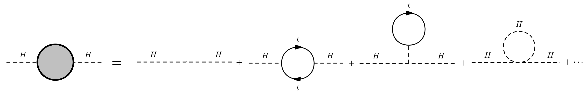
With the addition of superparters we find that a delicate cancellation occurs, where large loop corrections to the Higgs mass existed coming from the top quark (\(t\)) mass are now canceled by loop corrections arising from the stop quark (\(\tilde t\)) as is illustrated in Figure 2.4. Now, in order for the MSSM to solve the hierarchy problem in this way, we expect the characteristic mass scale of the supersymmetry breaking sector to be on the order of \(m_{soft}\) = 1 TeV. Therefore, it is reasonable to expect that masses of the few lightest sparticles are approximately at the TeV scale and are potentially reachable at the LHC!
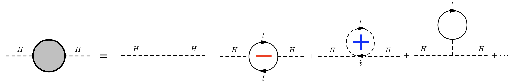
Within the framework of the MSSM it is now possible to construct terms in the Lagrangian that violate Baryon (\(B\)) and Lepton number (\(L\)) to the tune that the proton would decay in approximately \(10^{-2}\) seconds (for \(\mathcal {O}(1)\) R-parity violating couplings, or if minimal flavor violation is assumed the lifetime can be extended to 1 year). We know of course that the proton does not rapidly decay (with lifetime bounds currently at \(6\times 10^{39}\) years) and we also do not observe lepton number violation, so this problem must be addressed in the theory. A popular solution is to add in a discrete symmetry known as “R-parity,” defined as the following, \begin {equation} \text {\emph {P}}_{R}=(-1)^{3(B-L)+2S} \end {equation} Where \(S\) is the spin of the particle. When R-parity is conserved at a vertex this forbids \(B\) and \(L\) violation entirely. This seems like a pretty reasonable thing to do, as \(B\) and \(L\) seem to be pretty much conserved as far as we can tell. Also this R-parity conserving solution (RPC) necessarily demands that the Lightest Supersymmetric Particle (LSP) be stable2, which would give us a very convenient dark matter candidate. While this discrete symmetry does indeed accomplish its purpose, R-parity is, from a theoretical viewpoint, completely ad hoc, without any fundamental justification.
An alternative solution is obtained by simply postulating that the MSSM should be extended by a gauged \(U(1)_{B-L}\) symmetry (of which R-parity is a discrete subgroup) which is spontaneously broken at some scale. This breaks \(L\) and, hence, \( \mathrm {\textit {B}}-\mathrm {\textit {L}}\) symmetry. However, \(B\) remains unbroken and therefore proton decay continues to be suppressed below its present experimental bounds. However, the parameters of the \( \mathrm {\textit {B}}-\mathrm {\textit {L}}\) MSSM must still be chosen so as to adequately suppress lepton number violating processes. This reproduces the exact MSSM particle spectrum with an additional three right handed neutrino chiral multiplets as well as a \(Z'_{B-L}\) (and its superpartner) from the broken symmetry. Below the scale of both spontaneous \( \mathrm {\textit {B}}-\mathrm {\textit {L}}\) and SUSY breaking, the observable sector of this theory contains precisely the particle spectrum and gauge group of the Standard Model. This is known as the \( \mathrm {\textit {B}}-\mathrm {\textit {L}}\) Minimal Supersymmetric Standard Model as described from the “bottom-up” approach. Also note that a “top-down” approach was shown to be possible in a series of papers [4, 5, 6, 7, 8, 9, 10] where this exact \( \mathrm {\textit {B}}-\mathrm {\textit {L}}\) MSSM is recovered as the low energy theory of heterotic superstring/M-theory. The continuous \(U(1)_{B-L}\) symmetry arising naturally as a consequence of the compactification of heterotic M-theory, which has long been known in a non-supersymmetric context to be the minimal extra gauging of the standard model that remains quantum mechanically anomaly free [11]. That is, the gauged \(U(1)_{B-L}\) that arises in this context gives a “natural way” to suppress unwanted baryon and lepton number violating decays. For all of these reasons, the \( \mathrm {\textit {B}}-\mathrm {\textit {L}}\) MSSM appears to be the simplest possible phenomenologically realistic theory of heterotic superstring/M-theory; being exactly the MSSM with right-handed neutrino chiral supermultiplets and spontaneously broken R-parity [12] The post-EWKSB particle content of the \( \mathrm {\textit {B}}-\mathrm {\textit {L}}\) MSSM is illustrated in Figure 2.5.

The gauge group for the \( \mathrm {\textit {B}}-\mathrm {\textit {L}}\) MSSM is then \begin {equation} SU(3)_{C} \times SU(2)_{L} \times U(1)_{Y} \times U(1)_{B-L} \end {equation} However, as discussed in detail in [8], it is equivalent and convenient to choose the gauge group to be \begin {equation} SU(3)_{C} \times SU(2)_{L} \times U(1)_{3R} \times U(1)_{B-L} \end {equation} where \(U(1)_{3R}\) is the canonical Abelian subgroup of \(SU(2)_{R}\). It was shown in [8] that there is no kinetic mixing between the field strengths of \(U(1)_{3R}\) and \(U(1)_{B-L}\) at any momentum scale, and that this is the unique basis with this property. This vastly simplifies the solution of the RGEs and therefore the analyses done in the cited works work in this gauge group and so as to remain consistent the literature we will as well. The particle content corresponding to this gauge group is illustrated in Figure 2.6.

Note the Blino (\(B'^{0}\)) and Rhino (\(W_{R}^{0}\)), corresponding to \(U(1)_{B-L}\) and \(U(1)_{3R}\) gauge symmetries respectively, in the Figure.
In this theory the \(U(1)_{B-L}\) symmetry can in principle be spontaneously broken by the right-handed sneutrino acquiring an non-vanishing vacuum expectation value (VEV). It was proven that this VEV could dynamically occur via radiative breaking in the \( \mathrm {\textit {B}}-\mathrm {\textit {L}}\) MSSM using a full renormalization group (RG) analysis in [10]. Of course, the symmetry must be spontaneously broken at a scale sufficiently high to account for the fact that its associated massive vector boson \(Z'_{B-L}\) has, so far, not been observed.
A consequence of the breaking of \(U(1)_{B-L}\) is the introduction of R-Parity violating terms, which will not significantly affect the mass eigenstates, but do introduce mixing between the gauginos and the standard model charged leptons [11]. These mixings are central to this thesis as these are what allow for RPV decays and result in interesting signatures not well covered by standard SUSY searches at collider experiments. Continuing to work in the \(SU(3)_{C} \times SU(2)_{L} \times U(1)_{3R} \times U(1)_{B-L}\) basis, the charged3 mixed mass eigenstates, called charginos, are related to the gauge eigenstates by unitary matrices \(\mathcal {V}\) and \(\mathcal {U}\) defined by \begin {align} \begin {pmatrix} \tilde \chi _{1}^{-} \\ \tilde \chi _{2}^{-} \\ \tilde \chi _{3}^{-} \\ \tilde \chi _{4}^{-} \\ \tilde \chi _{5}^{-} \end {pmatrix} =\mathcal {U} \begin {pmatrix} \tilde W^{-}\\ \tilde H_{d}^{-}\\ e^{-} \\ \mu ^{-} \\ \tau ^{-} \end {pmatrix},\hspace {1.0cm} \begin {pmatrix} \tilde \chi _{1}^{+} \\ \tilde \chi _{2}^{+} \\ \tilde \chi _{3}^{+} \\ \tilde \chi _{4}^{+} \\ \tilde \chi _{5}^{+} \end {pmatrix} =\mathcal {V} \begin {pmatrix} \tilde W^{+} \\ \tilde H_{u}^{+} \\ e^{+} \\ \mu ^{+} \\ \tau ^{+} \end {pmatrix} \end {align}
Where the explicit values for the entries in \(\mathcal {V}\) and \(\mathcal {U}\) can be found in [11]. For the analogous neutral mass eigenstates, neutralinos, we have an even more complicated situation. First, it has been shown that mixing with the first- and second-family right-handed neutrino would lead to active sterile neutrino oscillations [11]. Unless and until there is more experimental evidence of such oscillations, we will assume that they do not exist. Therefore, the mixing with the first and second-family right-handed neutrinos is negligible and we include only mixing with the three families of left-handed neutrinos and the third-family right-handed neutrino [11]. The neutralinos are then related to the gauge eigenstates by unitary matrix \(\mathcal {N}\) defined by \begin {align} \begin {pmatrix} \tilde \chi _{1}^{0} \\ \tilde \chi _{2}^{0} \\ \tilde \chi _{3}^{0} \\ \tilde \chi _{4}^{0} \\ \tilde \chi _{5}^{0} \\ \tilde \chi _{5}^{0} \\ \tilde \chi _{5}^{0} \\ \tilde \chi _{5}^{0} \\ \tilde \chi _{5}^{0} \end {pmatrix} =\mathcal {N} \begin {pmatrix} \tilde W_{R}\\ \tilde W^{0}\\ \tilde H_{d}^{0}\\ \tilde H_{u}^{0}\\ \tilde B'\\ \nu _{3}^{c}\\ \nu _{e}\\ \nu _{\mu }\\ \nu _{\tau } \end {pmatrix} \end {align}
Where again the explicit values for the entries in \(\mathcal {N}\) can be found in [11]. Now due to the relative smallness of the RPV couplings we expect RPV decays primarily coming from the LSP of the theory, as heavier charginos/neutralinos would prefer RPC decay channels. So it then becomes important to determine if the \( \tilde {\chi }^{\pm }_{1}/\tilde {\chi }^{0}_{1}\)4 are even likely candidates to be the LSP in the \( \mathrm {\textit {B}}-\mathrm {\textit {L}}\) MSSM. An extensive study involving the statistical scanning over all dimensionful parameters of the soft SUSY breaking terms was done in [11] and does motivate \( \tilde {\chi }^{\pm }_{1}/\tilde {\chi }^{0}_{1}\) as likely LSPs in the \( \mathrm {\textit {B}}-\mathrm {\textit {L}}\) MSSM. This scan is discussed in more detail in Chapter 5 where additional experimental considerations are taken into account as well.
Located at the CERN near Geneva, Switzerland, the Large Hadron Collider (LHC) [14] is a circular particle accelerator made up of 27 kilometers of superconducting magnets and RF cavities a hundred meters beneath the Franco-Swiss countryside. The LHC is fed by a series of smaller accelerators, each subsequent accelerator increasing the energy of the particles by an order of magnitude or more. This impressive complex of accelerators is shown in Figure 3.1. A small bottle of hydrogen feeds a small fraction of its contents into a Duoplasmatron which ionizes the hydrogen into its constituent protons and electrons. The protons are then injected in Linac2 where they reach 50 MeV. Next they are passed on into the Booster, the Proton Synchrotron, and then the Super Proton Synchrotron, which accelerate the protons to an energy of 1.4 GeV, 25 GeV, and 450 GeV respectively. Finally they enter the LHC where the adjacent oppositely moving beams of protons are each accelerated to the highest energy of 6.5 TeV (99.9999991% the speed of light). The parallel beams meet at four crossing points along the LHC. The protons collide at these points with a center-of-mass energy of \( \sqrt {s}\) = 13 TeV. The actual operation energies were 7 TeV (2010-2011) and 8 TeV (2012) during Run-1, and 13 TeV during Run-2. The four independent physics experiments, A Large Ion Collider Experiment (ALICE) [15], A Toroidal LHC ApparatuS (ATLAS) [16], the Compact Muon Solenoid (CMS) [17], and the Large Hadron Collider beauty (LHCb) [18] exist at each collision point as seen in Figure 3.1.

There are two primary types of magnets, the dipoles (bending magnets) and the quadrupoles (squeezing magnets). The 27 km LHC ring is filled with 1232 15 m long main superconducting dipole magnets and 392 main super conducting quadrupole magnets which bend and focus the the beam around the collider. With an additional 6000 correcting magnets proton beams are able to be steered in stable circular trajectory. The standard dipole cross-section schematic is shown in Figure 3.2a, detailing the anatomy of the dipole. Focusing in on the superconducting coils in Figure 3.2b, note there are two dipoles with magnetic fields in opposite directions. We can easily observe via the familiar right hand rule of the magnetic force law (\(F=qv\times B\)) that the oppositely circulating proton beams will be bent in the same direction in their path around the LHC ring.
The quadrupole magnet cross-section is effectively identical to the dipole only now with a swap of the dipole superconducting coil configuration with that of the quadrupole configuration shown in Figure 3.3.
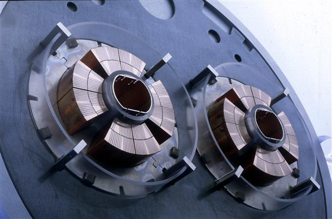
The last set of magnets required are the low-\(\beta \) triplets, so-called due to their three quadrupole system that is used to focus the beams, and that it is the triplet’s job to minimize the \(\beta \)-function, which is proportional to beam size, are located on either side of each of the four experiments. This system does a final squeeze on the beams, making them 12.5 times narrower – from 0.2 millimeters down to 16 micrometers across, all the while simultaneously crossing the opposing beams at the center of the detectors. Figure 3.4 illustrates these low-\(\beta \) triplets at work as the beam sizes are drastically reduced in the last 60 m on each side of the interaction point. After colliding, the particle beams are separated again by dipole magnets.
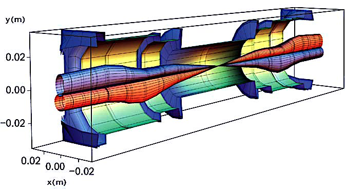
The proton beam structure consists of the base unit known as a “bunch” where each bunch is on the order of \(10^{11}\) protons. A bunch is a direct consequence of the harmonics of the RF cavities. Given the revolution frequency of the protons and RF frequency the LHC has a total of 35640 harmonics. Each one of these harmonics is known as a “bucket” and is effectively a potential well for the protons in which a bunch can exist. So while in principle the LHC could accelerate 35640 bunches at a time per beam, practically this would result in a bunch spacing of 2.5 ns and the LHC’s diverting magnets would not have enough time to trigger and execute a beam dump (never mind the fact that it would make data taking an incredible challenge as it would light up our detectors like a Christmas tree even if we could!). These technical restrictions give rise to the nominal proton beam at the LHC made up of 2808 bunches with 25 ns spacing (10 empty buckets spacing). Figure 3.5 shows a more detailed schematic of the 25 ns bunch structure. This amounts to \( 2808~\text {bunches} ~\times ~ 10^{11} ~\text {protons} = 3\cdot 10^{14}~\text {protons/beam}\), or \(6\cdot 10^{14} ~\text {protons}\) for the two beams.
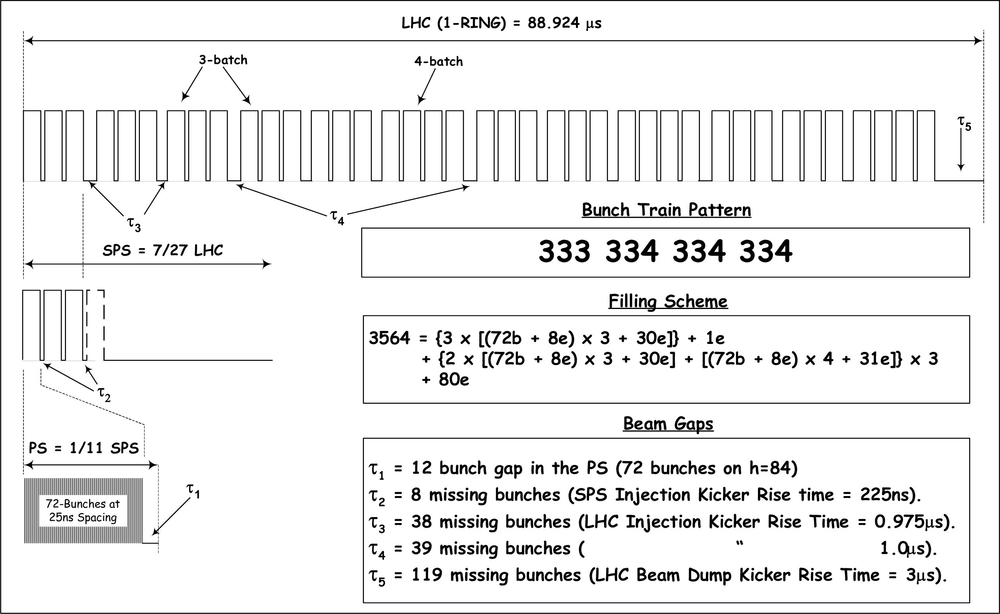
From September 2017 to the end of data-taking in 2017 this structure was modified to the “8 bunches” and “4 empty (slots)” spacing in order to mitigate excessive beam dumps caused by frozen particles of gas being detached from the inside of the beam pipe during a run. This resulted in a decrease of the number of bunches to 1920 but an actual increase in activity in the detector by the measure of the mean number of interactions per bunch crossing, \(\langle \mu \rangle \). Where \(\langle \mu \rangle \) corresponds to the mean of the Poisson distribution of the number of interactions per crossing calculated for each bunch. This is calculated from the instantaneous per bunch luminosity as \(\mu \)=\(L_{bunch}\times \sigma _{inel} / f_{r}\) where \(L_{bunch}\) is the per bunch instantaneous luminosity, \(\sigma _{inel}\) is the inelastic cross section which is taken to be 80 mb for 13 TeV collisions, and \(f_{r}\) is the LHC revolution frequency. This bunch structure change was reflected in standard luminosity vs. \(\langle \mu \rangle \) plot in Figure 3.6 as the infamous “double-hump” (Bactrian?) year in purple. Each fill of the LHC with two proton beams last for 10 hours with stable beam conditions, i.e. a fill corresponds to a productive physics data collection period before the beam is depleted to the point that the bunch density becomes low enough that it becomes more favorable to dump the beam and re-fill for another run than to continue the current run.
The number of interactions per bunch crossing is not only an important measure for data yield but also for the activity present in the detectors, as it directly influences physics analyses at almost every level. If the LHC were to be filled such that \(\langle \mu \rangle \) = 1 we would of course have very clean and straight forward detector signatures and this discussion would be moot. However the vast majority of potentially accessible processes at the LHC would be practically unattainable due to their extreme rarity, so the high rate of proton collisions is essential for modern collider particle physics analyses and the handling of many interactions is necessary. This additional activity to be handled is refered to as “pileup.”
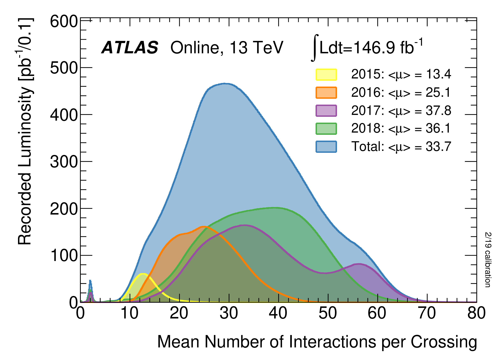
Figures 3.7 and 3.8 show ATLAS event displays for events with 25 and 66 reconstructed vertices, respectively, to demonstrate what these high pileup collisions look like in the ATLAS detector. So as one can easily imagine from these figures high pileup environments pose experimental difficulties for the detectors as the interaction of interest must be distinguished from all the other simultaneous collisions.
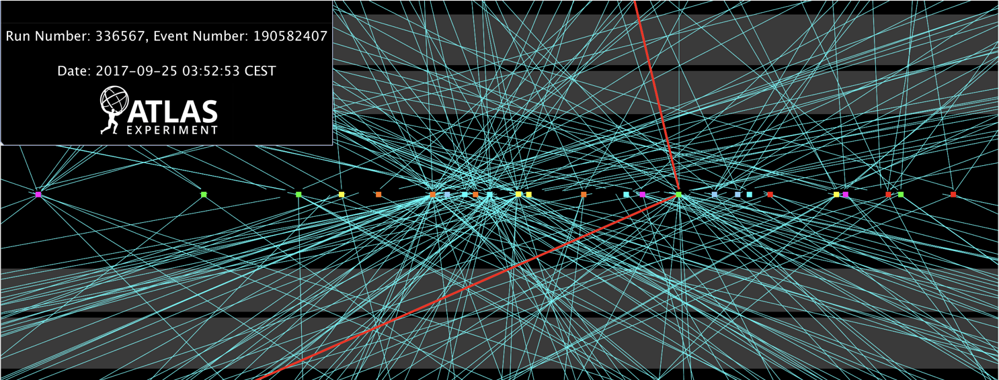
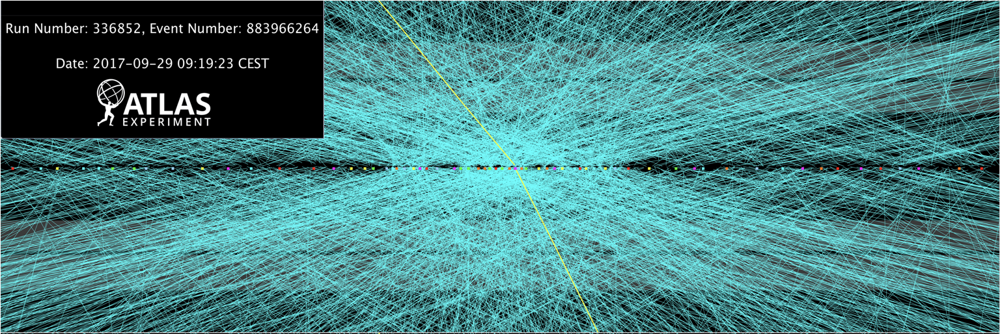
The ATLAS experiment is a general-purpose particle physics detector designed to observe particles produced in the high-energy pp and heavy-ion LHC collisions. It has a forward–backward symmetric cylindrical geometry and almost \(4\pi \) coverage in solid angle. ATLAS uses a right-handed coordinate system with its origin at the nominal interaction point (IP) in the center of the detector and the z-axis running along the beam line. The x-y plane is perpendicular to the beam line, and is referred to as the transverse plane. The x-axis points from the IP to the center of the LHC ring, and the y-axis points upward toward the earth’s surface. The detector half at positive z-values is referred to as the “A-side”, the other half the “C-side”. Cylindrical coordinates (r, \(\phi \)) are used in the transverse plane, \(\phi \) being the azimuthal angle around the beam pipe. The polar angle \(\theta \) is defined as the angle from the positive z-axis. The polar angle is often reported in terms of pseudorapidity, defined as \(\eta = -\ln [\tan (\frac {\theta }{2})]\). The inner tracking detector (ID) used for charged-particle tracking covers the pseudorapidity range \(|\eta |<\) 2.5 and consists of a silicon pixel detector, a silicon microstrip detector (SCT), and a transition radiation tracker (TRT) in the range \(|\eta |<\) 2.0. The ID is immersed in a 2 Tesla axial magnetic field produced by a thin superconducting solenoid. Electromagnetic (EM) and hadronic calorimeters outside the solenoid cover the pseudorapidity range \(|\eta |\leq 3.2\). A 4 Tesla toroid magnet then surrounds the calorimeters. Interleaved and surrounding the toroid barrel and endap magnets are the muon spectrometers, covering \(|\eta |\leq 2.7\).

A two-level triggering system reduces the total data-taking rate to approximately 1 kHz from the bunch crossing rate of 40,000 kHz.
Surrounded by a superconducting solenoid producing a 2 Tesla magnetic field, the Inner Detector measures the trajectories of charged particles and is composed of three layers of tracking detectors.

The closest sub-detector system to the beam line, the Pixel Detector requires the finest sensor granularity of any sub-detector on ATLAS. Covering the \(\eta \) range of \(|\eta |<\)2.5, the Pixel Detector is composed of four cylindrical barrel layers with 1736 sensor modules and three disk-shaped endcap layers with 288 modules. While the detector has just 1.9 \(\text {m}^2\) of total active material with pixel sizes just 50\(\times \)400\(~\mu \text {m}^2\) for the external layers and 50\(\times \)250\(~\mu \text {m}^2\) for the innermost layer (IBL), The Pixel Detector totals an impressive 92 million pixels (92 million electronic channels) [16]. The pixel sensors provide a resolution of 10 \(\mu \)m in the transverse plane, and 115 \(\mu \)m in the z direction (r direction) of the barrel (endcap) modules. An illustration in Figure 3.10 shows the barrel Pixel layers that reach just beyond 12 cm radially out from the beam line.
The next detector is the Semiconductor Tracker, which uses the same basic technology as the Pixels, but the fundamental unit of silicon is a “strip.” Covering \(|\eta |<\)2.5 the SCT consists of 4,088 two-sided modules and over 6 million implanted readout strips (6 million channels). The total instrumented area of 60 square meters of silicon is distributed over 4 cylindrical barrel layers and 18 planar endcap discs. Readout strips every 80 \(\mu \)m on the silicon, allowing the positions of charged particles to be recorded to an accuracy of 17 \(\mu \)m per layer (in the direction transverse to the strips). Thanks to stereo information from the strips, the resolution in the z (r) direction of the barrel (endcap) modules is 580 \(\mu \)m.
The Transition Radiation Tracker is the outermost and largest-by-volume system of the ID. At a volume of 12 \(\text {m}^3\) the TRT consists of 350,000 small-radius (4 mm diameter) drift tubes called ‘straws.’ Each straw functions as a simple anode (a 0.03 mm diameter gold-plated tungsten wire at the center) and cathode (outer aluminium-coated kapton film) immersed in an ’electrolyte’ (a Xe-based gas mixture). electrons drifting towards the anode. In the strong electric field close to the anode, avalanche multiplication leads to a signal on the anode wire. The TRT records if the signal on the wire above a low threshold every 3.25 ns. The maximum drift time (from ionization at the edge of the straw) is 60 ns. Transition radiation occurs for high energy electrons going through a polymer material between the straws. Expensive Xenon gas is used in the TRT since it has a higher absorption cross section for these transition radiation X-rays than the much cheaper Argon. The transition radiation results in larger ionization and a larger pulse. The TRT records if the signal on the wire goes above a high threshold every 25 ns. Precision measurement of 130 microns (particle track to wire) are possible and the TRT provides electron identification information independent from the calorimeters.
ATLAS includes two types of calorimeter systems, the Liquid Argon calorimeter (LAr) and the Tile calorimeter (TileCal) for measuring electromagnetic and hadronic showers respectively. Together, these cover a region of \(|\eta | < 4.9\). A cut away view of the calorimeter system can be seen in Figure 3.11.
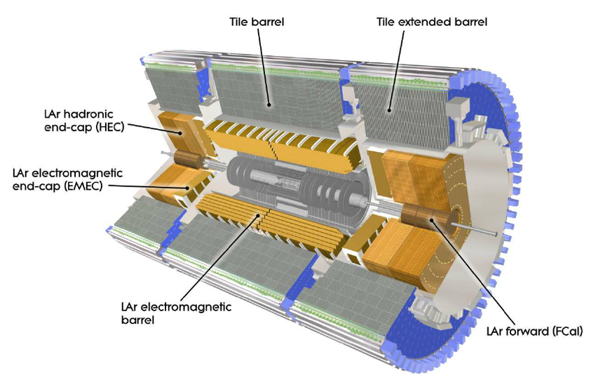
The EM calorimeter is a lead/liquid-argon (LAr) sampling calorimeter with an accordion geometry made up of layers of passive Pb absorber alternating with active liquid argon detector layers. As and electron or a positron or photon passes through the absorber the particle will cascade electromagnetically: photons produce electron-positron pairs and electrons/positrons will emit bremsstrahlung photon radiation; the daughter electrons, positrons, and photons also interact, resulting in a particle shower. Most of the energy will have been absorbed after traversing about 20 radiation lengths (\(X_{0}\)) of absorber (longitudinal depth). Note that lead has a radiation length of only 0.56 cm so the electromagnetic calorimeter is able to be rather compact at 53 cm (62 cm) deep in the barrel (endcap). The lateral width of the shower in a material is characterized by its Moliére radius, the radius of a cone in which 90% of the shower energy is contained. Note that lead has a Moliére radius of only 1.6 cm, so the energy deposits in the calorimeter from electrons, positrons, and photons have a very narrow width in the detector. This is a key for identification of electrons.
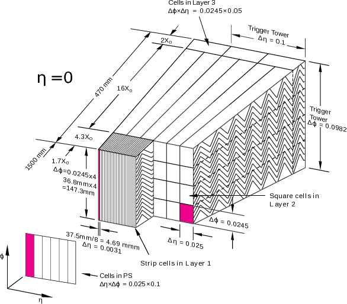
The calorimeter is divided into a barrel section (EMB) covering the pseudorapidity region \(|\eta |<\) 1.475, and two endcap sections (EMEC) covering 1.375 \(<|\eta |<\) 3.2. The barrel and endcap calorimeters are immersed in three LAr-filled cryostats, and are segmented into three layers for \(|\eta |<\) 2.5. The layered and accordion structure of the LAr are illustrated in Figure 3.12, showing a section of the barrel LAr calorimeter. Layer 1 covers \(|\eta |<\) 1.4 and 1.5 \(<|\eta |<\) 2.4, has a thickness of about 4.3 radiation lengths (\(X_{0}\)) and is finely segmented in the \(\eta \) direction, typically 0.003 \(\times \) 0.1 in \(\Delta \eta \times \Delta \phi \) in the EMB, to provide discrimination between electromagnetic showers initiated by a single electron or photon and those initiated by the two photons from the decay of a neutral pion [16]. Layer 2, which collects most of the energy deposited in the calorimeter by electromagnetic showers, has a thickness of about 17 \(X_{0}\) and a granularity of 0.025 \(\times \) 0.025 in \(\Delta \eta \times \Delta \phi \) [16]. Layer 3, which has a granularity of 0.05 \(\times \) 0.025 in \(\Delta \eta \times \Delta \phi \) and a depth of about 2\(X_{0}\), is used to correct for leakage beyond the EM calorimeter for high-energy showers [16]. In front of the accordion calorimeter, a thin presampler layer (PS) covering the pseudorapidity interval \(|\eta |<\) 1.8, is used to correct for energy loss upstream of the calorimeter. The PS consists of an active LAr layer with a thickness of 1.1 cm (0.5 cm) in the barrel (endcap) and has a granularity of \(\Delta \eta \times \Delta \phi \) = 0.025 \(\times \) 0.1. The transition region between the EMB and the EMEC, 1.37 \(<|\eta |<\) 1.52, has a large amount of passive material (from cables and services to the inner detector) in front of the first active calorimeter layer ranging from 5 to almost 10\(X_{0}\) [16]. This section is instrumented with scintillators located between the barrel and endcap cryostats, and extending up to \(|\eta |\) = 1.6. Note that this transition region is specifically separated in the electron ID due to the lack of precise information available. This allows an analyzer to veto the region entirely which is common practice.
The main function of the Tile Calorimeter (TileCal) is to contribute to the energy reconstruction of the jets produced in the proton-proton interactions and, with the addition of the end-cap and forward calorimeters, to provide a good \( E_{\mathrm {T}}^{\mathrm {miss}}\) measurement [29]. The TileCal surrounds the EM calorimeter and extends radially from 2280 mm to radius of 4230 mm. It consists of three large segments in as can be seen in Figure 3.13. The middle segment consists of an alternating iron/scintillator material tile calorimeter with barrel coverage \(|\eta |<\) 1.7. The two outer segments, known as the hadronic end cap (HEC), instead use copper for their absorber and LAr for the active material, spanning 1.5 \( < |\eta | < \) 3.2. Figure 3.13 also illustrates the wedge based module structure of the TileCal. The acceptance is extended by two copper/LAr and tungsten/LAr forward calorimeters covering 3.1\(<|\eta |<\) 4.9, and hosted in the same cryostats as the EMEC.
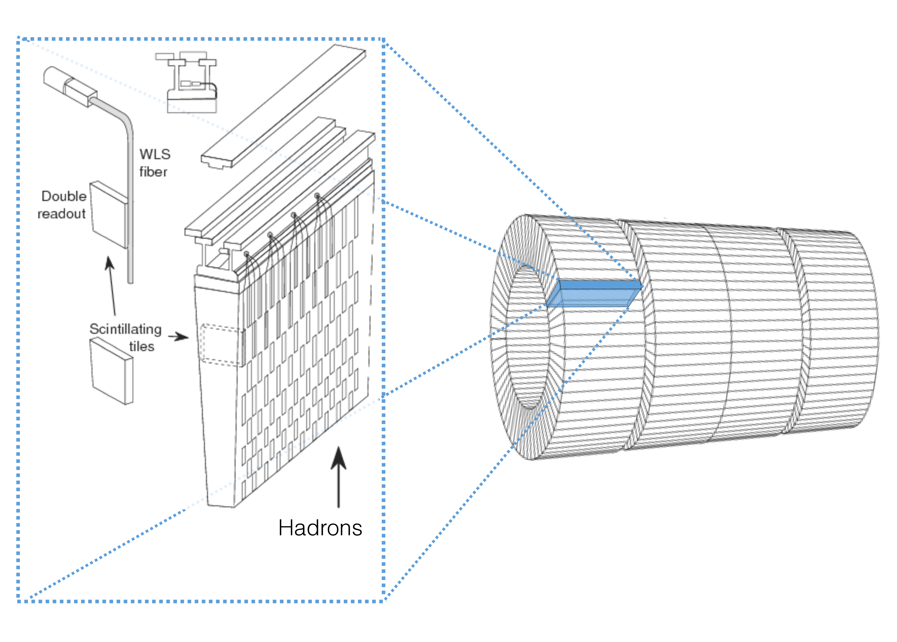
The Muon Spectrometer (MS), located beyond the calorimeters is the outermost subdetector of ATLAS and is shown in Figure 3.14. It consists of three large air-core superconducting toroid systems (two end cap and one barrel) with eight coils each, providing a magnetic field of \(\small \approx \) 0.5 T [30]. The deflection of the muon trajectories in the bending plane of the magnetic field (the “precision coordinate”) is measured via hits in three layers of monitored drift tube (MDT) precision chambers covering the region in pseudorapidity up to \(|\eta |<\)2.7. In the innermost endcap wheels of the MS, cathode strip chambers (CSC) are used instead of MDTs in the region 2.0 \(<|\eta |<\) 2.7 [30]. Three layers of resistive plate chambers (RPC) in the barrel (\(|\eta |<\) 1.05) and 3–4 layers of thin gap chambers (TGC) in the endcaps (1.05\(<|\eta |<\)2.4) provide the muon trigger, and also measure the muon trajectory in the non-bending coordinate of the toroid magnets (the “second coordinate”) [30]. In the Phase-I upgrade, during the second long shutdown (LS2), the Small Wheels will be replaced by the New Small Wheels (NSW) that use a small-strip TGC and Micro-Mesh Gaseous Structure chambers used for both triggering and precision tracking [30].
Now that the physical detectors have been described these individual physical detector read outs are translated into the representations of the physical particles that deposited the energy corresponding to those read outs. The four types of particles (electrons, photons, hadrons, muons) that can be directly detected at ATLAS are shown in Figure 3.15. Particles which do not interact with the detector and escape ATLAS entirely can be inferred by imposing conservation of momentum in the \(x\)-\(y\) plane. As the initial state partons inside the proton have negligible momenta transverse to the proton beams, conservation of momentum implies that the sum of the momenta of the final state detected particles in the plane transverse to the proton beams should be zero, and any imbalance implies the presence of undetected particles like neutrinos.
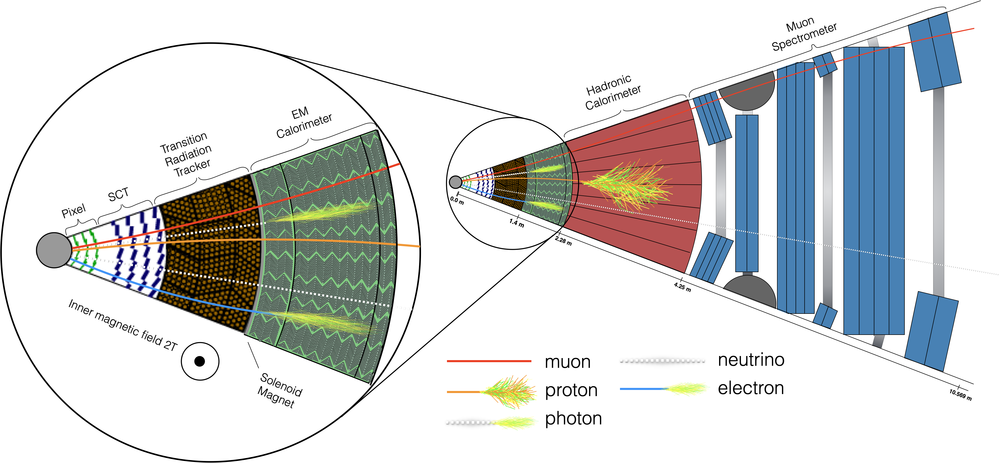
Electrons and photons are reconstructed from electromagnetic clusters deposited in the EM calorimeter layer. The EM clusters that can then be matched to charged particle tracks are then reconstructed electrons, and those that can’t, photons. Further identification criteria are then used to distinguish electrons and photons from backgrounds. A detailed discussion of electron identification is given in Chapter 4.
Muon reconstruction is first performed independently in the ID and MS. The information from individual subdetectors is then combined to form the muon tracks that are used in physics analyses [31]. The combined reconstruction then proceeds in four different ways depending on the information available from each sub-detector [31]:
Overlaps between different muon types are resolved before producing the collection of muons used in physics analyses. When two muon types share the same ID track, preference is given to CB muons, then to ST, and finally to CT muons. The overlap with ME muons in the muon system is resolved by analyzing the track hit content and selecting the track with better fit quality and larger number of hits [31].
Jets were described from a theoretical stand point in Section 2.2.1. In ATLAS, jet reconstruction uses the energy clusters in the EM and hadronic calorimeters, as well as the reconstructed tracks from the ID from the charged particles in the jet. Jet reconstruction can follow several recombination algorithms, however the most widely used algorithm at ATLAS is the anti-\(kt\) algorithm [32, 33]. At each step, the anti-kt algorithm combines the pair of objects that have the smallest distance apart, where the distance is measured as the angular separation (\(\sqrt {\Delta \phi ^2 + \Delta \eta ^2}\)) between the objects multiplied by the minimum of the inverse of the \( E_{\mathrm {T}}\) of either object. Note that the weighting by the inverse \( E_{\mathrm {T}}\) gives rise to the “anti-\(kt\)” name and, more importantly, means that the combination process starts with the highest \( E_{\mathrm {T}}\) cluster. This combination process stops when the angular separation between objects exceeds a user-specified cone radius \(R\), which is usually 0.4 for most ATLAS analyses. The final combined object is called a jet.
The missing transverse energy serves as a proxy for particles that do not interact with any detector element. In the \(x\)-\(y\) plane, transverse to the proton beams, the missing transverse momentum points in the opposite direction to the total transverse momentum calculated from adding up the transverse momenta of the calibrated electrons, photons, muons, and jets, and any unclustered ”soft” calorimeter deposits. The missing transverse energy is the magnitude of the missing transverse momentum vector.
As discussed in Section 3.1.2, the nominal filling scheme results in a proton bunch spacing of 25 ns and so the collision rate is roughly 40 million events every second. Writing this much data to disk becomes intractable and impractical. Additionally most collisions produce physically uninteresting events coming from high cross section SM processes and as the gambit here at the LHC is to measure ultra rare processes there is no love lost. The goal then is to select the “most interesting” events to be saved at the highest rate possible. This is what is defined as the Trigger. Computational resources ultimately become the limiting factor (as physicists would keep every event if they could just to have them) resulting in an upper limit of 2000 events per second being able to be saved at ATLAS. ATLAS specifically has a two-level trigger system [34] used to select events. The first-level trigger is implemented in hardware (referred to often as “online” or Level 1 (L1)) and uses a subset of the detector information to reduce the accepted rate to a maximum of about 100 kHz. This is followed by a software-based trigger (referred to often as “offline” or the High Level Trigger (HLT)) that reduces the accepted event rate to 1 kHz on average, depending on the data-taking conditions. In Figures 3.16a and 3.16b the L1 and HLT trigger rates are shown for a typical fill in the 2018 data taking period. As is apparent in the figures the rate falls off rapidly over time during a fill, as the number of protons per bunch decreases and the emittance (transverse spread of protons) increases.
The ATLAS detector was designed to identify electrons with high efficiency as electrons are important for many measurements, including measurements of the properties of the \( W\) and \( Z\) bosons, the Higgs boson, and the top quark, as well as for many searches for supersymmetric and exotic particles that decay to final states with electrons. I have contributed to performance studies and the development of improved algorithms used to identify electrons in the ATLAS “\(e/\gamma \)” (e-gamma) performance group. Through out this chapter electrons and photons may be spoken about together as they are effectively indistinguishable from the point of view of the EM Cal, but the primary focus will be electrons.
The job of performance groups at ATLAS is not only to develop, maintain and improve the algorithms that the vast majority of analyses will use to identify particles at ATLAS but also to provide data/MC correction factors for selection efficiencies related to the trigger, particle isolation, identification, and reconstruction. These factors are derived from the combination of efficiencies measured at every level along the chain leading to an analysis electron/photon object. In the electron and photon performance group, electron efficiencies are estimated directly from data using tag-and-probe methods. These methods select, from known resonances such as \(Z \rightarrow ee\) or \(J/\Psi \rightarrow ee\), unbiased samples of electrons (probes) by using strict selection requirements on the second object (tags) produced from the particle’s decay. The events are selected on the basis of the electron–positron invariant mass. The efficiency of a given requirement can then be determined by applying it to the probe sample after accounting for residual background contamination. The combined total efficiency is then given by the following equation, \begin {equation*} \epsilon _{total}=\epsilon _{EMclus}\times \epsilon _{reco}\times \epsilon _{id}\times \epsilon _{iso}\times \epsilon _{trig} = \frac {N_{cluster}}{N_{all}}\times \frac {N_{reco}}{N_{cluster}}\times \frac {N_{id}}{N_{reco}}\times \frac {N_{iso}}{N_{id}}\times \frac {N_{trig}}{N_{N_{iso}}} \end {equation*} The following sections will detail what goes into determining each numerator on the right most side of this equation with special attention paid to the electron identification and recent improvements.
The topo-cluster reconstruction algorithm begins by forming proto-clusters in the EM and hadronic calorimeters using a set of noise thresholds in which the cell initiating the cluster is required to have \(|\zeta _{\mathrm {cell}}^{\mathrm {EM}}|\geq \) 4, where \begin {equation} \zeta _{\mathrm {cell}}^{\mathrm {EM}}= \frac {E_{cell}^{\mathrm {EM}}}{\sigma _{\mathrm {noise,cell}}^{\mathrm {EM}}} \end {equation} \(E_{cell}^{\mathrm {EM}}\) is the cell energy at the EM scale and \(\sigma _{\mathrm {noise,cell}}^{\mathrm {EM}}\) is the expected cell noise [36]. The expected cell noise includes the known electronic noise and an estimate of the pile-up noise corresponding to the average instantaneous luminosity expected. In this initial stage, cells from the presampler and the first LAr EM calorimeter layer are excluded from initiating proto-clusters, to suppress the formation of noise clusters. The proto-clusters then collect neighboring cells with significance \(|\zeta _{\mathrm {cell}}^{\mathrm {EM}}|\geq \) 2. Each neighbor cell passing the threshold of \(|\zeta _{\mathrm {cell}}^{\mathrm {EM}}|\geq \) 2 becomes a seed cell in the next iteration, collecting each of its neighbors in the proto-cluster. If two proto-clusters contain the same cell with \(|\zeta _{\mathrm {cell}}^{\mathrm {EM}}|\geq \) 2 above the noise threshold, these proto-clusters are merged. A crown of nearest-neighbor cells is added to the cluster independently on their energy. This set of thresholds is commonly known as ‘4-2-0’ topo-cluster reconstruction. Proto-clusters with two or more local maxima are split into separate clusters; a cell is considered a local maximum when it has \(E_{cell}^{\mathrm {EM}}>\) 500 MeV, at least four neighbors, and when none of the neighbors has a larger signal.
An electron is defined as an object consisting of a cluster built from energy deposits in the calorimeter (supercluster) and a matched track (or tracks) to that cluster. Electron reconstruction in the central region of the ATLAS detector (\(|\eta | < 2.47\)) proceeds in the several steps illustrated in the flow-chart in Figure 4.1.
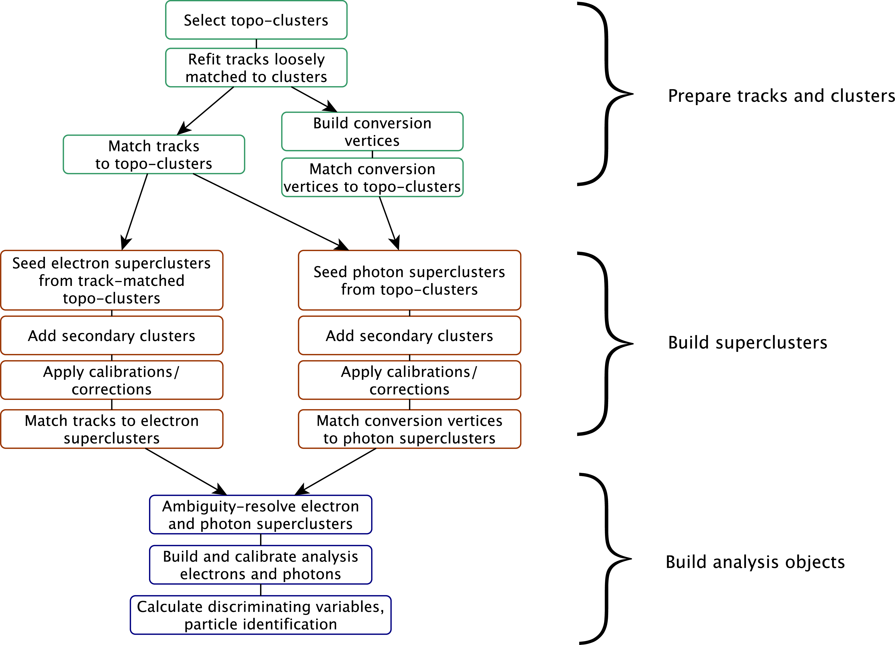
Note that EM clusters were determined using a “sliding-window” approach up until an improvement was implemented in 2018 in a move to a so-called “superclusters” based algorithm, which takes into account secondary satellite clusters created via bremsstrahlung and conversions originating from the incident electron or photon. To better understand the improvements, the sliding-window algorithm is described briefly first.
The \(\eta \times \phi \) space of the EM calorimeter is divided into a grid of \(200 \times 256\) elements (towers) of size \(\Delta \eta \times \Delta \phi =0.025\times 0.025\), corresponding to the granularity of the second layer of the EM calorimeter. For each element, the energy (approximately calibrated at the EM scale), collected in the first, second, and third calorimeter layers as well as in the presampler (only for \(|\eta |<1.8\), the region where the presampler is located) is summed to form the energy of the tower [36]. In the sliding-window approach a window with fixed size of \(3\times 5\) in units of \(0.025 \times 0.025\) (in \(\Delta \eta \times \Delta \phi \) space), corresponding to the granularity of the EM calorimeter middle layer, searches for longitudinal towers with total cluster transverse energy above 2.5 GeV [36]. The clusters are then formed around these seeds using a clustering algorithm that allows for duplicates to be removed [37] . The cluster kinematics are reconstructed using an extended window depending on the cluster position in the calorimeter, using \(3\times 7\) cells in the barrel and \(5\times 5\) cells in the endcap. The sliding window of size \(3\times 5\) then moves by \(0.025\) in either the \(\eta \) or \(\phi \) direction to be centered on an adjacent tower, and the seed-cluster reconstruction process is repeated until this has been performed for every tower [36].
The fixed-sized cluster sliding-window algorithm described in the previous section has been replaced with an improved method using dynamic, variable-size clusters, called superclusters. While fixed-size clusters naturally provide a linear energy response and good stability as a function of pile-up, dynamic clusters change in size as needed to recover energy from bremsstrahlung photons or from electrons from photon conversions [36]. Improvements in the calibration techniques [38] ultimately freed the reconstruction from having to use fixed-size clusters, allowing the cluster to change in size dynamically. The reconstruction of electron and photon superclusters proceeds independently, each in two stages: in the first stage, EM topo-clusters are tested for use as seed cluster candidates, which form the basis of superclusters; in the second stage, EM topo-clusters near the seed candidates are identified as satellite cluster candidates, which may emerge from bremsstrahlung radiation or topo-cluster splitting. Satellite clusters are added to the seed candidates to form the final superclusters if they satisfy the necessary selection criteria [36].
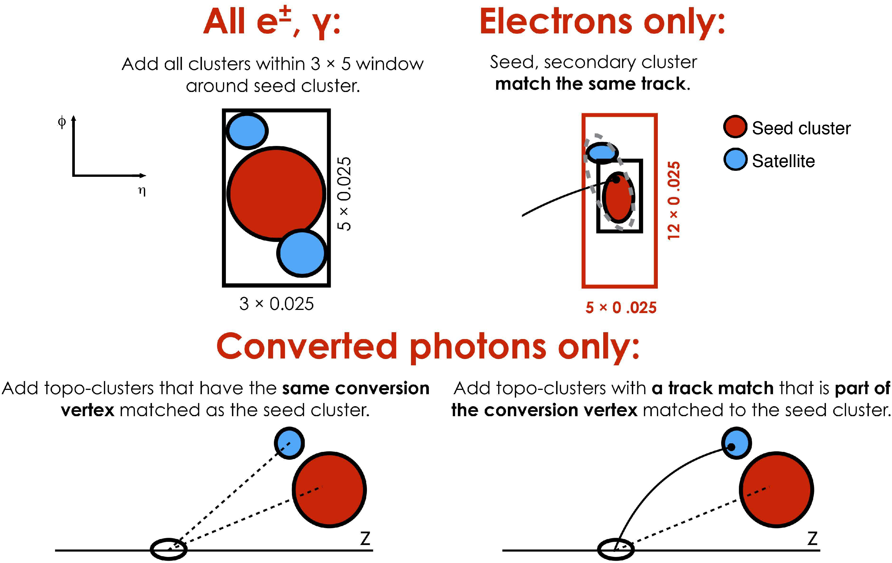
Track reconstruction proceeds in two steps: pattern recognition and track fit. The standard ATLAS pattern recognition uses the pion hypothesis for energy loss due to interactions with the detector material. This has been complemented with a modified pattern recognition algorithm which allows up to 30% energy loss at each intersection of the track with the detector material to account for possible bremsstrahlung. If a track seed (consisting of three hits in different layers of the silicon detectors) with a transverse momentum larger than 1 GeV can not be successfully extended to a full track of at least seven hits using the pion hypothesis and it falls within one of the EM cluster regions of interest5, a second pattern recognition attempt is performed using an electron hypothesis that allows for larger energy loss. Track candidates with \( p_{\mathrm {T}}\) \(>\) 400 MeV are then fit either with the pion hypothesis or the electron hypothesis (according to the hypothesis used in the pattern recognition), using the ATLAS Global \(\chi ^2\) Track Fitter [39]. If a track candidate fails the pion hypothesis track fit (for example, due to large energy losses), it is refit with the electron hypothesis. In this way, a specific electron-oriented algorithm has been integrated into the standard track reconstruction. It improves the performance for electrons and has minimal interference with the main track reconstruction.
The obtained tracks are loosely matched to EM clusters using the distance in \(\eta \) and \(\phi \) between the position of the track, after extrapolation, in the calorimeter middle layer and the cluster barycenter. This loose track-to-cluster match requires \(| \eta _{\mathrm {cluster}} - \eta _{\mathrm {track}} | <0.05\) and \(0.10 < q \times (\phi _{\mathrm {cluster}} - \phi _{\mathrm {track}}) <0.05\). This asymmetric condition for the matching in \(\phi \) is designed to account for energy-loss due to bremsstrahlung 6. Tracks which satisfy this loose association to EM clusters and which have at least four precision hits are then refit using an optimised Gaussian Sum Filter (GSF) [40], which takes into account the non-linear bremsstrahlung effects. Radiative losses of energy lead to a decrease in momentum, resulting in increased curvature of the electron’s trajectory in the magnetic field. When accounting for such losses via the GSF method, all track parameters relevant to the bending-plane are expected to improve. Such a parameter is the transverse impact parameter significance: \(d_{0}\) divided by its estimated uncertainty \(\sigma (d_{0})\) [41]. Since the transverse impact parameter \( d_0\) of conversions from bremsstrahlung photons is expected to be large and point opposite to the curvature of the track, the quantity is multiplied with the reconstructed electric charge \(q\) of the electron. Comparing \(q\cdot \)\( |d_{0}/\sigma (d_0)|\) in Figure 4.3a for tracks fitted with the pion hypothesis and tracks fitted with the GSF shows a clear improvement of the parameter for genuine electron tracks. Then in Figure 4.3b the relative difference of the ratio of the electron-candidate charge to its momentum, \((q/p)^{true}\), at the true generator value to the reconstructed value \((q/p)^{reco}\) is shown and the GSF method shows a clear sharper and better-centred distribution near zero with smaller tails [41].
The matching of the track candidate to the cluster seed completes the electron reconstruction procedure. A similar matching as the one described in Section 4.4.4 for the re-fit track is done but with with stricter conditions. Track-matching in \(\phi \) is tightened to \(-0.10< \Delta \phi < 0.05\), keeping the original alternative requirement \(-0.10< \Delta \phi _{res} < 0.05\) the same [41]. If several tracks fulfill the matching condition, one track is chosen as the “primary” track. The choice is based on an algorithm using the cluster-track distance \(R\) calculated using different momentum hypotheses, the number of pixel hits and the presence of a hit in the first silicon layer [42]. Electron candidates which have no associated tracks with at least four hits in the pixel or SCT layers are removed from the collection of electron candidates and are considered to be photons. For the remaining objects, if the primary electron candidate track can be associated to a secondary vertex and has no pixel hits, then this object is classified as a photon, as well. Such an object is very likely to be from a photon conversion, and is thus removed from the collection of electron candidates. The criteria above are the only source of efficiency loss in the electron reconstruction step in case the electromagnetic cluster has been reconstructed. The remaining objects are considered as electron candidates for the remaining steps. A further classification is performed based on the electron candidate’s \( E/p\), \( p_{\mathrm {T}}\), the presence of a pixel hit, and the secondary vertex information. This classification is used to determine whether the object is only considered as an electron candidate (unambiguous case) or if it is considered both in the collection of photon candidates and the collection of electron candidates (ambiguous cases) [41]. Candidates considered unambiguously as electrons have:
In all other cases the object is considered ambiguous. The classification into ambiguous objects is to keep a high reconstruction efficiency for photons. Most importantly, cases with \( E/p\) \(>10\) or \( p_{\mathrm {T}}\) \(<2\) GeV are always ambiguous to avoid losing unconverted photons where a pileup track has been matched [41]. They are treated in the same way as the candidates solely classified as electrons. However, all supported identification criteria require a hit in the innermost pixel layer and therefore remove a class of electrons always classified as ambiguous. The electron cluster is then re-formed using \(3 \times 7\) (\(5 \times 5\)) longitudinal towers of cells in the barrel (endcaps) of the EM calorimeter. The energy of the clusters must ultimately be calibrated to the original electron energy. This is performed using multivariate techniques [43] based on simulated MC samples, and occurs at analysis-level, rather than during the reconstruction step. The four-momentum of the electrons is computed using information from both the final calibrated energy cluster and the best track matched to the original seed cluster. The energy is given by the final calibrated cluster, while the \(\phi \) and \(\eta \) directions are taken from the corresponding track parameters with respect to the beam-spot [41].
Further quality criteria, called ‘identification selections,’ are used to improve the purity of selected electron and photon objects. The identification of prompt electrons relies on a likelihood discriminant constructed from quantities measured in the inner detector, the calorimeter and the combined inner detector and calorimeter.
For use in the electron identification, the likelihood discriminant, effectively the test statistic in a modified likelihood ratio, is constructed by creating a set of probability distribution functions (pdfs) from a list of \(n\) electron identification variables with power for discriminating signal from background. From the product of these pdfs the likelihood, \(\mathcal {L}_{S}\) (\(\mathcal {L}_{B}\)), for signal (background) can be formed as is seen in Equation ?? below. \begin {equation} \mathcal {L}_{S(B)}(\bf {X})=\prod _{i=1}^{n} P_{S(B),i}(x_{i}) \label {eq:likelihoods} \end {equation} \(P_{S,i}(x_{i})\) is the value of the signal pdf for quantity \(i\) at value \(x_i\) and \(P_{B,i}(x_{i})\) is the corresponding value of the background pdf. The signal is prompt electrons, while the background is the combination of jets that mimic the signature of prompt electrons, electrons from photon conversions in the detector material, and non-prompt electrons from the decay of hadrons containing heavy flavors. The quantities selected for the LH are mostly uncorrelated, and any residual correlations are neglected. The electron is given a score, or discriminant (or test statistic) value \(d_{\mathcal {L}}\), based on the following equation, which combines information from this entire variable set: For each electron candidate, a discriminant \(d_{L}\) is formed: \begin {equation} \label {eq:egamma:discriminant} d_{\mathcal {L}} = \frac {\mathcal {L}_{S}}{\mathcal {L}_{S} + \mathcal {L}_{B}}; \end {equation} The electron LH identification is based on this discriminant. The discriminant \(d_L\) nominally has a sharp peak at unity (zero) for signal (background); this sharp peak makes it inconvenient to select operating points as it would require extremely fine binning. An inverse sigmoid function is used to transform the distribution of the discriminant of Equation ??: \begin {equation*} \label {eq:inverse_sigmoid_transformation} d^\prime _{\mathcal {L}} = -\tau ^{-1}\ln (d_{\mathcal {L}}^{-1} - 1), \end {equation*} where the parameter \(\tau \) is fixed to 15 [44]. As a consequence, the range of values of the transformed discriminant no longer varies between zero and unity. This transformation results in distribution will be positive and peak near unity for signal and will be negative and broad for background. Operating points are then defined by a chosen value of the transformed discriminant: electron candidates with values of \(d^\prime _{L}\) larger than this value are considered signal. An example of the distribution of a transformed discriminant is shown in Figure 4.5a for prompt electrons from \(Z\)-boson decays and for background. This distribution illustrates the effective separation between signal and background encapsulated in this single quantity. By scanning over this distribution and computing the signal efficiency and corresponding background rejection for each sampled discriminant value the ROC curve in Figure 4.5b can be generated. Note that the most optimal values are in the top right corner of the curve. The power of this technique is derived from the choice of the discriminating variables, which make up three categories: those which describe the shape and magnitude of the electron’s energy in the calorimeters, those which describe the trajectory of the electron through the tracking detectors, and those which describe the matching between the tracks and the calorimeter clusters.
Here the LH discriminating variables which characterize the shape and depth of the EM showers deposited in the EM and hadronic calorimters by an electron are described. The variable \( R_\text {had1}\) is the ratio of \( E_{\mathrm {T}}\) in the first layer of the hadronic calorimeter to the \( E_{\mathrm {T}}\) in the EM calorimeter and is a measure of the energy leakage to the EM shower from the EM calorimeter to the hadronic calorimeter. \( R_\text {had1}\) is used to distinguish electrons and hadrons based on their shower depth. For isolated electrons, the shower is expected to be well-contained within the EM calorimeter and \( R_\text {had1}\) is expected to be centered very sharply around zero, while for background a long positive tail is expected. This distribution can be see in Figure 4.6. Other depth ratio variables inside the EM calorimeter, \( f_1\) and \( f_3\), seek to characterize the evolution of the shower as it traverses the EM calorimeter. \( f_3\), is the ratio of the total energy in the EM calorimeter to the energy in the third layer. This variable encapsulates the expectation that an electron will deposit most of its energy in the first two layers of the EM calorimeter. As shown in the \( f_3\) distribution in Figure 4.6 the signal peaks close to zero and has a broader width than \( R_\text {had1}\). The variable \( f_1\) is the ratio of the energy in the first layer of the EM calorimeter to the total energy in the calorimeter for the EM cluster of interest. While this variable is not expected to sharply peak at any specific value, features picked up by \( f_1\) when used in conjunction with the entire suite of discriminating variables in the LH make it a powerful component. Its distribution for both signal and background is shown in Figure 4.6. The energy width variables \( w_{\eta 2}\), \( R_\phi \), and \( R_\eta \) distinguish narrow electron showers from diffuse hadronic showers. The variable \( w_{\eta 2}\) is designed to measure the lateral shower width of the object, defined as \begin {equation*} w_{\eta 2} = \sqrt {(\Sigma E_i \eta _i^2)/(\Sigma E_i) -((\Sigma E_i\eta _i)/(\Sigma E_i))^2} \end {equation*} The \( w_{\eta 2}\) distribution for both signal and background is shown in Figure 4.7. The variable \( R_{\phi }\), the ratio of the energy of 3\(\times \)3 cells over the energy in 3\(\times \)7 cells centered at the electron cluster position handles the expectation that the cluster should have a narrow width in the \(\phi \) direction. While \( R_\eta \), the ratio of the energy of 3\(\times \)7 cells over the energy in 7\(\times \)7 cells centered at the electron cluster position, handles the expectation that the cluster should also have a narrow width in the \(\eta \) direction. Finally, \( E_\text {ratio}\), the difference between the two largest maxima (if two maxima exist) in the finely segmented strips layer of the cluster, divided by the sum of the two maxima, is calculated to check for multiple incident particles. All of these variables are summarized in Table 4.1.
These are the variables that are associated with the tracking detectors and the track fit. The variable \( d_0\), the transverse impact parameter and \( |d_{0}/\sigma (d_0)|\), the significance of the transverse impact parameter defined as the ratio of \( d_0\) to its uncertainty, help to distinguish electrons prompt electrons from those from the semileptonic decay of long-lived heavy flavor hadrons. The \( \Delta p/p\) variable is associated with the GSF track fit characterizes the track’s energy loss due to bremsstrahlung and can help discriminate electrons from charged hadrons that do not lose as much energy in the ID. The TRT provides discrimination between electrons and heavier objects based on the principle of transition radiation. Charged particles with larger \(\gamma \)-factors (light particles, electrons being the lightest charged particle) radiate more photons than those with lower \(\gamma \)-factors (more massive particles like muons, charged pions, protons) when traversing the radiator foil inside the TRT. Those photons in turn induce high-threshold hits in the detector. In Run-1, only the ratio of high-threshold hits to the total number of TRT hits along the reconstructed track, (\( F_\text {HT}\)), was used from the TRT as a signature of transition radiation to distinguish electrons from hadrons. However, beginning in 2012, leaks in the TRT gas system resulted in large losses of expensive xenon gas. To cope with this problem, the gas in some TRT modules was switched from xenon to argon, which is less expensive, beginning in the 2015 data taking period. More and more modules have been switched since. Figure 4.9 shows the gas configuration for both 2015, 2016, 2017, and 2018 data taking years for both the barrel and endcap layers. The use of argon gas leads to less transition radiation being produced and therefore a lower probability for a high-threshold hit as compared to xenon. To compensate for the subsequent loss of performance, a tool was developed to calculate a likelihood ratio between electrons and backgrounds based on the high threshold hit information. The TRT likelihood method uses the high-threshold probability of each TRT hit to construct a discriminant variable, referred to here as \( \mathrm {\tiny {eProbabilityHT}}\). The probability for each TRT hit to exceed the high level threshold depends on the straw gas type, the Lorentz factor \(\gamma \) calculated from the track \( p_{\mathrm {T}}\) under a particle type hypothesis, the TRT occupancy local to the track, and the geometry: detector partition, straw layer, track-to-wire distance and the hit coordinates (z for the barrel and radius for the endcaps). The ratio of probabilities between the electron hypothesis and pion hypothesis is then this discriminating variable \( \mathrm {\tiny {eProbabilityHT}}\). These variables are summarized in Table 4.1.
Variables that describe the quality of the match between the track and the cluster can be used to distinguish electrons from primarily converted photons or charged hadrons. The variable \( \Delta \eta _1\), is the \(\Delta \eta \) between the cluster position in the first layer and the extrapolated track. The variable \( \Delta \phi _\text {res}\), is the \(\Delta \phi \) between the cluster position in the second layer of the EM calorimeter and the momentum-rescaled track, extrapolated from the perigee, times the charge \(q\). These variables are summarized in Table 4.1.
In addition to the LH decision which is a function of the multivariate product of the pdfs associated with the variables just described in previous Sections 4.5.2 to 4.5.4, there are several variables that are used directly as a selection criterion that the electron object must satisfy as well. The track quality criteria variables \(n_{\mathrm {Blayer}}\), \(n_{\mathrm {Pixel}}\), and \(n_{\mathrm {Si}}\) refer to a required number of track hits in the B-layer, Pixel detector, and Silicon Strips detector respectively. The next two variables were implemented to address inefficiencies of the LH at high \( p_{\mathrm {T}}\) for the Tight operating point. These additional variables are \( E/p\) and \( w_\text {stot}\), which are not included in the LH as pdfs due to their correlations with the other variables which are used, as well as concerns regarding their modeling in the MC (e.g. the resolution of \( E/p\) can degrade at high \( p_{\mathrm {T}}\), but this may not be properly represented in the MC, which would make it a sub-optimal variable to use as a pdf in the LH). These variables are summarized in Table 4.1 and appear in the table with a “C” in the “Usage” column.
| Type | Description | Name | Rejects | Usage | ||
| LF | \(\gamma \) | HF | ||||
| Hadronic | Ratio of \( E_{\mathrm {T}}\) in the first layer of the hadronic calorimeter | \( R_\text {had1}\) | x | x | LH | |
| leakage | to \( E_{\mathrm {T}}\) of the EM cluster | |||||
| (used over the range \(|\eta | < 0.8\) or \(|\eta | > 1.37\)) | ||||||
| Ratio of \( E_{\mathrm {T}}\) in the hadronic calorimeter | ||||||
| to \( E_{\mathrm {T}}\) of the EM cluster | \( R_\text {had}\) | x | x | LH | ||
| (used over the range \(0.8 <|\eta | < 1.37\)) | ||||||
| Third layer | Ratio of the energy in the third layer to the total energy | |||||
| of the EM | in the EM calorimeter. This variable is only used for | |||||
| calorimeter | \( E_{\mathrm {T}}\) \(< 80\) GeV, due to inefficiencies at high \( E_{\mathrm {T}}\), and is | \( f_3\) | x | LH | ||
| also removed from the LH for \(|\eta | > 2.37\), where it is | ||||||
| poorly modelled by the simulation. | ||||||
| Second layer | Lateral shower width, \(\sqrt {(\Sigma E_{i} \eta _{i}^{2})/(\Sigma E_{i}) -((\Sigma E_{i}\eta _{i})/(\Sigma E_{i}))^{2}}\), | |||||
| of the EM | where \(E_i\) is the energy and \(\eta _{i}\) is the pseudorapidity of cell \(i\) | \( w_{\eta 2}\) | x | x | LH | |
| calorimeter. | and the sum is calculated within a window of 3\(\times \)5 cells | |||||
| Ratio of the energy in 3\(\times \)3 cells over the energy in 3\(\times \)7 cells | \( R_\phi \) | x | x | LH | ||
| centered at the electron cluster position | ||||||
| Ratio of the energy in 3\(\times \)7 cells over the energy in 7\(\times \)7 cells | \( R_\eta \) | x | x | x | LH | |
| centered at the electron cluster position | ||||||
| First layer | Shower width, \(\sqrt {(\Sigma E_i (i-i_{\mathrm {max}})^{2})/(\Sigma E_{i})}\), where \(i\) runs | |||||
| of the EM | over all strips in a window of \(\Delta \eta \times \Delta \phi \approx 0.0625 \times 0.2\), | \( w_\text {stot}\) | x | x | x | C |
| calorimeter | corresponding typically to 20 strips in \(\eta \), and \(i_{\mathrm {max}}\) is the | |||||
| index of the highest-energy strip, used for \( E_{\mathrm {T}}\) \(>\) 150 GeV only | ||||||
| Ratio of the energy difference between the maximum | ||||||
| energy deposit and the energy deposit in a secondary | \( E_\text {ratio}\) | x | x | LH | ||
| maximum in the cluster to the sum of these energies | ||||||
| Ratio of the energy in the first layer to the total energy | \( f_1\) | x | LH | |||
| in the EM calorimeter | ||||||
| Track | Number of hits in the innermost pixel layer | \(n_{\mathrm {Blayer}}\) | x | C | ||
| conditions | Number of hits in the pixel detector | \(n_{\mathrm {Pixel}}\) | x | C | ||
| Total number of hits in the pixel and SCT detectors | \(n_{\mathrm {Si}}\) | x | C | |||
| Transverse impact parameter relative to the beam-line | \( d_0\) | x | x | LH | ||
| Significance of transverse impact parameter | \( |d_{0}/\sigma (d_0)|\) | x | x | LH | ||
| defined as the ratio of \( d_0\)to its uncertainty | ||||||
| Momentum lost by the track between the perigee | \( \Delta p/p\) | x | LH | |||
| and the last measurement point divided by the | ||||||
| momentum at perigee | ||||||
| TRT | Likelihood probability based on transition radiation | \( \mathrm {\tiny {eProbabilityHT}}\) | x | LH | ||
| in the TRT | ||||||
| Track– | \(\Delta \eta \) between the cluster position in the first layer | \( \Delta \eta _1\) | x | x | LH | |
| cluster | and the extrapolated track | |||||
| matching | \(\Delta \phi \) between the cluster position in the second layer | |||||
| of the EM calorimeter and the momentum-rescaled | \( \Delta \phi _\text {res}\) | x | x | LH | ||
| track, extrapolated from the perigee, times the charge \(q\) | ||||||
| Ratio of the cluster energy to the track momentum, | \(E/p\) | x | x | C | ||
| used for \( E_{\mathrm {T}}\)\(>\) 150 GeV only | ||||||
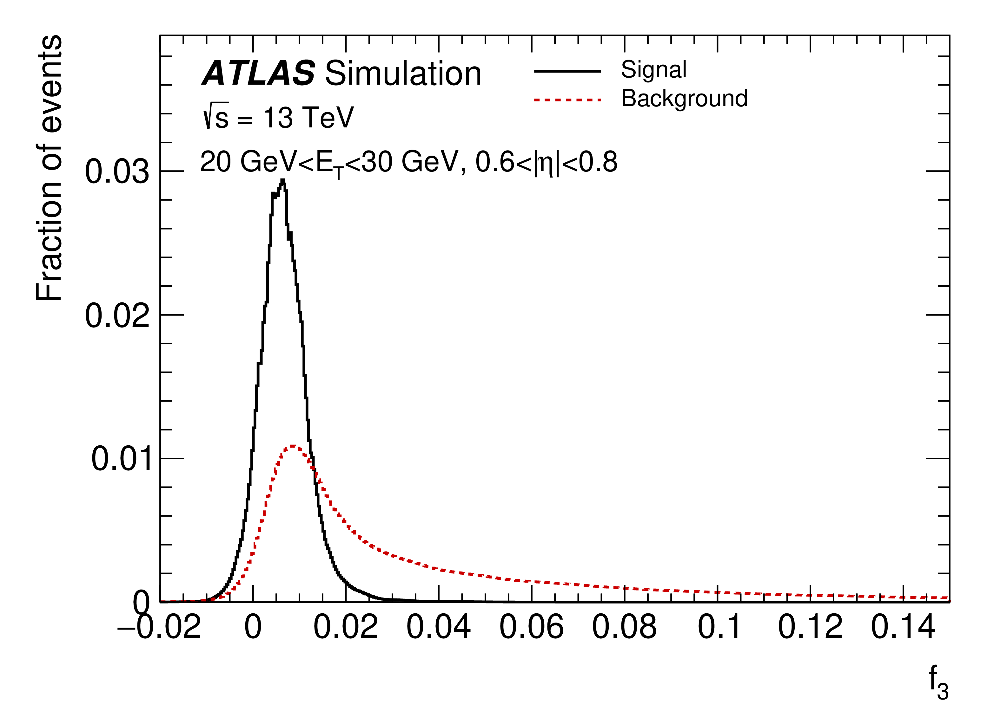
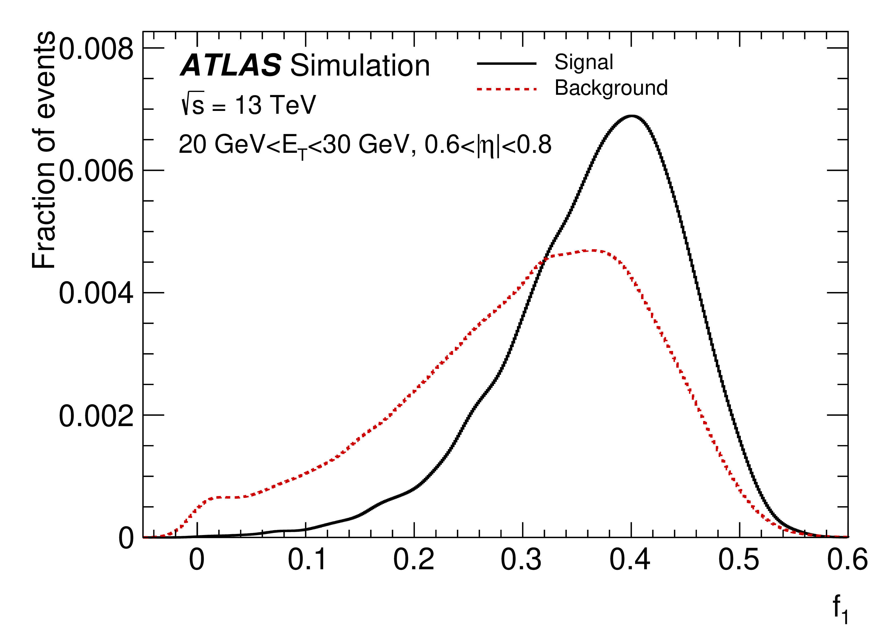
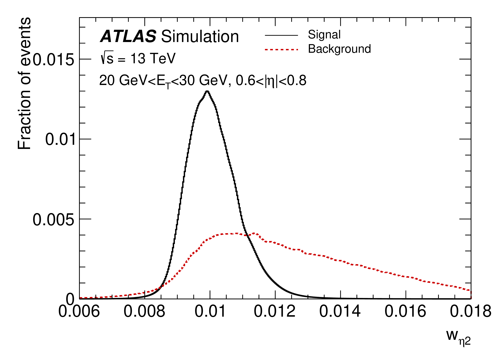
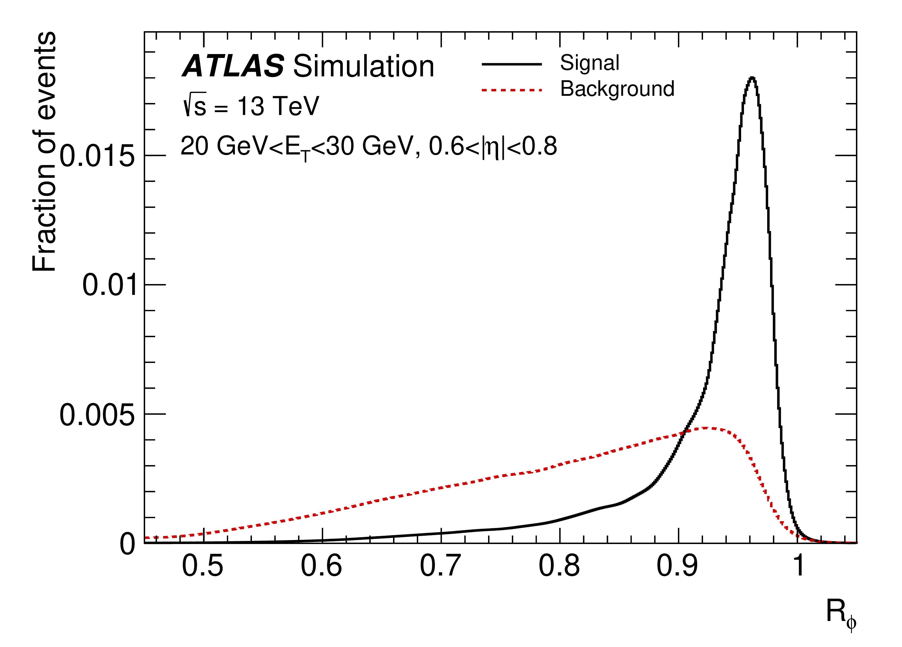
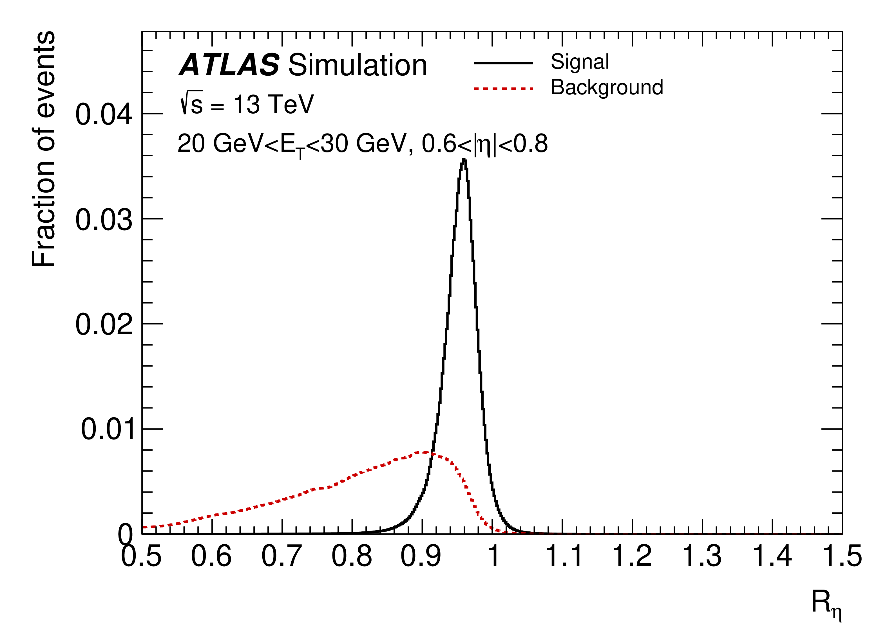
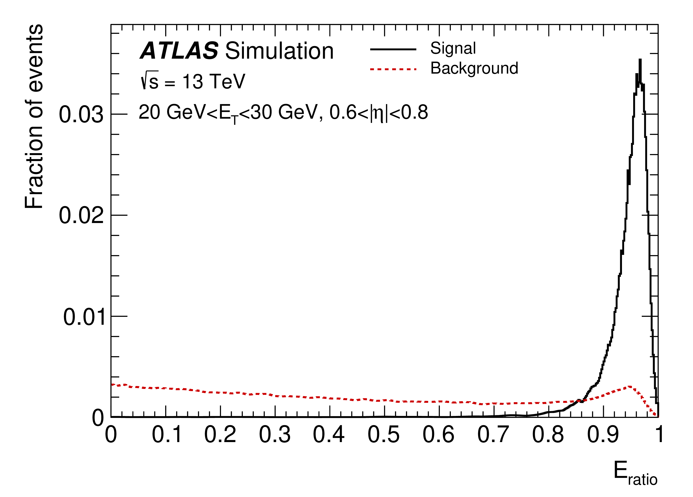
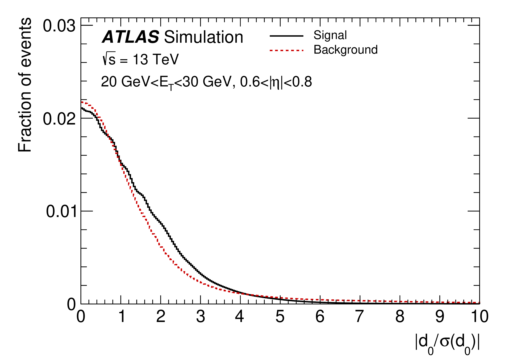
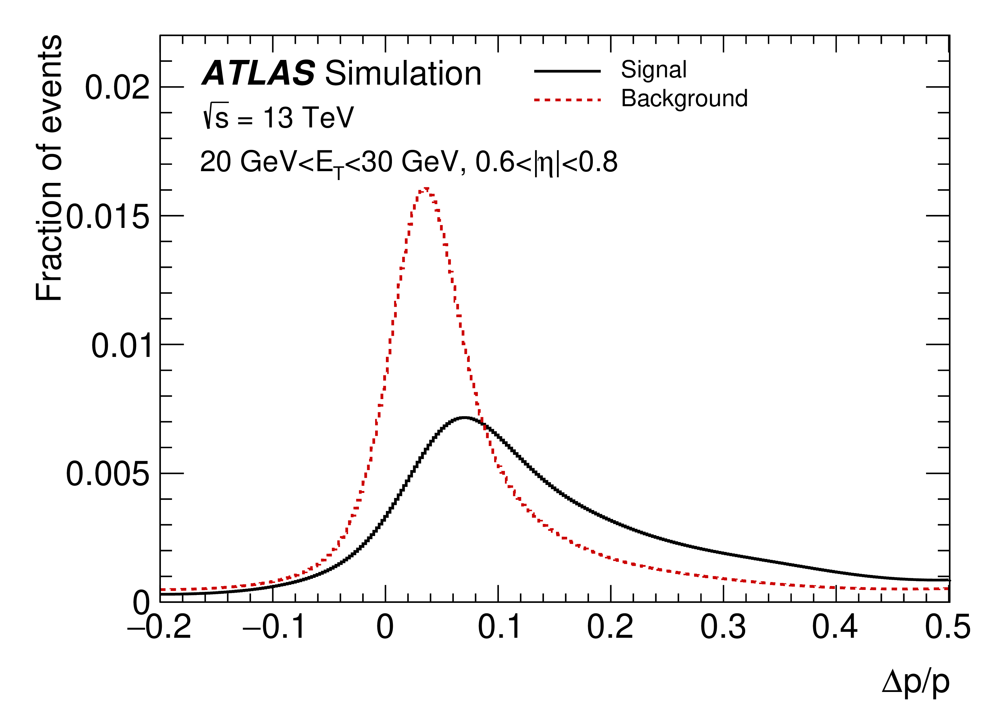
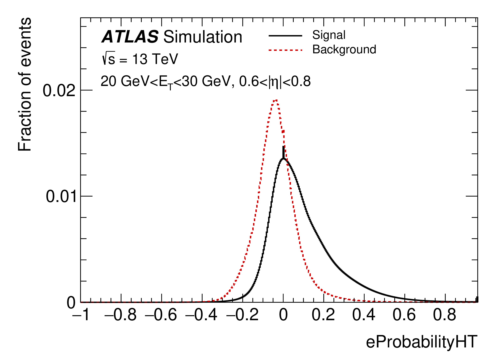
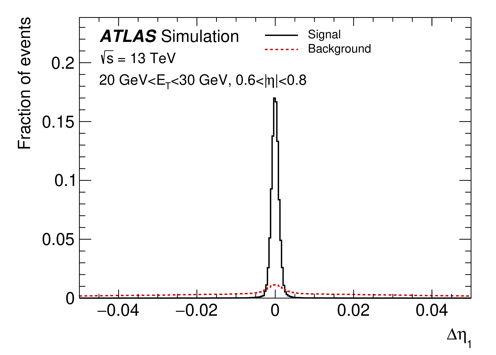
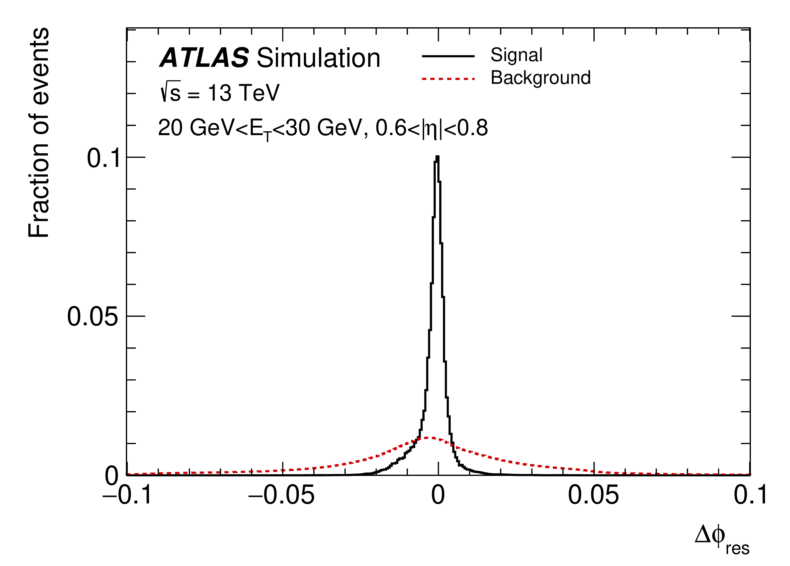
During my time in the e/gamma group, I was one of the experts responsible for constructing the pdfs. There were lots of changes during Run-2, from MC-based pdfs used for 2015-16, data-driven pdfs used in the trigger in 2017, and data-driven pdfs used in both the trigger and offline in 2018. Many studies were required to check the performance of the electron identification. I will describe here the derivation of the data-driven pdfs. The signal pdfs are data-driven, using two samples. Signal electrons with \( p_{\mathrm {T}}\) \(>\) 15 GeV are selected using a \( Z \rightarrow ee\) tag-and-probe selection. Events are collected using the primary single electron triggers. The tag electrons must satisfy the Tight identification and have \( p_{\mathrm {T}}\) \(>\) 25 GeV. The selected probe electrons must form an invariant mass with the tag which falls within 10 GeV of the \( Z\)mass. Additionally, the probes must satisfy the VeryLoose identification, which is required in order to reduce fake lepton background contamination in the sample of probes, without significantly biasing the distributions of the discriminating variables. Signal electrons with \( p_{\mathrm {T}}\) \(>\) 15 GeV are selected using a \( J/\psi \) tag-and-probe selection. Events are collected using the secondary di-electron triggers. As with the \( Z \rightarrow ee\) tag-and-probe selection, tag electrons must satisfy the Tight identification, but are only required to have \( p_{\mathrm {T}}\) \(>\) 4.5 GeV. The probe electrons must form an invariant mass with the tag which falls within a 0.5 GeV window of the \( J/\psi \) mass and must satisfy the VeryLoose identification. Additionally, the tag and probe must be separated by \(\Delta R > 0.1\) to avoid overlapping tag-probe pairs. A cut is also placed on the pseudo-proper time: \[\tau =\frac {L_{xy}\cdot m^{J/\psi }}{p_T^{J/\psi }}, \qquad \mathcal {L}_{xy}=\mathbf {L}\cdot \mathbf {p_T^{J/\psi }}/ p_T^{J/\psi }\] in order to remove the non-prompt \( J/\psi \) contribution coming from b-hadron decays [46]. These selections are summarized in Tables 4.2 and 4.3.
| Selection for data-driven signal electron candidates above 15 GeV |
| Single electron trigger fired |
| Tag electron with \( p_{\mathrm {T}}\) \(>\) 25 GeV |
| Tag electron \(|\eta | < 1.37\) OR \((|\eta | > 1.52\) AND \(|\eta | < 2.47)\) |
| Tag electron passes Tight identification |
| \(\Delta \)R(tag electron, trigger electron) \(<\) 0.10 |
| Tag electron passes LAr object quality requirement |
| Probe electron with \( p_{\mathrm {T}}\) \(>\) 15 GeV |
| Probe electron \(|\eta | < 2.47\) |
| Probe electron passes VeryLoose identification |
| Probe electron passes LAr object quality requirement |
| 80 GeV \(<\) \( m_{e^{+}e^{-}}\) \(<\) 100 GeV |
| Tag electron and probe electron have opposite electric charge |
| Selection for data-driven signal electron candidates below 15 GeV |
| Di-electron trigger fired |
| Tag electron with \( p_{\mathrm {T}}\) \(>\) 4.5 GeV |
| Tag electron \(|\eta | < 1.37\) OR \((|\eta | > 1.52\) AND \(|\eta | < 2.47)\) |
| Tag electron passes Tight identification |
| \(\Delta \)R(tag electron, trigger electron) \(<\) 0.10 |
| Tag electron passes LAr object quality requirement |
| Probe electron with \( p_{\mathrm {T}}\) \(>\) 4.5 GeV |
| Probe electron \(|\eta | < 2.47\) |
| Probe electron passes VeryLoose identification |
| Probe electron passes LAr object quality requirement |
| 2.8 GeV \(<\) \( m_{e^{+}e^{-}}\)\(<\) 3.3 GeV |
| Tag electron and probe electron have opposite electric charge |
| \(\Delta \)R(tag electron, probe electron) \(>\) 0.10 |
| \(-1 < \tau < 0.2\) |
Background events are collected using the prescaled single electron support triggers. These triggers require an electron to pass a \( p_{\mathrm {T}}\) threshold, but do not apply any identification requirement at the HLT. Note that jets are frequently also reconstructed as electrons, due to the requirements imposed on the tracking hits and calorimeter energy deposition during the reconstruction stage. Thus, this sample primarily contains dijet events, which is the process with the largest production cross-section at the LHC. However, this is a very inclusive selection, and thus includes other processes as well. To reduce potential contamination from electroweak processes containing real, prompt electrons, the following requirements are applied:
These selections are summarized in Table 4.4.
| Selection for data-driven background electron candidates |
| Prescaled single electron supporting trigger fired |
| Electron candidate with \( p_{\mathrm {T}}\) \(>\) 4 GeV |
| Electron candidate \(|\eta | < 2.47\) |
| Electron candiate has good track-quality (\(n_{\mathrm {Pixel}} \geq 1\), \(n_{\mathrm {Silicon}} \geq 7\)) |
| \(\Delta \)R(reco electron candidate, trigger electron) \(<\) 0.10 |
| Electron candidate passes LAr object quality requirement |
| \( E_{\mathrm {T}}^{\mathrm {miss}}\)\(<\) 25 GeV |
| \( m_{\mathrm {T}}\) \(<\) 40 GeV |
| (70 GeV \(<\) \( m_{e^{+}e^{-}}\) \(||\) \( m_{e^{+}e^{-}}\) \(>\) 110 GeV) for events containing an additional Medium electron |
The shape of the discriminating variable distributions vary according to the detector geometry, whose features in \(\eta \) are dictated by the cylindrical nature of its barrel subdetectors, the transition to endcap detectors, the space dedicated to structure and services, and the amount of material before the calorimeters. The identification is split in \(\eta \) to account for these variations such that the discriminant variables have negligible variation within an \(\eta \) slice (for a constant \( E_{\mathrm {T}}\)). The bin thresholds chosen are shown in Table 4.5 below and graphically depicted in Figure 4.10 where these geometry and material transitions can be seen explicitly. Variable distributions also vary as a function of object \( E_{\mathrm {T}}\); thus, the phase space is split further into \( E_{\mathrm {T}}\) bins, typically in 5 GeV increments. The \( E_{\mathrm {T}}\) bin thresholds used are shown in Tables 4.6. To avoid large discontinuities near \( E_{\mathrm {T}}\) bin edges when using a finer granularity than what is shown in Table 4.6, a linear interpolation between neighboring \( E_{\mathrm {T}}\) bins is used to extract an interpolated pdf value as well as an interpolated discriminant cut value.
| Bin boundaries in \(|\eta |\)
| |||||||||
| 0.0 | 0.6 | 0.8 | 1.15 | 1.37 | 1.52 | 1.81 | 2.01 | 2.37 | 2.47 |
| Bin boundaries in \( E_{\mathrm {T}}\) [GeV ]
| |||||||||||||
| pdfs | 4.5 | 7 | 10 | 15 | 20 | 30 | 40 | \(\infty \) | |||||
| Discriminant | 4.5 | 7 | 10 | 15 | 20 | 25 | 30 | 35 | 40 | 45 | 80 | 150 | \(\infty \) |
To first approximation, pdfs can be obtained by simply building a histogram of each variable using the signal and background samples as described in the previous section. However, logistical issues of bin granularity and limited statistics could adversely affect the performance of the likelihood. The electron likelihood should be constructed from pdfs containing only meaningful physical features. Random statistical fluctuations, particularly in the pdfs of likelihoods covering regions of \(\eta \)/\( E_{\mathrm {T}}\) where signal or background statistics are low, can cause suboptimal behavior, such as nearly identical electrons being assigned vastly different discriminant values. Likewise, the pdfs should be nonzero everywhere, to avoid undefined or unphysical results. Thus, raw histogram pdfs must be transformed to solve these issues. Adaptive kernel density estimation (KDE) is used to convert the histogrammed signal and background samples into pdf inputs for the likelihood. The KDE method smooths a variable distribution in the following manner: first, the value in each bin in the variable’s distribution is treated as a \(\delta \)-function. Each \(\delta \) function then replaced by a “kernel” function (in this case a Gaussian distribution) with a tunable width parameter, and the collection of Gaussian distributions are summed to form the final pdf. The adaptive KDE method follows the same procedure, but the Gaussian width parameter is increased in regions of low event yields as is illustrated in Figure 4.11a) [44]. The pdfs developed for the electron likelihood tool were created using the TMVA adaptive KDE tool. In practice, the tool uses very finely binned histograms to approximate the \(\delta \) functions of an unbinned dataset, in order to increase the algorithm speed, without loss of performance. Figure 4.11b illustrates the adaptive KDE method at work in an example \( R_\eta \) distribution where we see nonphysical features being smoothed out by the method.
During my time working in the e/gamma group, it was also important to adjust selection criteria to adapt to busier environments.
The wide range of pileup during Run 2 (see Figure 3.6) affects the discriminating variables used in the likelihood calculation. The hadronic leakage variable, \( R_\text {had}\) and the middle layer of the EM calorimeter variable, \( R_\eta \), are the most affected by increases in pileup. The shapes of these variables become wider and more elongated as is shown in Figure 4.12. Thereby becoming more background shaped in a high pileup environment, hence reducing the discriminating power of these variables. These two variables are among the most powerful, as shown in \(n-1\) likelihood studies Figure 4.13, and thus indispensable in the likelihood variable menu.
The distributions of the remaining electron discriminating variables are not largely affected by the increase in pileup. This effect corresponds to the likelihood discriminant being systematically lower in higher pileup conditions, leading to a negative efficiency slope as a function of the number of primary vertices, \( n_\text {vtx}\).
In Run 1, this effect was corrected by making the discriminant cut linearly dependent on the number of vertices with the form \(d(n_{\mathrm {vtx}}) = d_{\mathcal {L}} - a\cdot n_{\mathrm {vtx}}\) in each \( E_{\mathrm {T}}\)/\(\eta \) bin. Introducing this discriminant dependence on \( n_\text {vtx}\) softens the resulting effect of \( n_\text {vtx}\) on the signal efficiency. It should be noted that the \( R_\text {had}\) and \( R_\eta \) distributions are broader in the background, and thus the background response is less dependent on \( n_\text {vtx}\). As a result, correcting the signal efficiency causes the background to develop an \( n_\text {vtx}\) dependence, with worse rejection at higher \( n_\text {vtx}\). This is illustrated by the black markers in Figure 4.14b.
An additional correction is applied to balance these competing effects and is shown by the red markers in Figure 4.14. In the end, these \( n_\text {vtx}\) dependent cuts on the likelihood output are only applied for Medium and Tight operating points. The dependence of the efficiency on the pile-up for the Loose and VeryLoose operating points were deemed to be small enough to not warrant a correction. However, this meant that on rare occasions, the operating points were not perfect subsets of one another, since Medium and Tight could become looser than Loose for instance, as seen in Figure 4.15b.
While this was typically a \(10^{-5}\) effect or less, it was not desirable to repeat this for Run-2.
A different strategy was employed in Run-2 to ensure that all of the tighter operating points are subsets of the looser operating points, for 2015. Rather than directly loosening the discriminant cut value, the pileup correction was put directly into the discriminant itself. In other words, the cut value used for each operating point is unaffected (the cuts do not change with pileup so they are subsets by construction), but with increasing pileup, the value of the discriminant changes instead. Mathematically, this is done as follows: \begin {equation} d_{\mathrm {{\scriptsize T}\tiny {IGHT},new}}(n_{\mathrm {vtx}}) = d_{\mathrm {{\scriptsize T}\tiny {IGHT},old}} - a \cdot max(n_{\mathrm {vtx}}, n_{vtx,\text {max}}) \end {equation} Where tight refers to the Tight operating point, so the result of a cut on \(d_{\mathrm {{\scriptsize T}IGHT,new}}(n_{\mathrm {vtx}})\) is identical to the Run-1 pileup-corrected cut. To cut this off at some value of \( n_\text {vtx}\), rather than to loosen the discriminant indefinitely, \(n_{\mathrm {vtx}} {}_{,\text {max}}\) is defined as the largest value to use for the correction. As an example, if \(n_{\mathrm {vtx}} {}_{,\text {max}}\) = 50 (which it does for 2015, and increased to 100 in 2018), then the pileup correction used for all larger values of \( n_\text {vtx}\) will be identical, to avoid loosening the discriminant too much. This is illustrated for \(n_{\mathrm {vtx}} {}_{,\text {max}}\) = 50 as the solid blue line in Figure 4.15b.
Then we define the new discriminant with a piece-wise function, continuous at each boundary condition, so: \begin {equation*} \renewcommand {\arraystretch }{1.3} d_\text {new}(n_{vtx}) = \left \lbrace \begin {array}{llc} d, & d < d_{\text {V{\tiny ERY}L{\tiny OOSE}}} & \text {(I)} \\ d_{\text {V{\tiny ERY}L{\tiny OOSE}}} + (d - d_{\text {V{\tiny ERY}L{\tiny OOSE}}}) \times \frac {d_{\text {{\scriptsize T}\tiny {IGHT},old}} - d_{\text {{\scriptsize V}\tiny {ERY}{\scriptsize L}\tiny {OOSE}}}}{d_{\text {{\scriptsize T}\tiny {IGHT},new}} - d_{\text {{\scriptsize V}\tiny {ERY}{\scriptsize L}\tiny {OOSE}}}}, & d_{\text {V{\tiny ERY}L{\tiny OOSE}}} \leq d < d_{\text { T{\tiny IGHT},new}} & \text {(II)} \\ d_{\text { T{\tiny IGHT},old}} + (d - d_{\text {T{\tiny IGHT},new}}) \times \frac {d_{\text {max}} - d_{\text {{\scriptsize T}\tiny {IGHT}}}}{d_{\text {max}} - d_{\text {{\scriptsize T}\tiny {IGHT},new}}}, & d_{\text {T{\tiny IGHT},new}} \leq d < d_{\text {max}} & \text {(III)} \\ d, & d_{\text {max}} \leq d & \text {(IV)} \end {array} \right . \end {equation*} Where \(d_{\mathrm {\text {V{\tiny ERY}L{\tiny OOSE}}}}\) is the VeryLoose operating point where no pileup correction is desired, \(d_{\text {max}}\) is the largest discriminant value for which the transform should take place, which was chosen to be 2.0. This new method of pileup correction was found to perform similarly to the correction performed in Run-1, while fixing the effect of the operating points not being subsets of one another. One small difference this introduces is that Loose now depends on pileup (as VeryLoose is the reference point used for loose), but the correction is smallest for the looser operating points. Figure 4.16 illustrates how the phase space is carved out corresponding to the Roman numerals in the piece-wise equation above.
In an effort to better model the local pileup activity around an electron I investigated if parameterizing the pileup correction in terms of the newly available TRT local track occupancy variable, which measures activity around the electron, could provide improved performance in replacing the event-by-event offline measure of the number of primary vertices \( n_\text {vtx}\). Additional motivation for the TRT local track occupancy lies in its availability online as well. As the availability of pileup measure information is limited online since event reconstruction is required to determine the number of primary vertices, \( n_\text {vtx}\). The nominal replacement is the average number of collision vertices \(\langle \mu \rangle \), measured online by a set of luminosity detectors (one dedicated detector LUCID, the Beam Conditions Monitor, and measurements from the Tile and Forward calorimeters and the ID) it is the average over all BCIDs in a Luminosity Block7 (one minute of data taking). The TRT local track occupancy could then mitigate inefficiencies arising from the use of different variables online and offline. The local TRT occupancy is measured in 192 regions (32 sectors in phi for the barrel, endcap A and endcap B regions on each side of the detector). For each track, the number of hits in each region is weighted by the local TRT occupancy8 to calculate the local occupancy around the track.
The TRT local track occupancy was implemented in the relevant software tools in the same manner as \( n_\text {vtx}\) and \(\mu \) with several technical caveats. Firstly, the TRT acceptance only covers an \(|\eta |<2.01\) requiring the original measures to be used for the most forward two \(\eta \) bins. Second ‘silicon-only” tracks are possible where no TRT hits are registered for the electron object leading to an undefined local track occupancy which not desirable, again the original measures are defaulted to in this special case. In Figure 4.17 the local track occupancy is compared to \( n_\text {vtx}\) in MC, both signal and background efficiencies are shown as a function of \(\mu \). At most an improvement of 1% is seen in signal efficiency for the Tight operating point, while in background an overall reduction in background rejection is seen, climbing to nearly a 10% loss in rejection power for large \(\mu \). This result can be understood as for signal the TRT Local track occupancy variable is correlated with pileup, so the signal efficiency improves slightly, but for background there is a stronger correlation with more activity from the other particles from a jet. While the TRT local track occupancy was attractive as a variable available online and offline, the increase in background efficiency was extremely unattractive as it would have increased the trigger rate.
A so-called “tune” is defined as a set of operating points all relying on the same set of pdfs. The defining of an operating point is then determined by tuning to a discriminant value that results in a desired identification efficiency. And just as kinematic bins are necessary for the pdfs, these are needed for the discriminant requirements as well. The \(|\eta |\) and \( E_{\mathrm {T}}\) bins used for the likelihood discriminant requirements are shown in Table 4.5 and the second row of Table 4.6 respectively. Note that fewer \( E_{\mathrm {T}}\) bins are used for the pdfs than for the discriminant requirements; this is to allow for a smoother increase of electron efficiency with \( E_{\mathrm {T}}\) than would otherwise occur. As a general improvement to the electron likelihood with respect to Run 1, an interpolation procedure was implemented to interpolate the pdfs and discriminant cut values between the \( E_{\mathrm {T}}\) bins defined for the operating points. This procedure, first introduced for analysis of 2015–2016 data, allows for better continuity of electron identification efficiency as a function of \( E_{\mathrm {T}}\) when using \( E_{\mathrm {T}}\) bins that are finer than that used for the identification optimization (which have a bin width of 5 GeV or larger for \( E_{\mathrm {T}}\) \(>\) 10 GeV). The discriminant tuning procedure is then done in each bin independently using MC, in order to get a pure enough sample of electrons, that are modified with data-to-simulation shift and width corrections. Examples of these corrections are illustrated in Figure 4.18
For a flat efficiency the procedure is fairly straight forward. A large MC sample of reco level electron objects are fed into the Electron LH in order to populate a discriminant distribution for a given bin, a discriminant cut value is then chosen such that a desired selection efficiency is achieved. This procedure becomes more nuanced when the discriminant loosening parameter, \(a\), detailed in the previous section must be determined as well. For this case a two dimensional histogram in discriminant vs. \( n_\text {vtx}\) is populated and bin by bin in \( n_\text {vtx}\) the discriminant value most closely resulting in the desired efficiency is determined. These equi-efficiency discriminant values are then fit to a line to determine the slope, \(a\). This is illustrated in Figure 4.15a with the blue points all corresponding to the desired efficiency and the black line the linear fit of those points. Now as illustrated in Figure 4.14a by the black markers the desired flat efficiency is achieved as a function of \( n_\text {vtx}\) as desired, however as discussed in the previous section this leads to a large \( n_\text {vtx}\) dependence in the background efficiency as seen in Figure 4.14b. This see-saw effect is then countered by by-hand iterations of reducing the slope \(a\) such that a relatively flat signal efficiency is retained while also ameliorating the strong \( n_\text {vtx}\) dependence in background, this is illustrated by the red markers in Figure 4.14.
As different ATLAS physics analyses desire different levels of electron signal efficiency and background rejection, several operating points are necessary. There are four levels of officially maintained and recommended tunes designed to encompass a broad variety of analyses. These are the aforementioned VeryLoose, Loose, Medium, and Tight operating points. Each corresponds to a more stringent requirement on the likelihood discriminant value than the one before it, and thus a larger background rejection (and correspondingly, a smaller signal efficiency). In addition to requirements on the discriminant value, all of the operating points also impose requirements on simple track quantities. Loose, Medium, and Tight require at least two hits in the pixel detector and at least seven hits in the pixel and silicon strip detectors combined. Furthermore, Medium and Tight also require a hit in the innermost pixel layer, which is useful for rejecting photon conversions. In cases where the innermost pixel layer is non-operational, the next-to-innermost pixel layer is used instead. A variation of the Loose operating point called LooseAndBLayer also exists, which uses the same criteria as Loose but also adds the requirement of a hit in the innermost pixel layer. The VeryLoose operating point primarily exists for fake electron background estimation, and thus only requires a “good-quality” track, which is defined as at least one hit in the pixel detector (which need not be a hit in the innermost pixel layer) and at least seven hits in the pixel and silicon strip detectors combined.
The time between a collision and the final ATLAS trigger decision is about 4 seconds. In order to to meet this time requirement trigger reconstruction algorithms that are CPU-intensive must be altered with respect to their offline equivalents. In the case of the electron/photon reconstruction and identification algorithms this affects several inputs and techniques nominally used offline. The variable-sized supercluster algorithm described in Section 4.4.2 was not used online in Run-2. Neither is the GSF electron track refitting where instead the standard pion hypothesis track fitting must be used. As a result the quality of the track reconstruction degrades, impacting the resolution of the \(d_{0}\) and \( |d_{0}/\sigma (d_0)|\) tracking variables, as as well as the trackcluster matching variables \( \Delta \phi _\text {res}\) and \( \Delta \eta _1\). The variable \( \Delta p/p\) which is output by the GSF algorithm, is unavailable altogether at the HLT. During the reconstruction of electromagnetic clusters in the LAr calorimeter, some cell-energy-level corrections are not available online, such as the correction for transient changes in LAr high-voltage [48], or differ in implementation, such as the bunch crossing position-dependent pileup correction [49, 38, 50].
Re-tuning the LH is desired when a change in data taking conditions could adversely effect the performance of the LH. In late 2017 during the historically high pileup runs it became urgent to re-optimize many recommendations as the \(\mu \) for 2018 could be just as large (and potentially even larger). For reference listed below are is fill scheme for the middle part of 2017 data taking and it’s resulting peak \(\mu \), as well as what the potential beam fill schemes for 2018 could be at the time (October 2017) and their expected maximum \(\mu \):
The e/\(\gamma \) Trigger working sub-group requested a re-tune of the Trigger LH to account for these potential large pileup environments expected in 2018. For this re-tune a set of official high-\(\mu \) MC samples were generated with a \(\mu \)-profile between 45-75. Additionally this re-tune allowed for the entire LH (both online and offline) to be completely data-driven with the implementation of low \( E_{\mathrm {T}}\) data-driven pdfs10 for this tune. Data-driven pdfs were derived using the full 2017 data set. These pdfs, for both signal and background, are compared to the previous set of pdfs for high and low \( E_{\mathrm {T}}\) in Figures 4.19 and 4.20 respectively.
High \( E_{\mathrm {T}}\) pdfs in Figure 4.19 show very good agreement with the previous pdf set as well as an expected, with the exception of \( \mathrm {\tiny {eProbabilityHT}}\), systematic broadening of signal distributions due to the higher pileup data used to build the pdfs (2017 data vs. 2015-2016 data). The large differences for \( \mathrm {\tiny {eProbabilityHT}}\) are due to a re-optimization of the \( \mathrm {\tiny {eProbabilityHT}}\) (a likelihood itself) for an updated gas configuration. Low \( E_{\mathrm {T}}\) pdfs in Figure 4.20 also show good agreement with several distributions showing narrower signal distributions. Note that here we are now comparing data pdfs (built of 2017 data) to MC pdfs with simple data-MC shift and width corrections applied and so we do expect differences coming from mis-modeling in MC. Via the discriminant tuning procedure described in Section 4.5.8 discriminant values are determined using the high-\(\mu \) MC sample s.t. desired signal efficiencies are met. Additionally the \(n_{vtx,\text {max}}\) (\(\mu _{\text {max}}\) for Trigger LH) value described in Section 4.5.7.1, and illustrated in Figure 4.16, was increased from \(\mu _{\text {max}}\) = 50 to \(\mu _{\text {max}}\) = 100.
Trigger rates were determined using a trigger emulation tool for four standard electron triggers for the three cases, using the nominal (old) LH tune, using the new updated LH tune, and using the new updated LH tune along with the new “ringer” fast calorimeter reconstruction algorithm11. These rates are shown in Table 4.7.
| Trigger | Nominal Rate | Rate w/ new LH | Rate w/ new LH and Ringer |
| e26_lhtight_nod0_ivarloose | 201 Hz | 197 Hz | 197 Hz |
| e28_lhtight_nod0_ivarloose | 175 Hz | 172 Hz | 172 Hz |
| e60_lhmedium_nod0_L1EM24VHI | 23.5 Hz | 25.3 Hz | 25.3 Hz |
| 2e17_lhvloose_nod0_L12EM24VHI | 12.5 Hz | 12.3 Hz | 12.5 Hz |
Small improvement expected with the new tune for electron triggers but all changes are within statistical uncertainties. No increase of rate expected with new tune. Efficiencies taken from a full data run reprocessed with Tier 0 monitoring were produced for standard electron triggers that use Tight, Medium, and VeryLoose operating points are shown in Figure 4.21. Three cases are compared: new offline LH tune numerator and new online LH tune denominator in black, old offline LH tune numerator and old online LH tune denominator in red, and new offline LH tune numerator and old online LH tune denominator in blue.
The new online LH tune performed better than previous tune for all operating points with the exception of the Medium operating point at high \(\mu \). While further investigation on this discrepancy was recommended, due to the short timeline associated with having a validated trigger menu in place before data taking, the decision was made to update all operating points except Medium, which would retain the previous year’s version for the trigger LH (the blue triangle markers). This new Trigger LH tune was implemented in March 2018.
The electron identification procedure just described in Chapter 4 leads nicely into the analysis portion of this thesis where those electrons are now used to look for new physics. New physics in the form of fundamental particles that require description beyond the Standard Model and ultimately would lead to a deeper understanding of our natural world. In this chapter we will describe just that, a search for a new fundamental particle by way of its decay into the fully visible final state of three charged leptons (a lot of which are electrons). This fully visible final state allows for the reconstruction of the particle’s invariant mass which would rise resonantly above the estimated background if seen in the data. Figures 5.1a and 5.1b depict the the processes of interest that give rise to the resonance via the chargino decay, \( \tilde {\chi }^{\pm }_{1}\) \(\rightarrow \)\( Z\)\(\ell ^{\pm } \rightarrow \ell ^{\pm } \ell ^{\mp } \ell ^{\pm }\).
As alluded to in Chapter 2 the theoretical framework that is used to drive this search is the \( \mathrm {\textit {B}}-\mathrm {\textit {L}}\) MSSM. Where in Chapter 2, the \( \mathrm {\textit {B}}-\mathrm {\textit {L}}\) MSSM was strongly motivated, we now motivate a group of experimental signatures that are likely to be seen at the ATLAS experiment in the context of this model. Strong theoretical motivation comes from an extensive study involving the statistical scanning over all dimensionful parameters of the soft SUSY breaking terms [11]. A statistical analysis involving 100 million independent trials of these parameters is performed. Where the SUSY breaking scale is restricted to 1.5 TeV or below in order to ensure that the LHC would have sufficient energy to be able to produce the LSP. For the 100 million sets of randomly scattered initial conditions, it was found that 4,351,809 break \( \mathrm {\textit {B}}-\mathrm {\textit {L}}\) symmetry with the \(Z'_{B-L}\) mass above the current lower bound of \(Z'_{B-L}\) = 4.1 TeV.
These are plotted as the green points in Figure 5.2. Running the Renormilization Group (RG) equations down to the EW scale, one finds that of these 4,351,809 appropriate \( \mathrm {\textit {B}}-\mathrm {\textit {L}}\) initial points, only 3,142,657 break electroweak symmetry with the experimentally measured values for \(M_{Z}\) and \(M_{W}\) given in equation. These are shown as the purple points in Figure 5.2. Now applying the constraints that all sparticle masses be at or above their currently measured lower bounds [11], it was found that of these 3,142,657 initial points, only 342,236 are acceptable. These are indicated by cyan colored points in Figure 5.2. Finally, of these 342,236 points, only 67,576 also lead to the currently measured Higgs mass. That is, of the 100 million sets of randomly scattered initial conditions, 67,576 satisfy all present phenomenological requirements. These are referred to as the “valid” points. As discussed in detail in [9], the particle spectrum of each of the 67,576 valid black points is exactly determined by the computer code.
The identify of the lighest supersymmetric particle (LSP) in the particle spectrum is particularly interesting when designing experimental searches. The identity of the LSP is shown in Figure 5.3 in terms of the number and percentage of the valid points that have that type of supersymmetric particle as the LSP. With the above assumptions for the model and constraints, we now have an effective probability for a given sparticle to be the LSP, a very interesting and useful result. There are of course experimental considerations to be made when analyzing this histogram that will in general re-weight one’s search motivations from Figure 5.3 for a given process. First is the relative production cross section of each sparticle at the LHC. Figure 5.4 shows us the production cross sections as a function of mass for various standard model and supersymmetric particles. The mostly bino-like neutralino (\(\tilde {\chi }^{0}_{B}\)) is the most probable LSP. However, if it is pure bino then it cannot be pair-produced directly and so the cross section is not even shown on Figure 5.4.
Sneutrinos or sleptons are the LSPs in about 10% of the valid model points. However, experimental searches with Run-2 data are also disfavored as these have a very small production cross section (cyan line in Figure 5.4). These will be left for future searches with more data in Run-3 or HL-LHC.
The mostly wino-like chargino or neutralino are the LSPs in about 10% of the valid model points. The experimental production cross sections for wino-type chargino-pair and chargino-neutralino pair production are large enough to allow for a feasible search with Run-2 data (green and magenta lines in Figure 5.4). Due to the relative smallness of the RPV coupling we expect the most probable RPV decays to be from the LSP, however if there is effective mass degeneracy between the LSP and NLSP (a very small mass splitting), it is very reasonable to expect both the LSP and NLSP to both decay via RPV, i.e. all final states will be SM particles only. In Figure 5.5 where the mass values for the \( \tilde {\chi }^{\pm }_{1}/\tilde {\chi }^{0}_{1}\) are for valid points in the scan in which the \( \tilde {\chi }^{0}_{1}\) and \( \tilde {\chi }^{\mp }_{1}\) are either the LSP or NLSP we see mass splittings less than a GeV for cases where the \( \tilde {\chi }^{0}_{1}\) is the LSP and \( \tilde {\chi }^{\pm }_{1}\) the NLSP 5.5a and vice versa 5.5b. This shows the possibility of a search with sizable production cross sections from the sum of chargino-pair production and mass-degenerate chargino-neutralino production. Further, both the LSP and NLSP will have RPV decays due to the small size of their mass splitting. This will be the topic of the search described in this thesis.
The remaining LSPs have a low probability but would be produced profusely through strong production processes. An earlier analysis by my adviser’s group searched for pair production of a stop LSP with RPV decay [53] in early Run-2 data.
It has been just been shown that the signals in Figure 5.1 are phenomenologically well motivated from the stand point of the \( \mathrm {\textit {B}}-\mathrm {\textit {L}}\) MSSM, as well as motivated experimentally in so far as it is possible with physical intuition and cross section calculations. We are now effectively invited to start to design the search strategy. It is very much worth noting that at this logical stage in the analysis the signal is further motivated by way of sensitivity studies. These are studies done using a simplified version of the analysis done on quickly generated simulated samples. This allows for a much more detailed assessment of signal sensitivity beyond cross section calculations. This is also a necessary requirement, and an important part of the process, for requesting official simulated data in the ATLAS collaboration. These studies will not be detailed here as their development are almost entirely contained in the full search strategy. It suffices to say that these studies showed that the expected sensitivity was very much large enough to not be deterred from this search in any way, and to actually be very much excited about in every way.
The strategy for this search revolves around being able to fully reconstruct the mass of the \( \tilde {\chi }^{\pm }_{1}\) from its decay into a final state of three leptons, \( \tilde {\chi }^{\pm }_{1}\rightarrow Z\ell \rightarrow \ell \ell \ell \). This points to the main discriminating variable, \( m_{Z\ell }\), defined as the invariant mass of the leptonically decaying \( Z\) boson and the associated direct-lepton12. Note that for the leptonic \( Z\) boson decay, we shift the measured dilepton invariant mass to the \( Z\) pole mass in order to reduce resolution effects. We redefine \( m_{Z\ell }\) as \begin {equation} m_{Z\ell } : m_{Z\ell } - m_{Z} + 91.2 ~GeV \label {eq:mzl} \end {equation} Where \(\ell \) here refers to only light leptons (electrons and muons) as we will not endeavour to reconstruct taus in this search. It is interesting to note here that when looking for terms in the \( \mathrm {\textit {B}}-\mathrm {\textit {L}}\) MSSM Lagrangian that can lead to \( \tilde {\chi }^{\pm }_{1}/\tilde {\chi }^{0}_{1}\) decays into SM particles that the term that is proportional to the photon exactly cancel. That is to say that the decay \( \tilde {\chi }^{\pm }_{1}\) \(\rightarrow \gamma \ell \) vanishes. This leaves decays that involve only the massive gauge bosons and the \( \mathrm {Higgs}\) and an associated direct-lepton (charged or neutral) to consider. Considering both chargino-pair and chargino-neutralino production, Table 5.1 shows the final states of interest that have at least one trilepton resonance from the chargino decay. The analysis regions will be defined later in this chapter. We also remain sensitive to other decays which may result in a leptonically decaying \( Z\) later in the decay chain, e.g. when the \( \mathrm {Higgs}\) goes to \( ZZ\) in \( \tilde \chi ^\pm _1\tilde \chi ^\mp _1\) \(\rightarrow \)\( H\ell \) \( H\ell \).
|
Algorithm |
Production |
Decay |
Final State |
|
Two Leg |
\( \tilde \chi ^\pm _1\tilde \chi ^\mp _1\) |
\( Z\ell \) \( Z\ell \) | \( \ell \ell \ell \) \( \ell \ell \ell \) |
| \( \ell \ell \ell \) \( jj\)\(\ell \) | |||
| \( Z\ell \) \( H\ell \) | \( \ell \ell \ell \) \( b\bar {b}\)\(\ell \) | ||
| \( \tilde \chi ^\pm _1\tilde \chi ^{0}_1\) | \( Z\ell \) \( W\ell \) | \( \ell \ell \ell \) \( jj\)\(\ell \) | |
|
One Leg |
\( \tilde \chi ^\pm _1\tilde \chi ^\mp _1\) | \( Z\ell \) \( Z\ell \) | \( \ell \ell \ell \) \(\nu \nu \ell \) |
| \( Z\ell \) \( H\ell \) | \( \ell \ell \ell \) \( WW\)\(\ell \) | ||
| \( Z\ell \) \( W\nu \) | \( \ell \ell \ell \) \( jj\)\(\nu \) | ||
|
\( \tilde \chi ^\pm _1\tilde \chi ^{0}_1\) | \( Z\ell \) \( Z\nu \) | \( \ell \ell \ell \) \( jj\)\(\nu \) | |
| \( Z\ell \) \( H\nu \) | \( \ell \ell \ell \) \( WW\)\(\nu \) | ||
| \( Z\ell \) \( W\ell \) | \( \ell \ell \ell \) \(\ell \nu \ell \) |
The SM processes that are expected to contribute largely to this signal’s background are those that produce many leptons and contain a Z boson, these processes include \( WZ\), \( ZZ\), and \( t\bar {t}Z\). Figure 5.6 shows a summary of several SM total and fiducial cross section measurements from ATLAS for four center-of-mass energies, \( \sqrt {s}\), as well as their corresponding theoretical expectations. From this figure what is immediately obvious is all the very large backgrounds that, naively, we should not expect to have to deal with based on the the assumptions just made. i.e. we shouldn’t expect large contributions from any process to the left of \( VV\) in Figure 5.6. This assumption is of course built on absolute truth knowledge of all the SM processes final states and we will later see that this is not a very good assumption for a particular background. The strategy for handling these backgrounds in order to accurately estimate their yields in the signal regions in which we intend to make a statement about take on this particular form: small backgrounds will be directly estimated with Monte Carlo. The dominant backgrounds, \( WZ\), \( ZZ\), and \( t\bar {t}Z\) will be estimated with dedicated control regions, to be described in detail in Sections 5.4.2.2, to 5.4.2.4, by way of data-MC normalization parameters for those background signatures contained in the full statistical fit that will be described in Section 5.5. The corrected estimation is then validated in dedicated validation regions before being propagated to the signal regions. The contribution from events with one or more misidentified or nonprompt (fake) leptons is separately estimated using a data-driven method to be described in Section 5.4.2.1.
To continue any further we must detail one of the most powerful, and the most essential, tools that an experimental particle physicist has at their disposal, simulated data by way of Monte Carlo (MC) experiments. Monte Carlo simulation is used to model the expected contributions of various SM processes as well the \( \tilde \chi ^\pm _1\tilde \chi ^\mp _1\) and \( \tilde \chi ^\pm _1\tilde \chi ^{0}_1\) signal processes targeted by this search. The standard model MC samples form the basis of what will ultimately be the null hypothesis of the statistical test that will be used to evaluate against the data whether or not a discovery can be claimed. It also functions as a crucial tool to define and optimize event selection criteria and to estimate systematic uncertainties in the event yield predictions. MC simulation has three stages: First, event generation for each physics process (e.g. \(pp \rightarrow \)\( W\)\( Z\)\(\rightarrow \ell \nu ~\ell \ell \)) to predict the momenta of the final state particles; second, detector simulation to predict the response of the detector to these particles in terms of signals in the charged particle tracking detectors and energy deposits in the calorimeters; and third, the application of the same detector reconstruction algorithms used for the actual data to form the physics objects (electrons, muons, photons, jets, and missing transverse energy).
The generators and parameters used in the MC simulation samples for this analysis are summarized in Table 5.2. Signal samples were generated at masses between 100 GeV and 1500 GeV in steps of 50 GeV. Signals with masses below 100 GeV were not explored as they have been excluded by previous searches for charginos and neutralinos [55, 56, 57, 58, 59, 60, 61]. Signal events were generated with equal \( \tilde {\chi }^{\pm }_{1}/\tilde {\chi }^{0}_{1}\) branching fractions to each boson (\(W\), \(Z\), or Higgs bosons where kinematically accessible) plus a lepton (\(e\), \(\nu _{e}\), \(\mu \), \(\nu _{\mu }\), \(\tau \)-lepton, or \(\nu _{\tau }\)) channel. In order to explore different assumptions for the \( \tilde {\chi }^{\pm }_{1}/\tilde {\chi }^{0}_{1}\) branching fractions in the analysis, simulated events are reweighted appropriately, assuming that the \( \tilde {\chi }^{\pm }_{1}\) and \( \tilde {\chi }^{0}_{1}\) branching fractions change in the same way. Generated signal events were required to have at least three leptons, two of which were associated with a \(Z\) boson. Hadronically decaying \(\tau \)-leptons were not considered by this three-lepton requirement for the \( \tilde \chi ^\pm _1\tilde \chi ^{0}_1\) events. The \( \tilde {\chi }^{\pm }_{1}\) were also required to decay via a \(Z\) boson in the \( \tilde \chi ^\pm _1\tilde \chi ^{0}_1\) events to increase the number of events with a trilepton resonance. The inclusive production cross sections were calculated assuming mass-degenerate, wino-like \( \tilde {\chi }^{\pm }_{1}\) and \( \tilde {\chi }^{0}_{1}\), as predicted by the \( \mathrm {\textit {B}}-\mathrm {\textit {L}}\) RPV model [11], and were calculated at NLO in QCD with next-to-leading-logarithmic (NLL) corrections to the soft-gluon terms [62, 63, 64, 65, 66]. The cross sections and their uncertainties were derived from an envelope of cross-section predictions using different PDF sets and factorization and renormalization scales [52]. The inclusive cross sections for \( \tilde \chi ^\pm _1\tilde \chi ^\mp _1\) (\( \tilde \chi ^\pm _1\tilde \chi ^{0}_1\)) production at a center-of-mass energy of \( \sqrt {s}\) =13 TeV range from \(11.6\pm 0.5~(22.7\pm 1.0)\) pb for masses of 100 GeV to \(0.040\pm 0.006~(0.080\pm 0.013)\) fb for masses of 1500 GeV. Events from all generators were propagated through a full simulation of the ATLAS detector [67] using Geant4 [68] to model the interactions of particles with the detector. A parameterized simulation of the ATLAS calorimeter [67] was used for faster detector simulation of signal, \( tW\), and \( t\bar {t}H\) processes and was found to be in agreement with the full simulation. The effect of multiple interactions in the same and neighboring bunch crossings (pileup) was modeled by overlaying simulated minimum-bias events onto each hard-scattering event.
|
Process |
Event generator | PS and |
PS tune |
Cross section (in QCD) |
| hadronization | ||||
| Diboson, triboson, (\( Z\text {+jets}\) ) | Sherpa 2.2 | Sherpa 2.2 | Default | NLO (NNLO) |
| \( t\bar {t}W\), \( t\bar {t}Z\), (Other top) | MadGraph5_aMC@NLO 2 | Pythia 8 | A14 | NLO (LO) |
| \( t\bar {t}\), (\( tW\)), [\( t\bar {t}H\)] | Powheg-Box v2 | Pythia 8 | A14 | NNLO+NNLL (NLO+NNLL) [NLO] |
| Higgs: ggF, (VBF, \(VH\)) | Powheg-Box v2 | Pythia 8 | AZNLO | NNNLO (NNLO+NNLL) |
| \( \tilde \chi ^\pm _1\tilde \chi ^\mp _1\), \( \tilde \chi ^\pm _1\tilde \chi ^{0}_1\) | MadGraph 2.6 | Pythia 8 | A14 | NLO+NLL |
Events which meet a set of kinematic requirements are said to fall into a region of phase space carved out by those requirements. Three types of regions will be utilized in this analysis. Signal regions (SR) are regions that have high signal purity and are the regions to which physics statements on the discovery or exclusion of supersymmetric particles will be made from the final statistical analysis. Control regions (CR) are regions high in purity of the major analysis backgrounds used for background estimation, this is described in more detail in Section 5.5. Validation regions (VR) are regions where the backgrounds estimated from the CRs can be thoroughly validated before unblinding the data in the SRs. Technical kinematic selections of baseline objects used in this analysis are detailed in Appendix C.
The selection algorithm begins by filtering the events into two main categories, events where there are exactly three light leptons, with two of those leptons forming a same flavor opposite sign (SFOS) pair with an invariant mass consistent with the mass of the \( Z\), and events with four or more light leptons where again there is at least one SFOS \( Z\) candidate. This first category defines the three lepton signal region (\( \mathrm {SR}3\ell \)), the three leptons are assumed to be from the \( \tilde {\chi }^{\pm }_{1}\) decay. The second category has four or more leptons and there is substantial ambiguity in assigning three of these leptons to the chone decay. If a second boson candidate can be formed, either from a hadronically decaying boson (i.e. \( W\)\(\rightarrow jj\) or \( H\)\(\rightarrow \) \( b\bar {b}\)) or from a second leptonic \( Z\) this then defines the fully reconstructed signal region (\( \mathrm {SRFR}\)), where both wino masses are reconstructed. If not, this defines our four lepton region (\( \mathrm {SR}4\ell \)), where we still only have a single \( \tilde {\chi }^{\pm }_{1}/\tilde {\chi }^{0}_{1}\) being reconstructed, as in \( \mathrm {SR}3\ell \), but extra care must be taken in the correct assignment of leptons to optimize sensitivity. This selection algorithm is shown schematically in Figure 5.7.
The signal region requires exactly three light leptons, two of which form a SFOS pair within the \( Z\) mass window of [81.2 GeV, 101.2 GeV ]. If there are two SFOS sign candidates the candidate that is closest to the \( Z\) mass is chosen. The trilepton mass \( m_{Z\ell }\) is then is then calculated. Events in \( \mathrm {SR}3\ell \) are expected to exhibit a significant \( E_{\mathrm {T}}^{\mathrm {miss}}\) in final states where the other \( \tilde {\chi }^{\pm }_{1}/\tilde {\chi }^{0}_{1}\) decays has neutrinos in the final state, either directly for \( \tilde {\chi }^{\pm }_{1}\) \(\rightarrow \)\( W\)\(\nu \) and \( \tilde {\chi }^{0}_{1}\) \(\rightarrow \)\( H\)\(\nu \) or \( Z\)\(\nu \), or from the subsequent decay of the \( W\), \( Z\) or Higgs boson. A requirement of \( E_{\mathrm {T}}^{\mathrm {miss}}\) \(>\) 150 GeV reduces contamination from SM processes with no neutrinos, particularly \( Z\text {+jets}\) events that include a fake lepton. The SM \( WZ\) process with fully leptonic decays is also a significant contributor to \( \mathrm {SR}3\ell \), and contains a single neutrino from the \( W\) decay. The measured \( E_{\mathrm {T}}^{\mathrm {miss}}\) is therefore representative of the \( p_{\mathrm {T}}\) of the neutrino, and the transverse mass \( m_{\mathrm {T}}\) of the \( W\) boson can be reconstructed from the \( p_{\mathrm {T}}\) of the lepton and the azimuthal separation \(\Delta \phi \) between the lepton and \( p_{\mathrm {T}}\)\(^{miss}\), with \begin {equation} m_{\text {T}}(\ell ,\nu ) = \sqrt {2p_{\mathrm {T}}^\ell E_{\mathrm {T}}^{\mathrm {miss}}[1-\cos (\phi _{\ell }-\phi _{\mathrm {miss}})]} \label {eq:mT} \end {equation} The \( m_{\mathrm {T}}\) of a \( W\) boson has a kinematic edge at the \( W\) boson mass, and signal events in \( \mathrm {SR}3\ell \) usually produce lepton–\( E_{\mathrm {T}}^{\mathrm {miss}}\) pairings with a larger \( m_{\mathrm {T}}\). The minimum \( m_{\mathrm {T}}\) of all lepton–\( E_{\mathrm {T}}^{\mathrm {miss}}\) pairings for which the other two leptons form a SFOS pair, defined as \( m_{\mathrm {T}}^{\mathrm {min}}\), is required to be \( m_{\mathrm {T}}^{\mathrm {min}}\) \(>\) 125 GeV in \( \mathrm {SR}3\ell \). This definition allows \( WZ\) events to be rejected even if the incorrect SFOS pair was selected for the \( Z\) boson. Finally a cut in the angular separation between the highest \( p_{\mathrm {T}}\) \(b\textrm {-jets}\), \( \Delta R(b_{1},b_{2})\) \(>\) 1.5 is made to guarantee orthogonality to \( t\bar {t}Z\) regions. This is discussed in greater detail in Section 5.4.2.4. The full definition of cuts for this region are shown in the region summary Table 5.3.
It is useful here to see how many events of a specific signal final state are accepted into
the signal region when compared to the theoretically predicted number of events produced
at the LHC for those processes. Composed of products of selections applied at every level of
the analysis for a given mass and final state this acceptance is computed via Equation ??.
\begin {equation} \label {eq:trilep:acc} \begin {split} \mathcal {A}_{SR,i,{\tilde \chi ^\pm _1\tilde \chi ^\mp _1}}= \frac {n_{SR,i,{\tilde \chi ^\pm _1\tilde \chi ^\mp _1}}}{N_{{\tilde \chi ^\pm _1\tilde \chi ^\mp _1}} \times F_{{\tilde \chi ^\pm _1\tilde \chi ^\mp _1}}} \times \frac {\sigma _{{\tilde \chi ^\pm _1\tilde \chi ^\mp _1}}}{\sigma _{{\tilde \chi ^\pm _1\tilde \chi ^\mp _1}} + \sigma _{{\tilde \chi ^\pm _1\tilde \chi ^0_1}}}, \hspace {0.2cm} \mathcal {A}_{SR,i,{\tilde \chi ^\pm _1\tilde \chi ^0_1}}= \frac {n_{SR, i, {\tilde \chi ^\pm _1\tilde \chi ^0_1}}}{N_{{\tilde \chi ^\pm _1\tilde \chi ^0_1}} \times F_{{\tilde \chi ^\pm _1\tilde \chi ^0_1}}} \times \frac {\sigma _{{\tilde \chi ^\pm _1\tilde \chi ^0_1}}}{\sigma _{{\tilde \chi ^\pm _1\tilde \chi ^\mp _1}} + \sigma _{{\tilde \chi ^\pm _1\tilde \chi ^0_1}}} \end {split} \end {equation}
where
the number of events selected in a signal region from a specific final state \(i\) in \( \tilde \chi ^\pm _1\tilde \chi ^\mp _1\) production is indicated by
lower-case \(n_{SR,i,{\tilde \chi ^\pm _1\tilde \chi ^\mp _1}}\) and the total number of events generated for \( \tilde \chi ^\pm _1\tilde \chi ^\mp _1\) production is indicated by \(N_{{\tilde \chi ^\pm _1\tilde \chi ^\mp _1}}\) (\(\mathcal {O}(10^4)\)), which is corrected
by the filter efficiency (inverted) factor \(F_{{\tilde \chi ^\pm _1\tilde \chi ^\mp _1}}\) (\(\mathcal {O}(10^{2})\)) determined by the MC generator in order to scale up to what
would have been generated sans filters. The acceptance is then multiplied by the ratio of the \( \tilde \chi ^\pm _1\tilde \chi ^\mp _1\) production
cross section to the sum of the \( \tilde \chi ^\pm _1\tilde \chi ^\mp _1\) and \( \tilde \chi ^\pm _1\tilde \chi ^{0}_1\) production cross sections in order to show the relative importance of
different final states from each production process. The similar formula for \( \tilde \chi ^\pm _1\tilde \chi ^{0}_1\) production is also shown.
Finally, note that to find the number of events expected in a signal region from a specific final state, the
corresponding acceptance factor can simply be multiplied by the total production cross section and the
integrated luminosity.
Figure 5.8 shows the acceptances for each specific final state as a function of the \( \tilde {\chi }^{\pm }_{1}/\tilde {\chi }^{0}_{1}\) mass from 100 GeV to 1200 GeV in steps of 50 GeV. Branching ratios to bosons are democratic as well as to each lepton flavor. The very first row with the label “All” row in the Figure is the total acceptance from all final states from both production processes. The acceptance for the three lepton signal region, \( \mathrm {SR}3\ell \), is shown in Figure 5.8. Having already explained that the top row is the total acceptance, note that approximately the upper third of the figure shows the acceptance for final states from the \( \tilde \chi ^\pm _1\tilde \chi ^{0}_1\) production process, while approximately the lower two-thirds shows the final states from the \( \tilde \chi ^\pm _1\tilde \chi ^\mp _1\) production process. The largest acceptance for \( \mathrm {SR}3\ell \) can indeed be seen to be from the final states that would be expected to have only three leptons (\( Z\)\(\ell \) \( Z\)\(\nu \), \( Z\)\(\ell \) \( H\)\(\nu \), \( Z\)\(\ell \) \( W\)\(\nu \)). The color scale is normalized to the largest acceptance from any single final state, which is \(1.8 \times 10^{-3}\) for the \( \tilde \chi ^\pm _1\tilde \chi ^{0}_1\) \(\rightarrow \)\( Z\)e \( Z\)\(\nu \) and \( \tilde \chi ^\pm _1\tilde \chi ^{0}_1\) \(\rightarrow \)\( Z\)\(\mu \) \( Z\)\(\nu \) final states for a \( \tilde {\chi }^{\pm }_{1}\) mass of 1200GeV.
These figures are uploaded to the HEPData website associated with our analysis, which will allow reinterpretations in terms of future models.
To target fully visible events, \( \mathrm {SRFR}\) requires a fourth lepton and a second reconstructed \( Z\), \( W\), or Higgs boson. Pairs of jets are considered for the second boson if their invariant mass \( m_{jj}\) is consistent with that of a \(W\) or \(Z\) boson, with 71.2 \(<\) \( m_{jj}\) \(<\) 111.2 GeV. If at least one of the jets is a \(b\)-jet, the \( m_{jj}\) requirement is loosened to 71.2 \(<\) \( m_{jj}\) \(<\) 150 GeV to allow for Higgs boson decays. Additional SFOS lepton pairs are also considered for the second boson candidate in events with six or more leptons if their invariant mass is consistent with the \(Z\) boson mass, such that 81.2 \(<\) \( m_{\ell \ell }\) \(<\) 101.2 GeV. If there are multiple candidates for the second boson, the pairing selected is that with invariant mass closest to the \( Z\) boson mass, or closest to the Higgs boson mass for pairs that include at least one \(b\)-jet. The presence of one or more additional leptons from the second \( \tilde {\chi }^{\pm }_{1}/\tilde {\chi }^{0}_{1}\) decay introduces ambiguity in the assignment of a lepton and boson produced directly from a \( \tilde {\chi }^{\pm }_{1}/\tilde {\chi }^{0}_{1}\) decay. So in order to form the correct invariant masses (\( m_{Z\ell }\), \( m_{\tilde {\chi },2}\)) a matching procedure is implemented to identify the leptons that come directly from the \( \tilde {\chi }^{\pm }_{1}/\tilde {\chi }^{0}_{1}\) decays, rather than from the subsequent decay of a boson, and to assign them to each \( \tilde {\chi }^{\pm }_{1}/\tilde {\chi }^{0}_{1}\). The procedure optimizes the sensitivity to signals of various masses by maintaining a high efficiency for the correct assignments while reducing the contamination from SM processes. In \( \mathrm {SRFR}\), both the trilepton decay and the fully visible decay of the second \( \tilde {\chi }^{\pm }_{1}/\tilde {\chi }^{0}_{1}\), with reconstructed mass \( m_{\tilde {\chi },2}\), are chosen as the groupings that minimize the mass asymmetry between the mass-degenerate \( \tilde \chi ^\pm _1\tilde \chi ^\mp _1\) or \( \tilde \chi ^\pm _1\tilde \chi ^{0}_1\) pair, where \( m_{Z\ell }^\mathrm {asym}\) is defined as \begin {equation} m_{Z\ell }^{\mathrm {asym}}= \frac {|m_{Z\ell } - m_{\tilde \chi ,2}|}{m_{Z\ell } + m_{\tilde \chi ,2}} \label {eq:asym} \end {equation} Again a cut of \( \Delta R(b_{1},b_{2})\) \(>\) 1.5 is made to guarantee orthogonality to \( t\bar {t}Z\) regions. The acceptance for \( \mathrm {SRFR}\) is shown in Figure 5.9 and can be seen to be from the final states that are expected to have four or more leptons and two jets (\( Z\)\(\ell \) \( W\)\(\ell \), \( Z\)\(\ell \) \( H\)\(\ell \), \( Z\)\(\ell \) \( Z\)\(\ell \)). The color scale is normalized to the largest acceptance from any single final state, which is \(0.29 \times 10^{-3}\) for the \( \tilde \chi ^\pm _1\tilde \chi ^\mp _1\) \(\rightarrow \)\( Z\)\(e\) \( Z\)\(\mu \) final state for a \( \tilde {\chi }^{\pm }_{1}\) mass of 400 GeV.
The \( \mathrm {SR}4\ell \) region targets events in which the decay of the second \( \tilde {\chi }^{\pm }_{1}/\tilde {\chi }^{0}_{1}\) includes one or more leptons but cannot be fully reconstructed, for example due to the presence of neutrinos in the final state. Events with four or more leptons that fail \( \mathrm {SRFR}\) requirements are are collected in \( \mathrm {SR}4\ell \). The optimal matching procedure to form the correct \( m_{Z\ell }\) was found to be a combination of two separate methodologies that are chosen based on a threshold criterion value of \( L_\mathrm {T}\), the scalar sum of the \( p_{\mathrm {T}}\) of all the leptons in the event. Here \( L_\mathrm {T}\) acts as a proxy for the \( \tilde {\chi }^{\pm }_{1}\) mass. In the low mass regime where \( L_\mathrm {T}\) \(<\) 550 GeV, the \( \tilde {\chi }^{\pm }_{1}/\tilde {\chi }^{0}_{1}\) can often be produced with a sufficiently large momentum such that the charged lepton and \( Z\) boson are collimated, and \( m_{Z\ell }\) is formed by choosing the lepton that is closest to the direction of the \( Z\) boson candidate, i.e. the lepton with the smallest \( \Delta R\) to the \( Z\) boson. The second method targeting high-mass signals is used when \( L_\mathrm {T}\) \(\geq \) 550 GeV, the \( \tilde {\chi }^{\pm }_{1}\) decay products are often at a wide angle with respect to each other (back-to-back), and mispairings will produce a \( m_{Z\ell }\) that is smaller than the \( \tilde {\chi }^{\pm }_{1}\) mass. Therefore, the lepton that maximizes the reconstructed \( m_{Z\ell }\) is chosen. Again a cut of \( \Delta R(b_{1},b_{2})\) \(>\) 1.5 is made to guarantee orthogonality to \( t\bar {t}Z\) regions. The full definition of cuts for this region are shown in the region summary Table 5.3. The process specific acceptance plot in Figure 5.10 again shows good relative sensitivity to the the wide range of final states with neutrinos. The color scale is normalized to the largest acceptance from any single final state, which is \(0.42 \times 10^{-3}\) for the \( \tilde \chi ^\pm _1\tilde \chi ^\mp _1\) \(\rightarrow \)\( Z\)\(e\) \( Z\)\(\mu \) final state for a \( \tilde {\chi }^{\pm }_{1}\) mass of 1200 GeV.
As cursorily stated in Section 5.3 the dominant backgrounds that contribute in the signal regions are \( WZ\), \( ZZ\), \( t\bar {t}Z\), and \( Z\text {+jets}\). Just how dominant is made clear from Figure 5.11, which shows the relative background contributions estimate from simulation for events with three leptons, and for events with four leptons with and without a second boson candidate. The additional region-specific kinematic requirements have not yet been applied here. Note that in this figure, the many diboson processes are classified by the number of charged leptons in the final state. Note that \( WZ\) is the dominant diboson process with three leptons (classified as Diboson3l), and \( ZZ\) is the dominant diboson process with four leptons (classified as Diboson4l). So in order to be confident in our ultimate background estimation it becomes pertinent to employ more robust techniques beyond simply taking yields directly from MC for these major players. The \( WZ\), \( ZZ\), and \( t\bar {t}Z\) have \( Z\) bosons with leptonic decays and additional leptons, these are treated the same methodologically by way of dedicated orthogonal control and validation regions which are high in purity of the relevant background. The remaining large background, \( Z\text {+jets}\), however is largely contributing by the misidentification of a jet as a lepton and is handled by a data-driven “fake factor” method.
As it is required for all regions, the background estimate from fake-leptons will be described first. In this analysis fake-leptons or “fakes” are defined as misidentified prompt (light) leptons. Or in other words any event object that is identified as prompt light lepton that is not a prompt light lepton, is a fake. It is therefore important to determine the rate at which this misidentification occurs in all relevant kinematic regions. The most relevant sources for this analysis include the in-flight decays of heavy-flavor hadrons (HF) and misidentified light-flavor jets or in-flight decays of pions and kaons (LF). The pair production of two electrons from the conversion of a prompt photon (Conv) is also considered a fake-lepton process but makes a minor contribution. In this analysis the relevant fake processes (and their sources) are \( Z\text {+jets}\) (LF, HF) and \( t\bar {t}\) (HF) in the three-lepton regions and \( WZ\) (LF) and \( ZZ\) (LF, Conv) in the four-lepton regions, with \( \mathrm {SRFR}\) also having a large contribution from \( t\bar {t}Z\) (HF). Due to the difficult MC modeling made by the many sources of fake-lepton processes, each of which is kinematically different and provides a relative contribution to the background estimate that is dependent on the analysis phase-space, the approach that is used for estimating this background is a data-driven fake-factor method.
To measure the fake factors, a region enriched in \( Z\text {+jets}\) type fake events is defined, \( \mathrm {CRFake}\). The \( \mathrm {CRFake}\) region sets itself apart from other to-be-defined regions in that it is not directly included in the fit, but is used to derive the fake-lepton estimation in each analysis region. Events in this region are selected by requiring two signal leptons that form an SFOS pair and with an invariant mass within 10 GeV of the \( Z\) boson mass. One of the two signal leptons is required to have fired a single-lepton trigger, thus ensuring no selection bias from fake leptons. To enhance the \( Z\text {+jets}\) purity and reduce prompt-lepton event contamination from the \( WZ\) process, \( \mathrm {CRFake}\) requires \( E_{\mathrm {T}}^{\mathrm {miss}}\) \(<\) 30 GeV and \( m_{\mathrm {T}}\) \(<\) 30 GeV. A third, unpaired baseline lepton is also required in the event and is designated as the fake candidate. A requirement on the trilepton invariant mass of \( m_{3\ell }\) \(>\) 105 GeV reduces contamination from the \(Z\rightarrow 4\ell \) process. This region is further split into so called nom-ID and anti-ID events. Where nom-ID refers to events in which the fake candidate passes all nominal lepton ID criteria, and anti-ID refers to events where the fake candidate passes all but at least one of three criteria: lepton ID requirements, isolation, or the impact parameter criteria. The expected contamination by prompt-lepton events from \( WZ\) and \( ZZ\) processes, as estimated from MC simulation, is subtracted from both populations so that they better represent the yields from fake-lepton sources. From these two types of events we can define our fake factors by Equation ??. \begin {equation} F(i) = \frac {N_\text {ID, data}(i) - N_\text {ID, prompt MC}(i)}{N_\text {antiID, data}(i) - N_\text {antiID, prompt MC}(i)} \label {eq:fakefactors} \end {equation} Where the fake factor is parameterized as a function of specific kinematic quantity \(i\). Several parameterizations were studied and the one best suited to this phase space was determined to be the variable \( p_\mathrm {T}^\mathrm {cone}\), which is defined as the scalar sum of the lepton \( p_{\mathrm {T}}\) and the track isolation \( p_{T}^\mathrm {iso}\), that is the scalar sum of the \( p_{\mathrm {T}}\) of all the tracks in the given lepton’s isolation cone. In general, \( p_\mathrm {T}^\mathrm {cone}\) provides a better handle on the momentum of the underlying jet giving rise to the fake/non-prompt lepton. Three \( p_{T}^\mathrm {iso}\) working points are employed depending of flavor and lepton \( p_{\mathrm {T}}\) as seen in Equation ??. \begin {equation} p_{\text {T}}^{\text {cone}} = \begin {cases} p_{\text {T}} + \text {ptvarcone20\_TightTTVA\_pt1000}, & \text {electron } \\ p_{\text {T}} + \text {ptvarcone30\_TightTTVA\_pt1000}, & \text {muon w/ } p_{\text {T}} < 50 \text { GeV} \\ p_{\text {T}} + \text {ptcone20\_TightTTVA\_pt1000}, & \text {muon w/ } p_{\text {T}} > 50 \text { GeV} \\ \end {cases} \label {eq:pTcone} \end {equation} Applying the fake factors then involves defining an additional anti-ID region for each analysis region where the fake factors are to be applied. This region meets the exact conditions of its corresponding region with the exception that at least one signal lepton is replaced with an anti-ID lepton. The fake factor can then be applied to the anti-ID region to determine the fake estimate for the nominal region. The validation of the fake factors takes place in the orthogonal region of \( \mathrm {VRFake}\), an intermediate \( E_{\mathrm {T}}^{\mathrm {miss}}\) region designed as to move closer to the other analysis regions while maintaining \( Z\text {+jets}\) purity. The full region definition is given in the summary Table 5.3.
With the \( WZ\) process being the dominant background in the three lepton region, dedicated control and validation regions are designed to constrain its normalization, a method described later in Section 5.5. Natural discrimination for this background with a \( W\)\(\rightarrow \ell \nu \) decay is provided by the missing transverse energy from the neutrino and a kinematic variable that targets the \( W\) boson mass. For this we look to \( m_{\mathrm {T}}^{\mathrm {min}}\) (Equation ??), which inherits from the standard definition of \( m_{\mathrm {T}}\) in Equation ??, defined as the minimization of \( m_{\mathrm {T}}\) when considering all leptons in the event while still always being able to form a SFOS pair. \begin {equation} m_{\mathrm {T}}^{\mathrm {min}} = min(m_{\mathrm {T}}(\ell _{i},\nu ))),~~ i=1,2,3 \label {eq:mTmin} \end {equation} Where \(i\) indexes the three leptons. The \( m_{\mathrm {T}}^{\mathrm {min}}\) is chosen over the standard \( m_{\mathrm {T}}\) as the main discriminator in the \( WZ\) regions because while the \( Z\) reconstruction efficiency is high (\(>\)95%) for signal, the SM \( WZ\) background can have an off-shell \( Z\) and a selection which matches leptons to form a mass closest to the nominal \( Z\) pole mass may not choose the correct leptons from an off-shell \( Z\). It was found that for signal \( m_{\mathrm {T}}\) and \( m_{\mathrm {T}}^{\mathrm {min}}\) are often the same quantity as expected from the high reconstruction efficiency, but for background it is found that \( m_{\mathrm {T}}^{\mathrm {min}}\) is often much lower than \( m_{\mathrm {T}}\) and is more consistent with the kinematic edge at the \( W\) mass. Again a cut of \( \Delta R(b_{1},b_{2})\) \(>\) 1.5 is made to guarantee orthogonality to \( t\bar {t}Z\) regions. The full definition of cuts for the control region for \( WZ\) and two associated validation regions that check extrapolation in mtmin and missing et are shown in the region summary Table 5.3 and illustrated in Figure 5.12. The expected yields in the control and validation regions for \( WZ\) are shown in Figure 5.13. The \( m_{\mathrm {T}}^{\mathrm {min}}\) and \( E_{\mathrm {T}}^{\mathrm {miss}}\) distributions are shown in Figure 5.20, where good agreement is seen between data and the post-fit background estimates.
Regions designed to constrain \( ZZ\), which dominates both the four lepton regions \( \mathrm {SR}4\ell \) and \( \mathrm {SRFR}\), are required to have two SFOS lepton pairs. This single requirement already gives a very pure \( ZZ\) region. The region is then further subdivided into CR and VR regions differentiated by the requirement on the mass window of the second reconstructed \( Z\) mass, \( m_{ll,2} \). The stricter requirement of the two is a window within 5 GeV of the \( Z\) mass which defines the control region \( \mathrm {CR}ZZ\). For \( \mathrm {VR}ZZ\) a looser window requirement is defined within 20 GeV, which does not include the \( \mathrm {CR}ZZ\) window in order to maintain orthogonality. The expected yields in the control and validation regions for \( ZZ\) are shown in Figure 5.15. The \(m_{ll,2}\) distribution which contains both \( \mathrm {CR}ZZ\) and \( \mathrm {VR}ZZ\) can be seen in Figure 5.19d where good agreement is seen between data and the post-fit background estimates. Events for which one \(Z\) decays into a pair of \(\tau \)-leptons that both then subsequently decay leptonically are included in this validation region. Good modeling in the three-lepton regions is also expected for such \( ZZ\) events when only one \(\tau \)-lepton decays leptonically, although this process is strongly suppressed by the \( E_{\mathrm {T}}^{\mathrm {miss}}\) and \( m_{\mathrm {T}}^{\mathrm {min}}\) requirements. Again a cut of \( \Delta R(b_{1},b_{2})\) \(>\) 1.5 is made to guarantee orthogonality to \( t\bar {t}Z\) regions. The full definition of cuts for this region are shown in the region summary Table 5.3 and illustrated in Figure 5.14.
The last dominant background, \( t\bar {t}Z\), contributes via a leptonically decaying \( Z\) and two top quarks in which one or both decay leptonically. While \( t\bar {t}Z\) is primarily a major background in \( \mathrm {SRFR}\) the it is useful to construct the region such that it includes three lepton events as well in order to improve statistics in the region as well as to be able to extrapolate over number of leptons in the fit. Many variations of cuts on standard variables such as \( E_{\mathrm {T}}^{\mathrm {miss}}\) and \(b\)-jet multiplicity were studied but the underlying physics of \( t\bar {t}\) decays, which heavily favor final states with two \(b\)-quarks, resulted in the best separation with reasonable CR purity and acceptable statistics. Thus, a requirement of \(N_{b-\textrm {jet}}\geq 2\) is imposed along with a \( 4\ell 2Z\) veto in order to reduce contributions from \( ZZ\). We can then go further by taking advantage of the expected large angular separation of the two b-quarks coming from \( t\bar {t}\) to further purify the \( t\bar {t}Z\) regions as well as to apply a blanket orthogonality requirement against all other regions. To get a handle on this separation the \( \Delta R\) between the two highest \( p_{\mathrm {T}}\)\(b\)-tagged jets in the event is defined as the variable \( \Delta R(b_{1},b_{2})\). Figure 5.16 shows the. expected distribution from background processes as well as a few representative signal points in \( \Delta R(b_{1},b_{2})\) at pre-selection, i.e. the baseline selection with three or more leptons. From the linear plot in Figure 5.16b it is clear that \( t\bar {t}Z\) events favor a large angular separation between \(b\)-jets and the peak at \( \Delta R(b_{1},b_{2})\) \(\approx \pi \) is consistent with back-to-back production of \( t\bar {t}\). The relative high purity of \( t\bar {t}Z\) events through out this distribution invites us to compose a CR and VR. Cuts of \(1.5<\)\( \Delta R(b_{1},b_{2})\) \(\leq 2.5\) and \( \Delta R(b_{1},b_{2})\) \(\geq 2.5\) were found to be optimal for \( \mathrm {VR}t\bar {t}Z\) and \( \mathrm {CR}t\bar {t}Z\) respectively. While the region of \( \Delta R(b_{1},b_{2})\) \(\leq 1.5\) is reserved for all other regions and therefore imposes orthogonality everywhere. Yields in \( \mathrm {VR}t\bar {t}Z\) and \( \mathrm {CR}t\bar {t}Z\) are shown in Figure 5.17. The full definition of cuts for this region are shown in the region summary Table 5.3 and illustrated in Figures 5.12 and 5.14.
|
Region |
\(N_{\mathrm {lep}}\) |
\(N_{\mathrm {b-jet}}\) |
\(\Delta R(b,b)\dagger \) |
\( E_{\mathrm {T}}^{\mathrm {miss}}\) |
\( m_{\mathrm {T}}^{\mathrm {min}}\) |
Second |
\( 4\ell 2Z\); |
\( m_{Z\ell }\) |
| [GeV] | [GeV] | boson | \(|m_{ll,2}-m_{Z}|\) [GeV] | asymmetry | ||||
| \( \mathrm {SR}3\ell \) | 3 | - | \(<\)1.5 | \(>\)150 | \(>\)125 | - | - | - |
| \( \mathrm {CR}WZ\) | 3 | - | \(<\)1.5 | \(<\)80 | [50,100] | - | - | - |
| \( \mathrm {VR}E_{\mathrm {T}}^{\mathrm {miss}}\) | 3 | - | \(<\)1.5 | \(>\)80 | \(<\)100 | - | - | - |
| \( \mathrm {VR}m_{\mathrm {T}}^{\mathrm {min}}\) | 3 | - | \(<\)1.5 | \(<\)80 | \(>\)125 | - | - | - |
| \( \mathrm {CRFake}\) | 3 | - | \(<\)1.5 | \(<\)30 | \(<\)30 | - | - | - |
| \( \mathrm {VRFake}\) | 3 | - | \(<\)1.5 | [30,80] | \(<\)30. | - | - | - |
| \( \mathrm {CR}t\bar {t}Z\) | \(\geq \)3 | \(\geq \)2 | \(>\)2.5 | \(>\)40 | - | - | veto; \(<\)20 | - |
| \( \mathrm {VR}t\bar {t}Z\) | \(\geq \)3 | \(\geq \)2 | [1.5,2.5] | \(>\)40 | - | - | veto; \(<\)20 | - |
| \( \mathrm {SR}4\ell \) | \(\geq \)4 | - | \(<\)1.5 | \(>\)80* | - | No | veto; \(<\)20 | - |
| \( \mathrm {SRFR}\) | \(\geq \)4 | - | \(<\)1.5 | - | - | Yes | veto; \(<\)20 | \(<\) 0.1 |
| \( \mathrm {CR}ZZ\) | 4 | - | \(<\)1.5 | - | - | - | require; \(<\)5 | - |
| \( \mathrm {VR}ZZ\) | 4 | - | \(<\)1.5 | - | - | - | require; [5,20] | - |
In order to make physics statements this analysis compares the goodness of fit of a statistical model to data via a fit based on a profile likelihood test statistic which is performed on all CRs and SRs simultaneously using the \( \texttt {HistFitter}\) package. This underlying statistical technique and the overall methodology is described in great detail in Appendix B.
Uncertainties in the expected signal and background yields account for the statistical uncertainties of the MC samples, the experimental systematic uncertainties in the detector measurements, and the theoretical systematic uncertainties of the MC simulation modeling. The uncertainties of the major backgrounds normalized in the CRs reflect the limited statistical precision of the CRs and the systematic uncertainties in the extrapolation to the signal regions, and an additional uncertainty in the normalization factor from the combined fit is included. Systematic uncertainties are treated as Gaussian nuisance parameters in the likelihood while the statistical uncertainties of the MC samples are treated as Poisson nuisance parameters. A summary of the background uncertainties is shown in Figure 5.18. Individual uncertainties can be correlated or anti-correlated, for example between an uncertainty on a major background and the uncertainty on the CR-to-SR normalization procedure for that background. Bin-to-bin fluctuations in the uncertainty of the fake background estimation reflect the small anti-ID population and the conservative uncertainties applied when no anti-ID events are seen in the data. The effect of localized fluctuations in one SR is limited as all three SRs contribute to the overall sensitivity. A relative uncertainty of 2.9 is seen in the last \( m_{Z\ell }\) bin of \( \mathrm {SRFR}\) and is driven by a relative uncertainty of 2.8 in the fake estimation, reflecting the small post-fit background expectation. A breakdown of the types of uncertainties is given in the following sections
The nominal statistical uncertainty on the number of MC events generated makes up this category.
Experimental uncertainties in the detector measurements reflect the accuracy of the kinematic measurements of jets, electrons, muons, and \( E_{\mathrm {T}}^{\mathrm {miss}}\). Varying the scale or resolution of the energy or \( p_{\mathrm {T}}\) of objects within the uncertainties can cause the migration of events between \( m_{Z\ell }\) bins or affect the inclusion of an event in an analysis region. The jet energy scale and resolution uncertainties [69, 70] are a large component of the experimental uncertainty. They are derived as a function of jet \( p_{\mathrm {T}}\) and \(\eta \) and account for the flavor and pileup dependencies of the detector energy measurement. Similar scale and resolution uncertainties are included for electrons [36] and muons [71]. These per-object uncertainties are propagated through the \( E_{\mathrm {T}}^{\mathrm {miss}}\) calculation, with additional uncertainties accounting for the scale and resolution of the \( E_{\mathrm {T}}^{\mathrm {miss}}\) soft term [72]. Additional experimental uncertainties account for the mismodeling in MC simulation of observables related to the detection of leptons and jets. They include the efficiency of the triggering, identification, reconstruction, and isolation requirements of electrons [36] and muons [71]. They also include the identification and rejection of pileup jets by the jet vertex tagger [73] and the identification of \(b\)-jets by the flavor-tagging algorithm [74]. The experimental uncertainty in the combined 2015–2018 integrated luminosity is 1.7% [75], obtained primarily using the luminosity measurements of the LUCID-2 detector [76]. Unless stated otherwise, each experimental uncertainty is treated as fully correlated across the analysis regions.
Each theoretical uncertainty is derived as the relative yield between an analysis region and a control region and is treated as uncorrelated across analysis regions. Theoretical uncertainties in the shape of the major diboson, triboson, and \( t\bar {t}Z\) backgrounds are derived using MC simulation with varied generator parameters. For the other minor backgrounds a conservative 20% uncertainty is assumed. This value is larger than is typically expected for the minor background processes and the choice has a negligible effect on the final results due to the small contributions of these backgrounds. Uncertainties due to the choice of QCD renormalization and factorization scales [77] are assessed by varying the relevant generator parameters up and down by a factor of two around the nominal values, allowing for both independent and correlated variations of the two scales but prohibiting anti-correlated variations. Each QCD variation is kept separate and is treated as correlated across analysis regions. An uncertainty of 1% due to the chosen value of the strong coupling constant \( \alpha _{\mathrm {S}}\) is assessed by varying \( \alpha _{\mathrm {S}}\) by \(\pm 0.001\) in the generator parameter settings. Uncertainties related to the choice of PDF sets, CT14NNLO [78] or MMHT2014NNLO [79], are derived by taking the envelope of the variation in event yield of 100 propagated uncertainties [80].
Additional theoretical uncertainties are assessed for the major backgrounds. These are related to assumptions made in the event generators and PS models, which can affect both the event kinematics and the cross section of the physics process. For the diboson backgrounds, the Sherpa parameters related to the PS matching scale and resummation scale are varied up and down by a factor of two around the nominal values, and an alternative recoil scheme is studied. For the \( t\bar {t}Z\) background, the uncertainties in the hard scatter and in the PS are derived through a comparison with the Sherpa and MadGraph5_aMC@NLO +Herwig7 predictions, respectively. Additional uncertainties in the amount of initial-state radiation (ISR) in the \( t\bar {t}Z\) background are assessed by varying the related generator parameters.
For the signal samples, theoretical uncertainties in the cross section are applied, ranging from 4.5% at 100 GeV to 16% at 1500 GeV. Uncertainties related to the QCD scale, PS matching scale, and amount of ISR are derived by varying the related generator parameters of the A14 tune [81].
Alternative parameterizations to the nominal \( p_\mathrm {T}^\mathrm {cone}\) are used to define a systematic uncertainty due to the choice of \( p_\mathrm {T}^\mathrm {cone}\) [51]. The statistical uncertainty of each fake factor is propagated to an uncertainty in the yield. An uncertainty due to the prompt-lepton subtraction is estimated by varying the subtracted yields of the \( WZ\) and \( ZZ\) MC simulations up and down by 5%, corresponding to their cross-section uncertainties [82]. For any \( m_{Z\ell }\) bin of an SR that does not have an anti-ID event, and therefore has a prediction of zero fake-lepton events, an uncertainty is applied corresponding to a yield of 0.32 fake events. This represents the largest fake estimate possible given a 1 sigma upward fluctuation in the anti-ID event yield.
These are the uncertainties on the normalization factors \(\mu _{t\bar {t}Z}\), \(\mu _{ WZ}\), and \(\mu _{ZZ}\) and are determined from the fit and dominated by the statistics in the control regions.
The \( \texttt {HistFitter}\) package [83], version 0.62.0, is used to perform the simultaneous fit of the control and signal regions. \( \texttt {HistFitter}\) is a flexible statistical tool used in many ATLAS SUSY analyses. For each process, a ROOT [84] tree is created containing all the kinematic quantities and weights used in the analysis. The signal, control, and validation regions are then defined within the \( \texttt {HistFitter}\) configuration file to select events which are to be considered.
The first fit we will consider is the so called “background only fit.” This fit’s purpose is two fold, and takes on two different flavors as a result. The first flavor includes only the control regions, this is the very first fit done in order done to verify that the background prediction can model the data in the CRs and VRs, where the signal contamination in is negligible, such that the SRs can be unblinded. Once this initial fit is done, and an initial set of parameters estimated, the SRs are unblinded. Only after unblinding can the second flavor of the fit be performed. In this fit both CRs and SRs are all fit simultaneously in order to make physics statements. This fit results in the final values for the normalization factors which are shown in Table 5.4. For both flavors of this fit \(\mu _{sig}\) in Equation ?? is set to zero. For the CR only we of course take \(i\) to be \(i\) = \( \mathrm {CR}t\bar {t}Z\), \( \mathrm {CR}WZ\), \( \mathrm {CR}ZZ\) and for the CR+SR fit \(i\) remains unchanged from Equation ??. Several kinematic distributions are shown for the CRs and VRs post-fit in Figure 5.19. The data-MC agreement for the yields in the CRs (pre-fit) and VRs (post-fit) is shown in Figure 5.20. The data agree well with the post-fit background estimates in all validation regions, giving confidence in the validity of the post-fit background estimation in the SRs. A slight overestimation of almost \(2\,\sigma \) is seen in \( \mathrm {VR}E_{\mathrm {T}}^{\mathrm {miss}}\), and no features are seen in the comparison of data and the post-fit background estimates in the \( m_{Z\ell }\) (Figure 5.21) or \( E_{\mathrm {T}}^{\mathrm {miss}}\)(Figure 5.19c) distributions of \( \mathrm {VR}E_{\mathrm {T}}^{\mathrm {miss}}\). A minor excess of data over the background estimation of \(1.3\,\sigma \) is seen in \( \mathrm {VR}t\bar {t}Z\), and good agreement is seen in the shape of the relevant \( m_{Z\ell }\) (Figure 5.21) and \( \Delta R(b_{1},b_{2})\) (Figure 5.19e) distributions.
This fit considers one SR at a time, to avoid any assumption on relative signal contributions across SRs and \( m_{Z\ell }\) bins. Hence, this analysis has 48 discovery regions that are fit one-by-one in separate fits, corresponding to the 16 bins in each of the three SR types.
The second type of fit now includes the signal model contributions to the MC estimate. Each bin of the \( m_{Z\ell }\) distribution in each SR is fit simultaneously. By re-weighting the truth decays of the \( \tilde {\chi }^{\pm }_{1}/\tilde {\chi }^{0}_{1}\), a scan over model branching ratio schemas, in addition to the nominal mass scan, is done to set limits for a large swath of model parameter space. The granularity and technical specifications of this scan is described in detail in Section 5.6.3.
The data are compared with the post-fit background expectations, derived from a background-only profile likelihood fit of all CRs and SRs simultaneously as described in Section 5.5, and no significant excess is observed. The VRs, shown in Figure 5.20, demonstrate good modeling of the post-fit background expectation in regions kinematically similar to the SRs and for a variety of observables, validating the background-estimation technique. The observed and expected numbers of events in \( \mathrm {SRFR}\), \( \mathrm {SR}4\ell \), and \( \mathrm {SR}3\ell \) are given in Table 5.5 inclusively and separated by the lepton flavor (electron or muon) of what would be the direct lepton from the \( \tilde {\chi }^{\pm }_{1}\) \(\rightarrow \)\( Z\)\(\ell \) decay. The background expectation and uncertainty are further split into contributions from each category of SM processes. Separate fits are performed for each flavor channel and for the inclusive channel, and therefore the predicted yields in the \(e\) and \(\mu \) channels may not necessarily add to the inclusive yield. Note that for the \( \mathrm {SRFR}\) region, the electron and muon channels impose the same flavor requirement on both direct leptons in the event, and so the yield in the \(\text {SRFR}_{e}\) and \(\text {SRFR}_{\mu }\) regions do not add to the inclusive \( \mathrm {SRFR}\) region.
| Region | \( \mathrm {SRFR}\) | \( \mathrm {SRFR}_{e}\) | \( \mathrm {SRFR}_{\mu }\) | \( \mathrm {SR}4\ell \) | \( \mathrm {SR}4\ell _{e}\) | \( \mathrm {SR}4\ell _{\mu }\) |
| Observed yield | \(42\) | \(15\) | \(17\) | \(89\) | \(48\) | \(41\) |
| Expected background yield | \(\phantom {}39 \pm 4\phantom {0}\) | \(\phantom {}13.7 \pm 2.0\phantom {0}\) | \(\phantom {}15.7 \pm 2.5\phantom {0}\) | \(\phantom {.0}76 \pm 6\phantom {.00}\) | \(\phantom {.0}35.8 \pm 3.5\phantom {.00}\) | \(\phantom {}38.2 \pm 2.8\phantom {0}\) |
| \(WZ\) yield | \(-\) | \(-\) | \(-\) | \(-\) | \(-\) | \(-\) |
| \(ZZ\) yield | \(\phantom {}19 \pm 4\phantom {0}\) | \(7.1 \pm 1.7\) | \(\phantom {}10.4 \pm 2.4\phantom {0}\) | \(\phantom {}20.9 \pm 1.1\phantom {0}\) | \(9.5 \pm 0.6\) | \(\phantom {}11.2 \pm 0.7\phantom {0}\) |
| \(t\bar {t}Z\) yield | \(\phantom {}12.2 \pm 3.2\phantom {0}\) | \(2.4 \pm 0.7\) | \(3.0 \pm 0.6\) | \(\phantom {.0}18 \pm 6\phantom {.00}\) | \(9.1 \pm 3.2\) | \(8.5 \pm 1.6\) |
| Triboson yield | \(1.3 \pm 0.4\) | \(0.25 \pm 0.09\) | \(0.33 \pm 0.12\) | \(\phantom {}12.2 \pm 2.8\phantom {0}\) | \(5.8 \pm 1.4\) | \(6.0 \pm 1.5\) |
| Higgs yield | \(2.6 \pm 0.5\) | \(0.72 \pm 0.17\) | \(1.17 \pm 0.25\) | \(\phantom {}11.2 \pm 2.0\phantom {0}\) | \(5.3 \pm 1.0\) | \(5.5 \pm 1.1\) |
| Other yield | \(2.1 \pm 0.5\) | \(0.25 \pm 0.17\) | \(0.39 \pm 0.16\) | \(7.9 \pm 1.5\) | \(4.0 \pm 0.8\) | \(3.5 \pm 0.8\) |
| Fake yield | \(1.3 \pm 0.8\) | \(3.0 \pm 1.5\) | \(0.5_{-0.5}^{+0.6}\) | \(6.4 \pm 2.5\) | \(2.1 \pm 1.1\) | \(3.6 \pm 1.7\) |
| Region | \( \mathrm {SR}3\ell \) | \( \mathrm {SR}3\ell _{e}\) | \( \mathrm {SR}3\ell _{\mu }\) | |||
| Observed yield | \(61\) | \(28\) | \(33\) | |||
| Expected background yield | \(\phantom {}54.9 \pm 3.3\phantom {0}\) | \(\phantom {}27.5 \pm 2.2\phantom {0}\) | \(\phantom {}27.4 \pm 2.0\phantom {0}\) | |||
| \(WZ\) yield | \(\phantom {}33.6 \pm 2.4\phantom {0}\) | \(\phantom {}16.5 \pm 1.7\phantom {0}\) | \(\phantom {}17.3 \pm 1.8\phantom {0}\) | |||
| \(ZZ\) yield | \(0.92 \pm 0.27\) | \(0.11 \pm 0.04\) | \(0.77 \pm 0.24\) | |||
| \(t\bar {t}Z\) yield | \(7.5 \pm 2.3\) | \(4.1 \pm 1.3\) | \(3.4 \pm 0.7\) | |||
| Triboson yield | \(5.6 \pm 1.5\) | \(2.7 \pm 0.8\) | \(2.6 \pm 0.7\) | |||
| Higgs yield | \(0.51 \pm 0.10\) | \(0.25 \pm 0.06\) | \(0.23 \pm 0.05\) | |||
| Other yield | \(4.2 \pm 0.8\) | \(2.0 \pm 0.4\) | \(2.0 \pm 0.4\) | |||
| Fake yield | \(2.5 \pm 1.2\) | \(1.8 \pm 1.1\) | \(1.0 \pm 0.8\) | |||
The \( m_{Z\ell }\) distributions in each SR, with binning corresponding to that used in the fit, are shown in Figure 5.21. The SRs show good agreement in the shape of the \( m_{Z\ell }\) distribution between data and the background prediction, with no significant localized excesses. Three example signals of mass 200, 500, and 800 GeV are included in these figures and peak strongly in their target \( m_{Z\ell }\) bin for all three SRs, with the 800 GeV signal only visible in the last \( m_{Z\ell }\) bin.
Via the model-independent fit procedure detailed in Section 5.5.4 and the modified frequentist \(\mathrm {CL_S}\) technique described in Section B.2.5, upper limits are set on the possible visible cross sections of generic beyond-the-SM (BSM) processes in each \( m_{Z\ell }\) bin of each SR. A generic BSM process is assumed to contribute only to the target \( m_{Z\ell }\) bin. In this way no assumption is made concerning the \( \tilde {\chi }^{\pm }_{1}/\tilde {\chi }^{0}_{1}\) branching fractions or \( m_{Z\ell }\) shape of the BSM process. No uncertainties in the yield of the BSM process are considered, except for the luminosity uncertainty.
This procedure is repeated for each of the 16 \( m_{Z\ell }\) bins in each of the three SRs, with only one SR bin considered for each fit. This differs from the nominal fit strategy which is performed using the three CRs and the 48 \( m_{Z\ell }\) bins of the SRs simultaneously, though only minor differences from the significances shown in the bottom panel of Figure 5.21 are seen.
Exclusion limits on the generated SUSY \( \tilde {\chi }^{\pm }_{1}/\tilde {\chi }^{0}_{1}\) signal samples are derived at 95% confidence level (CL) through the profile log-likelihood ratio test using the \(\mathrm {CL_S}\) prescription and performed with \( \texttt {HistFitter}\). For each signal model, a simultaneous fit is performed to the control regions and the signal regions, fitting to the number of events passing each selection criteria. Each bin of the \( m_{Z\ell }\) distribution in each SR is fit independently, so there are effectively 48 SRs being fit simultaneously. The modified frequentist \(\mathrm {CL_S}\) technique is then used to determine the expected mass limit. The wino mass limit for the branching ratio being tested is selected as the point where \(\mathrm {CL_S}\) = 0.05. The mass points sampled are from 100 GeV to 1500 GeV in steps of 50 GeV.
Since the charged and neutral winos in the \( \mathrm {\textit {B}}-\mathrm {\textit {L}}\) model have several possible decays, limits are set as a function of the wino branching ratio. Signal events are reweighted according to the truth decay of the wino to effectively set limits on each decay separately. A scan is performed over each charged lepton flavor (electron, muon, and \(\tau \)-lepton) and over each possible boson type (\(Z,W,\) and higgs). The considered points in the lepton flavor scan are (BR(\( \tilde {\chi }_{1}\) \(\rightarrow \) \(Be\)), BR(\( \tilde {\chi }_{1}\) \(\rightarrow \) \(B\mu \)), BR(\( \tilde {\chi }_{1}\) \(\rightarrow \) \(B\tau \)))=(1, 0, 0), (0, 1, 0), (0, 0, 1), and (0.33, 0.33, 0.33), where \(B\) is a W boson for the \( \tilde {\chi }^{0}_{1}\) scan, and can be either a \( Z\) or a Higgs for the \( \tilde {\chi }^{\pm }_{1}\) scan. Then for each of these points, a finer granularity scan is performed over the possible boson types of the wino decay, steps of 10% for BR to \( Z\) and 20% for BR to \( H\). Limits are set as a function of BR(\( \tilde {\chi }^{\pm }_{1}\) \(\rightarrow H\ell \)) vs BR(\( \tilde {\chi }^{\pm }_{1}\) \(\rightarrow Z\ell \)) for \( \tilde {\chi }^{\pm }_{1}\) and BR(\( \tilde {\chi }^{0}_{1}\) \(\rightarrow H\nu \)) vs BR(\( \tilde {\chi }^{0}_{1}\) \(\rightarrow Z\nu \)) for \( \tilde {\chi }^{0}_{1}\), separately for each considered wino-to-lepton branching ratio point. The BR(\( \tilde {\chi }^{\pm }_{1}\) \(\rightarrow W\nu \)) and BR(\( \tilde {\chi }^{0}_{1}\) \(\rightarrow W\ell \)) are implicitly included on the respective 2D plots since the sum of the three BRs must equal 1. To increase sensitivity for the BR(\( \tilde {\chi }_{1}\) \(\rightarrow \) \(Be\))=100% and BR(\( \tilde {\chi }_{1}\) \(\rightarrow \) \(B\mu \))=100% scenarios in the lepton flavor scan, additional SR selections are applied on the flavor of the third lepton which is assumed to come directly from the \( \tilde {\chi }^{\pm }_{1}\) or \( \tilde {\chi }^{0}_{1}\) decay (that which is assigned to the \( Z\ell \) leg but not assigned to the Z). For BR(\( \tilde {\chi }_{1}\) \(\rightarrow \) \(Be\))=100% limits, this lepton is required to be an electron, and for BR(\( \tilde {\chi }_{1}\) \(\rightarrow \) \(B\mu \))=100% limits, this lepton is required to be a muon. \( \mathrm {SRFR}\) events require that all leptons assigned directly to the \( \tilde {\chi }^{\pm }_{1}\) or \( \tilde {\chi }^{0}_{1}\) decay (and not to a boson) must have the required flavor. This imposes the requirement that both winos decay to the same lepton flavor, as predicted in the \( \mathrm {\textit {B}}-\mathrm {\textit {L}}\) model because the wino-to-lepton BR is dictated by the neutrino hierarchy and hence should be the same for charginos and neutralinos. \( \mathrm {SR}4\ell \) events are agnostic to the fourth lepton flavor. The reasoning for this, as opposed to the agreement between the third and fourth leptons which is required in \( \mathrm {SRFR}\), is because in \( \mathrm {SR}4\ell \) the fourth lepton can often come from the second boson decay and hence its flavor is random compared to the lepton directly from the wino decay. The other two points in the lepton flavor scan (fully tau and flavor democratic) allow all lepton flavors. Limits are set simultaneously for \( \tilde \chi ^\pm _1\tilde \chi ^\mp _1\) and \( \tilde \chi ^\pm _1\tilde \chi ^{0}_1\) production modes. This effectively imposes the assumption that the \( \tilde {\chi }^{\pm }_{1}\) and \( \tilde {\chi }^{0}_{1}\) decay BRs are fully correlated, for both lepton and boson decays. Figures 5.22a to 5.22d show limits set in the plane of \( \tilde {\chi }^{\pm }_{1}/\tilde {\chi }^{0}_{1}\) branching fraction to the \( Z\) boson vs the \( \tilde {\chi }^{\pm }_{1}/\tilde {\chi }^{0}_{1}\) mass, for each of the lepton flavor scenarios. The strongest exclusions come from BR(\( \tilde {\chi }_{1}\) \(\rightarrow \)\(Be\))=100% and BR(\( \tilde {\chi }_{1}\) \(\rightarrow \)\(B\mu \))=100% points in the scan as expected as light flavor leptons were only targeted in this analysis, sensitivity to the BR(\( \tilde {\chi }_{1}\) \(\rightarrow \)\(B\tau \))=100% point comes from leptonic tau decays. Figures 5.23a to 5.23d show the limits set for the hypothesis of a \( \tilde {\chi }^{\pm }_{1}/\tilde {\chi }^{0}_{1}\) with a mass of 600 GeV to show the limits in the plane of the \( \tilde {\chi }^{\pm }_{1}/\tilde {\chi }^{0}_{1}\) branching fraction to Higgs vs \( Z\). The vertical nature of the limits shows the strong dependence (as expected) on the \( Z\) boson branching fraction and little dependence on the Higgs or \( W\) boson branching fraction.
One of the more interesting developments in this field in recent years is in the space of Analysis Preservation and the closely related Recasting of Analyses. The nominal way of preserving a scientific analysis such that it is effectively reproducible is by way of the tried and true method of publishing a paper, and, perhaps, a linked collection of relevant data tables from that analysis. Now for many (most) fields this is still very much sufficient. But for anyone familiar with experiments such as ATLAS whose collaborations consist of thousands of scientists, hundreds of pieces of evolving software, hardware, and working point recommendations, the actual reproducibility of a single analysis becomes intractable. The resulting paper would ultimately become a list of various versions of internal pieces of software and this often legitimate information is lost in the final journal version of the paper because there is just too much information contained in the full analysis to be published. Fortunately as our experiments grow in complexity our technology grows too in power and capability. In recent years there have been tremendous strides in general software and computing technology that allows for, on a user level, the ability to capture entire computing environments and analysis workflows in a relatively lightweight manner that can produce exact results seen in the the published paper. What we effectively have then is a custom piece of software built for a singular high energy physics analysis that can produce paper quality results with a single command. CERN’s specific efforts towards these goals take form in the CERN Analysis Preservation (CAP) [86] service and the REANA (Reusable Analysis) platform [87]. While ATLAS has it’s own internal framework RECAST [88], which was developed closely along side REANA (and is compatible syntactically with only a few changes).
The process of preserving an analysis will be detailed in the context of this trilepton resonance search.
Actual data preservation is nothing new, raw data is of course preserved on tape at CERN and on disk at several tier 1 sites. But what people usually mean when talking about preserving data is the processed and analyzed data, i.e. the statistical results and supporting data. The efforts with this type of preservation for scattering experiments dates back to around 1975 with the advent of the Durham HepData Project, a database for results from particle physics experiments. The modern version was released in 2016 as HEPData [89] as a well indexed HEP results database with intuitive responsive data table visualizations. Whereas in the early days the project was driven from within in order to collect data from the experimentalists, additions to the database are now almost entirely community driven and is now regularly updated with results from the experimentalists themselves with support and review from the HEPData project. The HEPData space for this trilepton resonance search can be found here https://www.hepdata.net/record/ins1831992
To preserve the actual analysis, in the most literal sense, the full underlying codebase that produces the final public results must be preserved. This can be as easy as just maintaining one’s analysis code on a version controlled repository. But where this runs into problems almost immediately is the tremendous burden on the developers to actually make the often incredibly complicated codebase usable, and understandable to future users (non-developers). This not only entails a necessarily detailed explanation of how to use the code but also an exhaustive list of its dependencies and libraries to ensure that it even works many years down the line, and you effectively have become a full fledged software developer. Fortunately, there is a nice way around a lot of this. A computational tool known as OS-virtualization by way of containers, most commonly referred to as just “containers.” Containers behave like a the more familiar virtual machine in many ways. The key difference from a virtual machine is that rather than creating a whole virtual operating system, containers need only the individual components required to operate the software of interest. This gives a significant performance boost and reduces the size of the application. They also operate much faster, as unlike traditional virtualization the process is essentially running natively on its host, just with an additional layer of protection around it. Containers have existed in some form for over a decade but really only gained traction in the computational world in 2013 when Docker released their containerization platform. Open-source and well maintained, Docker provided their own containers known as docker images, a registry to host those images, and created the Dockerfile, a simple file that contains all the commands to assemble an image. This combination made it incredibly easy to create images that anyone could run on any machine. To this end ATLAS has been Dockerizing its analysis platform Athena [90] (amongst an increasing number of other pieces of relevant software) since 2017, providing a large number of releases (stable versions of the software) readily available for use. Automatic containerization then becomes shockingly simple by way of continuous integration by including the aforementioned Dockerfile in your version controlled repository. For this analysis it looks like the following:
Where in the first line is the Docker image of the specific release of the internal ATLAS software used for this analysis, then the remainder of the lines builds and sets up this release as well as all the local code contained in the repository in which the Dockerfile exists (and also applies a small very specific patch to some code contained in a submodule). This produces a new Docker image every time code is pushed to the repository using continuous integration.
The next step known as workflow authoring and it effectively specifies a series of commands with a set of configurable inputs that will allow an end user to easily run the full analysis code that results in statistical statements (\(p\)-values/CLs values). Using the Markup type language YAML (or yadage), a human readable data-serialization language, external data file inputs can be passed in as variables, processed in one step, and have the step’s output fed into the next step and so on. The first step in our framework can be seen below as an example of what this actually looks like in code, and can also be seen illustrated in Figure 5.24 as the first dashed line box as part of the full workflow.
Where you can see in line 28 the Docker image that was created by the Dockerfile shown previously is specified. Then lines 6-20 are the actual commands being run within this image environment which takes a very familiar form: set up environment with some scripts + run high level python script with various options. All things appearing in curly brackets (braces) are variable.

From Figure 5.24 we also see the general structure of the analysis workflow, which is as follows:
In this thesis we have discussed the theoretical framework that underpins our current understanding of elementary particle physics, the Standard Model, in Chapter 2. We also proposed the \( \mathrm {\textit {B}}-\mathrm {\textit {L}}\) MSSM as a potential extension to the SM that provides a more natural way for \(R\)-parity conservation to be handled. The breaking of the \(U(1)_{B-L}\) symmetry gives rise to \(R\)-parity violating couplings that allow for many interesting final states. Then the fantastical LHC device and the general purpose ATLAS detector which are well equipped to look for these particle signatures were described in Chapter 3. Much of the work in the \(e\)/\(\gamma \) performance group, including a detailed description of the electron likelihood identification technique and my contributions optimizing and developing working points used by the majority of ATLAS analyses, was detailed in Chapter 4. Then in the context of the \( \mathrm {\textit {B}}-\mathrm {\textit {L}}\) MSSM we motivated \( \tilde {\chi }^{\pm }_{1}\) and \( \tilde {\chi }^{0}_{1}\) as likely LSPs. The signal \( \tilde {\chi }^{\pm }_{1}\rightarrow Z\ell \rightarrow \ell \ell \ell \) via \( \tilde \chi ^\pm _1\tilde \chi ^\mp _1\) and \( \tilde \chi ^\pm _1\tilde \chi ^{0}_1\) productions was searched for in 139 fb\(^{-1}\)of proton-proton data collected at ATLAS. Search methodology and results of this analysis were presented in Chapter 5 and no statistically significant excess was seen. Limits were then set in the Mass vs. Branching Ratio to \( Z\) and Branching Ratio to \( Z\) vs. Branching Ratio to \( H\) planes, scanned over four lepton flavor branching ratio points.
I find it easiest, and maybe the most logically satisfying, to think of the formulation of QFT in terms of canonical quantization (or second quantization). Whereby the idea here is to retain the familiar form of the classical Hamiltonian (or Langrangian) representation and then leap from a classical theory to a quantum one by promoting fundamental measurables of physical objects to operators and Poisson brackets to commutators. So more explicitly the steps are
As an example we wlll quantize the most basic resulting QFT, scalar field theory. The classical scalar field, \(\phi (x,t)\), takes in the position and time and produces the value of the field at that position and time. Classically, a scalar field is a collection of an infinity of oscillator normal modes. So the classical Lagrangian density describing an infinite number of coupled harmonic oscillators is written as \begin {equation} \mathcal {L}(\phi )= \frac {1}{2}(\partial _{t}\phi )^2 - \frac {1}{2}(\partial _{x}\phi )^2 - \frac {1}{2}m^{2}\phi ^{2} - V(\phi ) \end {equation} Where \(V(\phi )\) is a potential term. The action is then, \begin {equation*} S(\phi )= \int \mathcal {L}(\phi )dxdt = \int L(\phi , \partial _{t}\phi )dt \end {equation*} The canonical momentum can be obtained from the action via the Legendre transformation, and is is found to be \(\displaystyle \pi =\partial _{t}\phi \). The classical Hamiltonian is then, \begin {equation} H(\phi ,\pi ) = \int dx\left [ \frac {1}{2}\pi ^2 + \frac {1}{2}(\partial _{x}\phi )^2 + \frac {1}{2}m^{2}\phi ^{2} + V(\phi ) \right ] \label {eq:theory:hammy} \end {equation} Next we impose the canonical commutation relations at \(t\)=0 as follows \begin {equation*} [\phi (x),\phi (y)] = 0, \hspace {0.5cm} [\pi (x), \pi (y)] = 0, \hspace {0.5cm} [\phi (x),\pi (y)] = i\hbar \delta (x-y) \end {equation*} The operators can then be generalized to and time \(t\) in the future by applying the time evolution operator \(\mathcal {O}\), \begin {equation*} \mathcal {O}(t) = e^{itH} \mathcal {O} e^{-itH} . \end {equation*} Where at this point a choice of \(V(\phi )\) is required. For simplicity we will just consider the case of the free field with \(V(\phi )\)=0. It is useful to Fourier transform the fields, \begin {equation*} \phi _k = \int \phi (x) e^{-ikx} dx, \hspace {0.5cm} \pi _k = \int \pi (x) e^{-ikx} dx . \end {equation*} It can then be identified that, \begin {equation*} \phi _{-k} = \phi _k^\dagger , \hspace {0.5cm} \pi _{-k} = \pi _k^\dagger . \end {equation*} Expanding the Hamiltonian density in Equation ?? in Fourier modes, \begin {equation} H=\frac {1}{2}\sum _{k=-\infty }^{\infty }\left [\pi _k \pi _k^\dagger + \omega _k^2\phi _k\phi _k^\dagger \right ], \label {eq:theory:quantumhammy} \end {equation} where \( {\displaystyle \omega _{k}={\sqrt {k^{2}+m^{2}}}}\omega _k = \sqrt {k^2+m^2}\). We recognize this Hamiltonian as an infinite sum of classical oscillators \(\phi _{k}\), each one of which is quantized in the standard manner, so the free quantum Hamiltonian looks identical. It is the \(\phi _{k}\)s that have become operators obeying the standard commutation relations, \([\phi _{k},\pi _{k}^{\dagger }] = [\pi _{k}^{\dagger },\phi _{k}] = i\hbar \) with all others vanishing. The Hilbert space of all these oscillators is constructed using creation and annihilation operators determined from these modes, \begin {equation*} a_k = \frac {1}{\sqrt {2\hbar \omega _k}}\left (\omega _k\phi _k + i\pi _k\right ), \ \ a_k^\dagger = \frac {1}{\sqrt {2\hbar \omega _k}}\left (\omega _k\phi _k^\dagger - i\pi _k^\dagger \right ), \end {equation*} Subtracting of the zero-point energy \(\hbar \omega _{k}/2\) from the Hamiltonian in Equation ?? in order to satisfy the condition that \(H\) must annihilate the vacuum and rewriting in terms of the creation/annihilation operators teh Hamiltonian takes the form, \begin {equation} H = \sum _{k=-\infty }^{\infty } \hbar \omega _k a_k^\dagger a_k = \sum _{k=-\infty }^{\infty } \hbar \omega _k N_k \end {equation} where \(N_k\) may be interpreted as the number operator giving the number of particles in a state with momentum \(k\). Now, commutation relations are useful only for quantizing bosons, for which the occupancy number of any state is unlimited. To quantize fermions, which satisfy the Pauli exclusion principle, anti-commutators are needed. i.e. the relation {A,B} = AB+BA. When quantizing fermions, the fields are expanded into the creation and annihilation operators, \(b_{k}^{\dagger }\), \(b_{k}\), which satisfy \begin {equation} \{ b_{k}, b_{l}^{\dagger }\} = \delta _{k,l}, ~ \{ b_{k}, b_{l}\} = 0, ~ \{ b_{k}^{\dagger }, b_{l}^{\dagger }\} = 0 \end {equation}
All other fields can be quantized by a generalization of this procedure. Vector or tensor fields simply have more components, and independent creation and destruction operators must be introduced for each independent component. If a field has any internal symmetry, then creation and destruction operators must be introduced for each component of the field related to this symmetry as well. If there is a gauge symmetry, then the number of independent components of the field must be carefully analyzed to avoid over-counting equivalent configurations, and gauge-fixing may be applied if needed [91].
The underlying statistical measure used in this analysis for comparing the goodness of fit of a statistical model to data is the likelihood function, a joint probability distribution of the sample viewed as a function of the parameters only. According to the likelihood principle proposition, the likelihood function contains all the evidence in a sample relevant to model parameters, given a statistical model. Constructing this likelihood function will thereby result in the full statistical model to be tested for this analysis.
For experiments with a large number of independent discrete events, such as ATLAS, a Poisson distribution, \(P(k;\lambda )\), is the valid probability distribution. Where \(k\) is the number of observed events and \(\lambda \) the expectation of the given model. Each analysis region included in the analysis will have a corresponding independent Poisson that forms the likelihood function. Regions included are the signal regions, \( \mathrm {SRFR}\), \( \mathrm {SR}4\ell \), and \( \mathrm {SR}3\ell \) of which are further subdivided into bins of \( m_{Z\ell }\), the primary discriminating variable discussed in Section 5.2.1, in order to maximize the discovery sensitivity to a resonance. The binning of the \( m_{Z\ell }\) observable was optimized using simulated \( \tilde \chi ^\pm _1\tilde \chi ^\mp _1\) and \( \tilde \chi ^\pm _1\tilde \chi ^{0}_1\) signal samples with reconstructed mass resolutions of around 2%, and the optimized binning accounts for the predicted background expectation. Lower edges are set to \begin {equation} m_{Z\ell } = 90, 110, 130, 150, 170, 190, 210, 230, 250, 270, 300, 330, 360, 400, 440, \mathrm {~and~}580~GeV. \label {eq:binning} \end {equation} The last bin has no upper edge and includes all events with \( m_{Z\ell }\) \(>\) 580 GeV. The same binning is used for all three SRs, facilitating the discovery of a trilepton resonance that would contribute to all SRs. This effectively results in (3SRs\(\times 16 \) \( m_{Z\ell }\) bins) = 48 independent signal regions. The three control regions, \( \mathrm {CR}WZ\), \( \mathrm {CR}t\bar {t}Z\), and \( \mathrm {CR}ZZ\) are also included in the fit to better estimate the corresponding major backgrounds. The systematic uncertainties’ probability distributions are modeled as Gaussians, \(g(\boldsymbol \theta _{0}, \boldsymbol \theta )\), who’s means and widths are determined by dedicated auxiliary measurements, \(\boldsymbol \theta _{0}\), collected by ATLAS performance groups. The full statistical model is then written down as the Likelihood in Equation ??. \begin {equation} \begin {split} \mathcal {L}(\boldsymbol \theta |k)=\prod _{i}\frac {\lambda _{i}^{k_{i}}e^{-\lambda _{i}}}{k_{i}!}\times \prod _{systs}g(\boldsymbol \theta _{0},\boldsymbol \theta )& , \qquad \lambda _{i} = \mu _{sig} s_{i}(\boldsymbol \theta )+b_{i}(\boldsymbol \theta ) \\ i = \textrm {CR}t\bar {t}Z,\textrm {CR}WZ,\textrm {CR}ZZ, &SR_{0}, SR_{1},..., SR_{48} \\ \boldsymbol \theta = (\mu _{ttZ},\mu _{WZ},\mu _{ZZ}&, NP_{0}, NP_{1}, ...) \end {split} \label {eq:statmodel} \end {equation} Where \(\boldsymbol \theta \) is the set of two types of parameters that will be allowed to float in the ultimate fit to the data. The first type are the normalization factors, derived from the yields of the three main background contributors \( t\bar {t}Z\), \( WZ\), and \( ZZ\). And while the \( t\bar {t}Z\), \( WZ\), and \( ZZ\) yields are allowed to float in all regions in the fit the values of \(\mu _{ttZ},\mu _{WZ},\) and \(\mu _{ZZ}\) will be determined by and large by the high purity/stats the dedicated control regions give us. The second type are known as nuisance parameters, and are degrees of freedom corresponding to the suite of systematic uncertainties included in the analysis and are constrained by their corresponding Gaussians. \(i\) is then the group of analysis regions to be fit simultaneously, the details of which is to be discussed in Sections 5.5.3 to 5.5.5. Three types of fits are required in order to both validate background estimations and to make model dependent and model independent physics statements and are detailed in Sections 5.5.3 to 5.5.5.
The goodness of fit measure used is the powerful Maximum Likelihood Estimate (MLE), which is the method of estimating parameters of a probability distribution by maximizing it’s likelihood function so that under the assumed statistical model the observed data is most probable.
In physics analyses such as these, which many parameters must be estimated, reducing the parameters to only the parameters of interest by eliminating nuisance parameters becomes effectively essential in order to have a tractable problem. This is done via the procedure known as the profile likelihood. This amounts to concentrating the likelihood function for a subset of parameters by expressing the nuisance parameters as functions of the parameters of interest and then replacing them in the likelihood function. In this case a single parameter, \(\mu _{sig}\), the signal strength parameter, is the parameter of interest. Graphically the profile likelihood can be seen as a ridge for which the likelihood is maximized for values of \(\mu _{sig}\), with the maximum likelihood estimator then taking on \(\boldsymbol \theta =\hat {\vphantom {\rule {1pt}{0.1ex}}\hat {\boldsymbol {\theta }}}\) for a specific value of \(\mu _{sig}\). A cartoon of the profile likelihood is shown in Figure B.1.
In order to then assess the goodness of fit of two competing statistical models, i.e. some BSM signal models against the SM, the profile log likelihood ratio test is employed. Whereby the Neyman–Pearson lemma, the likelihood-ratio test has the highest power among all statistical test competitors for comparing two models, each of which has no unknown parameters. In general, for a statistical model \(\Theta \) with subset \(\Theta _{0}\) the specified parameter set \(\boldsymbol \theta _{0}\) in \(\Theta _{0}\) defines the null hypothesis \(H_{0}\). The alternative hypothesis \(\boldsymbol \theta _{1}\) then exists in the compliment parameter space \(\Theta _{0}^{c}\). The likelihood ratio test is then given by Equation ?? \begin {equation} q = -2\ln \left [ \frac {\mathcal {L}(\boldsymbol \theta _{0}|k)}{\mathcal {L}(\boldsymbol \theta _{1}|k)} \right ] \label {eq:LR} \end {equation} The profile log likelihood ratio test can then be written as: \begin {equation} q_{\mu _{sig}} = -2\ln \left [ \frac {\mathcal {L}(\mu _{sig}, \hat {\vphantom {\rule {1pt}{0.1ex}}\hat {\boldsymbol {\theta }}})}{\mathcal {L}(\hat {\mu }_{sig},\hat {\vphantom {\rule {1pt}{0.1ex}}\hat {\boldsymbol {\theta }}})} \right ] \label {eq:pLR} \end {equation} Where \(\hat {\mu }_{sig}, \hat {\vphantom {\rule {1pt}{0.1ex}}\hat {\boldsymbol {\theta }}}\) maximize the likelihood function and \(\hat {\vphantom {\rule {1pt}{0.1ex}}\hat {\boldsymbol {\theta }}}\) maximize the likelihood for the specific, fixed value of the signal strength as was detailed in the previous Section B.2.1. In this way a distribution of the test statistic \(q\) can be built up by scanning over \(\hat {\mu }_{sig},\hat {\vphantom {\rule {1pt}{0.1ex}}\hat {\boldsymbol {\theta }}}\) values to which a significance, i.e. the \(p\)-value can be attained. Figure B.2 illustrates the distribution of \(q_{\mu _{sig}}\) and it’s relation to the \(p\)-value.
The profile likelihood is constructed in two ways in this analysis. First, the asymptotic method is employed in the regime of a relatively large number of statistics, typically for event counts \(O(10)\) and larger, Wilk’s theorem states that the distribution of the test statistic, \(q\), asymptotically approaches the chi-squared distribution under the null hypothesis [92]. The logic follows that asymptotically, \(\mathcal {L}(\boldsymbol \theta |k)\) is gaussian, and then \begin {equation*} \mathcal {L} = \exp {\left [-\frac {1}{2}\left (\frac {\mu -\hat {\mu }}{\sigma _{\mu }}\right )^{2}\right ]} \implies q_{\mu _{0}} = \left (\frac {\mu _{0}-\hat {\mu }}{\sigma _{\mu }}\right )^2, \hspace {0.3cm} \hat {\mu }\sim G(\mu _{0}, \sigma _{\mu }) \implies q_{0}\sim \chi ^{2}(n_{dof}=1) \label {eq:asymptotic} \end {equation*} In this asymptotic regime \(\mathcal {L}\) becomes independent of the values of the auxiliary measurements. As a result, when using this procedure, the p-value obtained from the hypothesis test is robust, and generally will not undercover.
In the regime where the number of events is fewer than \(O(10)\), and the distributions are not assumed to take on their asymptotic form, the profile likelihood must be constructed using Monte Carlo methods. In this “toy Monte Carlo” approach one generates pseudo-experiments in which the number of events in each channel \(i\), the values of the discriminating variable, \( m_{Z\ell }\), for each of those events, and the auxiliary measurements (global observables), \(\boldsymbol \theta _{0}\), are all randomized according to \(\mathcal {L}(\boldsymbol \theta |k)\) (Eq. ??). By doing this many times one can build an ensemble of pseudo-experiments (generating a test statistic distribution) and evaluate the necessary integrals.
In the event that no significant excess is seen above the SM, limits are set on new physics. The prescription used to set these limits is known as the \(CL_S\) Method. Given the test statistic distribution \(f(\tilde q_{\mu } |\mu ,\hat {\vphantom {\rule {1pt}{0.1ex}}\hat {\boldsymbol {\theta }}}(\mu ,\textrm {obs}))\), determined from either pseudo-experiments or asymptotics, both described in previous sections, the following \(p\)-value is used to quantify consistency with the hypothesis of a signal strength of \(\mu \) (\(\mu _{sig}\)). \begin {equation} p_{\mu } =\int _{\tilde q_{\mu ,\textrm {obs}}}^{\infty } f(\tilde q_{\mu } |\mu ,\hat {\vphantom {\rule {1pt}{0.1ex}}\hat {\boldsymbol {\theta }}}(\mu ,\textrm {obs}))~d\tilde q_{\mu } \end {equation} Now a standard 95% confidence-level, one-sided frequentist confidence interval (upper limit) is obtained by solving for \(p'_{\mu _{up}}\) = 5%. For downward fluctuations the upper limit of the confidence interval can be arbitrarily small, though it will always include \(\mu \) = 0. This feature is considered undesirable since a physicist would not claim sensitivity to an arbitrarily small signal rate. The feature was the motivation for the modified frequentist method called CLs and the alternative approach called power constrained limits. To calculate the CLs upper limit, we define \(p'_{\mu }\) as a ratio of \(p\)-values \begin {equation} p'_{\mu } = \frac {p_{\mu }}{1-p_{b}} \end {equation} where \(p_{b}\) is the \(p\)-value derived from the same test statistic under the background-only hypothesis \begin {equation} p_{b} = 1 - \int _{\tilde q_{\mu ,\textrm {obs}}}^{\infty } f(\tilde q_{\mu } |0,\hat {\vphantom {\rule {1pt}{0.1ex}}\hat {\boldsymbol {\theta }}}(\mu =0,\textrm {obs}))~d\tilde q_{\mu } \end {equation} The CLs upper-limit on \(\mu \) is denoted \(\mu _{up}\) and obtained by solving for \(p'_{\mu _{up}}\) = 5%. It is worth noting that while confidence intervals produced with the “CLs” method over cover, a value of \(\mu \) is regarded as excluded at the 95% confidence level if \(\mu <\mu _{up}\). The amount of over coverage is not immediately obvious; however, for small values of \(\mu \) the coverage approaches 100% and for large values of \(\mu \) the coverage is near the nominal 95% (due to \(\langle p_{b} \rangle \) \(\approx \) 0). For the purposes discovery one is interested in compatibility of the data with the background-only hypothesis.Statistically, a discovery corresponds to rejecting the background-only hypothesis. This compatibility is based on the following p-value \begin {equation} p_{0} =\int _{\tilde q_{0,\textrm {obs}}}^{\infty } f(\tilde q_{0} |0,\hat {\vphantom {\rule {1pt}{0.1ex}}\hat {\boldsymbol {\theta }}}(\mu =0,\textrm {obs}))~d\tilde q_{0} \end {equation}
This \(p\)-value is also based on the background-only hypothesis, but the test statistic \(\tilde q_{0}\) is suited for testing the background-only while the test statistic \(\tilde q_{\mu }\) in Eq. 59 is suited for testing a hypothesis with signal. It is customary to convert the background-only \(p\)-value into the quantile (or “sigma”) of a unit Gaussian. This conversion is purely conventional and makes no assumption that the test statistic \(q_{0}\) is Gaussian distributed. The conversion is defined as: \begin {equation} Z = \Phi ^{-1}(1-p_{0}) \end {equation} Where \(\Phi ^{-1}\) is the inverse of the cumulative distribution for a unit Gaussian. One says the significance of the result is \(Z\sigma \) and the standard discovery convention is 5\(\sigma \), corresponding to \(p_{0}\) = 2.87\(\times 10^{-7}\). Most of this section was taken directly from [93].
| Baseline electron | |
| Acceptance | \( p_{\mathrm {T}}\)\(>\)10 GeV, \(|\eta |<2.47\), crack veto |
| Impact parameter | \(z_0\sin (\theta )\leq 0.5\) mm |
| Identification WP | LooseAndBLayerLLH |
| Object quality | BADCLUSELECTRON electron veto |
| Signal electron
| |
| Acceptance | \( p_{\mathrm {T}}\)\(>\)12 GeV |
| Impact parameter | \(d_0/\sigma (d_0)<5\) |
| Identification WP | MediumLLH |
| Isolation WP | FCTight |
| Baseline muon | |
| Acceptance | \( p_{\mathrm {T}}\)\(>\)10 GeV, \(|\eta |<2.7\) |
| Impact parameter | \(z_0\sin (\theta )\leq 0.5\) mm |
| Identification WP | Medium |
| Signal muon
| |
| Acceptance | \( p_{\mathrm {T}}\)\(>\)12 GeV |
| Impact parameter | \(d_0/\sigma (d_0)<3\) |
| Identification WP | Medium |
| Isolation WP | FCTight_FixedRad |
| Object quality | Cosmic muon veto, bad muon event veto |
| Baseline jet
| |
| Acceptance | \( p_{\mathrm {T}}\)\(>\)20 GeV |
| Signal jet
| |
| Acceptance | \(|\eta |\)\(<\)2.8 |
| JVT | Medium (\( p_{\mathrm {T}}\)\(<\)120 GeV, \(|\eta |<\)2.5) |
| Object quality | LooseBad event veto |
| Signal b-jet
| |
| Acceptance | \(|\eta |\)\(<\)2.5 |
| b-tagger algorithm | MV2c10 |
| b-tagging WP | Fixed 85% |
While photons are not used as signal objects in this analysis, they are used as input to the missing energy calculation. Photons have a minimum transverse momentum of 25 GeV and a maximum \(|\eta |\) of 2.37, with a veto for photons that fall in the calorimeter crack region, corresponding to \(|\eta |\) between 1.37 and 1.52. The BADCLUSPHOTON object quality criteria is required, as well as an author selection.
The missing transverse energy is calculated with the Tight working point, using all calibrated baseline objects in the event (electrons, muons, jets, and photons) as well as all tracks matched to the primary vertex not associated with these objects. Baseline jets are used only if they are tagged as originating from the hard scatter, using JVT. The \( E_{\mathrm {T}}^{\mathrm {miss}}\) significance is also calculated at this stage using Asg tools.
Overlap removal is performed using the Asg tool and the standard recommendations therein, as outlined in https://indico.cern.ch/event/631313/contributions/2683959/, with the alteration that the \(b\)-jet overlap removal is \( p_{\mathrm {T}}\)-dependent as described in the steps below Technically, this is achieved by creating a standalone collection of jets which are only \(b\)-tagged in the desired \( p_{\mathrm {T}}\) range. This collection of \(b\)-jets, rather than the standard collection used in the rest of the analysis, is then passed to the Asg tool. All objects that are rejected by overlap removal are removed from further overlap removal steps, and from future consideration in the analysis. Overlap removal follows the steps in the order outlined here:
__________________________________________________________________________________
__________________________________________________________________________________________________________________________________
[1] J. Bain, Quantum Field Theories in Classical Spacetimes and Particles, Studies in History and Philosophy of Science Part B: Studies in History and Philosophy of Modern Physics 42 (2011) . Not cited.
[2] W. Commons, File:Standard Model Of Particle Physics–Most Complete Diagram.png — Wikimedia Commons, the free media repository, 2020. https://commons.wikimedia.org/w/index.php?title=File:Standard_Model_Of_Particle_Physics--Most_Complete_Diagram.png&oldid=510617273. [Online; accessed 9-July-2021]. Not cited.
[3] KEK, MSSM, 2012. https://cpb-us-e2.wpmucdn.com/sites.uci.edu/dist/c/442/files/2012/12/MSSMBrokenEnglish.jpg. Not cited.
[4] M. Ambroso and B. A. Ovrut, The B-L/Electroweak Hierarchy in Smooth Heterotic Compactifications, Int. J. Mod. Phys. A 25 (2010) 2631–2677, arXiv:0910.1129 [hep-th]. Not cited.
[5] M. Ambroso and B. A. Ovrut, The Mass Spectra, Hierarchy and Cosmology of B-L MSSM Heterotic Compactifications, Int. J. Mod. Phys. A 26 (2011) 1569–1627, arXiv:1005.5392 [hep-th]. Not cited.
[6] V. Braun, Y.-H. He, B. A. Ovrut, and T. Pantev, The Exact MSSM spectrum from string theory, JHEP 05 (2006) 043, arXiv:hep-th/0512177. Not cited.
[7] B. A. Ovrut, A. Purves, and S. Spinner, A statistical analysis of the minimal SUSY B–L theory, Mod. Phys. Lett. A 30 (2015) 1550085, arXiv:1412.6103 [hep-ph]. Not cited.
[8] B. A. Ovrut, A. Purves, and S. Spinner, Wilson Lines and a Canonical Basis of SU(4) Heterotic Standard Models, JHEP 11 (2012) 026, arXiv:1203.1325 [hep-th]. Not cited.
[9] B. A. Ovrut, A. Purves, and S. Spinner, The minimal SUSY \(B - L\) model: from the unification scale to the LHC, JHEP 06 (2015) 182, arXiv:1503.01473 [hep-ph]. Not cited.
[10] M. Ambroso and B. Ovrut, The B-L/Electroweak Hierarchy in Heterotic String and M-Theory, JHEP 10 (2009) 011, arXiv:0904.4509 [hep-th]. Not cited.
[11] S. Dumitru, B. A. Ovrut, and A. Purves, The \(R\)-parity Violating Decays of Charginos and Neutralinos in the B-L MSSM, JHEP 02 (2019) 124, arXiv:1810.11035 [hep-ph]. Not cited.
[12] S. Dumitru, B. A. Ovrut, and A. Purves, \(R\)-parity Violating Decays of Wino Chargino and Wino Neutralino LSPs and NLSPs at the LHC, JHEP 06 (2019) 100, arXiv:1811.05581 [hep-ph]. Not cited.
[13] KEK, B-L MSSM, 2012. https://cpb-us-e2.wpmucdn.com/sites.uci.edu/dist/c/442/files/2012/12/MSSMBrokenEnglish.jpg. Beautifully edited by George Ian Dyckes who was inspired by his muse Lucas Flores. Not cited.
[14] L. R. Evans and P. Bryant, LHC Machine, JINST 3 (2008) S08001, https://cds.cern.ch/record/1129806, This report is an abridged version of the LHC Design Report (CERN-2004-003). Not cited.
[15] ALICE Collaboration, K. Aamodt et al., The ALICE experiment at the CERN LHC, JINST 3 (2008) S08002. Not cited.
[16] ATLAS Collaboration, The ATLAS Experiment at the CERN Large Hadron Collider, JINST 3 (2008) S08003. Not cited.
[17] CMS Collaboration, S. Chatrchyan et al., The CMS Experiment at the CERN LHC, JINST 3 (2008) S08004. Not cited.
[18] LHCb Collaboration, A. A. Alves, Jr. et al., The LHCb Detector at the LHC, JINST 3 (2008) S08005. Not cited.
[19] E. Mobs, The CERN accelerator complex. Complexe des accélérateurs du CERN, https://cds.cern.ch/record/2197559, General Photo. Not cited.
[20] A. Team, Diagram of an LHC dipole magnet. Schéma d’un aimant dipôle du LHC, Jun, 1999. Not cited.
[21] S. Fields, L. Carver, ANALYZING THE LHC MAGNET QUENCHES, Multiphysics Simulation (2017) 7. Not cited.
[22] L. Guiraud, Model of an LHC superconducting quadrupole magnet. Aimant quadripôle supraconducteur, Jan, 2000. Not cited.
[23] J. Jowett, Beam envelopes in the interaction region around point 1 (ATLAS), August, 2013. Not cited.
[24] R. Bailey and P. Collier, Standard Filling Schemes for Various LHC Operation Modes, tech. rep., CERN, Geneva, Sep, 2003. https://cds.cern.ch/record/691782. Not cited.
[25] Number of Interactions per Crossing,. Not cited.
[26] M. Vincter, \(Z\rightarrow \mu \mu \) candidate event with 25 vertices recorded in 2017., 2017. Not cited.
[27] M. Vincter, \(Z\rightarrow \mu \mu \) candidate event with 65 additional reconstructed primary vertices recorded in 2017., 2017. Not cited.
[28] ATLAS Collaboration, Performance of the ATLAS track reconstruction algorithms in dense environments in LHC Run 2, Eur. Phys. J. C 77 (2017) 673, arXiv:1704.07983 [hep-ex]. Not cited.
[29] ATLAS Collaboration,, ATLAS tile calorimeter: Technical design report,. Not cited.
[30] ATLAS Collaboration, G. Aad et al., Commissioning of the ATLAS Muon Spectrometer with Cosmic Rays, Eur. Phys. J. C 70 (2010) 875–916, arXiv:1006.4384 [physics.ins-det]. Not cited.
[31] ATLAS Collaboration, G. Aad et al., Muon reconstruction performance of the ATLAS detector in proton–proton collision data at \(\sqrt {s}\) =13 TeV, Eur. Phys. J. C 76 (2016) 292, arXiv:1603.05598 [hep-ex]. Not cited.
[32] M. Cacciari, G. P. Salam, and G. Soyez, The anti-\(k_t\) jet clustering algorithm, JHEP 04 (2008) 063, arXiv:0802.1189 [hep-ph]. Not cited.
[33] M. Cacciari, G. P. Salam, and G. Soyez, FastJet User Manual, Eur. Phys. J. C 72 (2012) 1896, arXiv:1111.6097 [hep-ph]. Not cited.
[34] ATLAS Collaboration, M. Aaboud et al., Performance of the ATLAS Trigger System in 2015, Eur. Phys. J. C 77 (2017) 317, arXiv:1611.09661 [hep-ex]. Not cited.
[35] K. Whalen, D. Zanzi, H. Russell, Trigger rates, September, 2018. Not cited.
[36] ATLAS Collaboration, Electron and photon performance measurements with the ATLAS detector using the 2015–2017 LHC proton–proton collision data, JINST 14 (2019) P12006, arXiv:1908.00005 [hep-ex]. Not cited.
[37] ATLAS Collaboration, W. Lampl et al., Calorimeter Clustering Algorithms: Description and Performance, Atl-larg-pub-2008-002, 2008. Not cited.
[38] ATLAS Collaboration, Electron and photon energy calibration with the ATLAS detector using 2015–2016 LHC proton–proton collision data, JINST 14 (2019) P03017, arXiv:1812.03848 [hep-ex]. Not cited.
[39] T. Cornelissen et al., The global \(\chi ^2\) track fitter in ATLAS, J. Phys. Conf. Ser. 119 (2008) 032013. Not cited.
[40] ATLAS Collaboration, Improved electron reconstruction in ATLAS using the Gaussian Sum Filter-based model for bremsstrahlung, ATLAS-CONF-2012-047, 2012, https://cds.cern.ch/record/1449796. Not cited.
[41] ATLAS Collaboration, M. Aaboud et al., Electron reconstruction and identification in the ATLAS experiment using the 2015 and 2016 LHC proton-proton collision data at \(\sqrt {s}\) = 13 TeV, Eur. Phys. J. C 79 (2019) 639, arXiv:1902.04655 [physics.ins-det]. Not cited.
[42] ATLAS Collaboration, Electron efficiency measurements with the ATLAS detector using the 2012 LHC proton–proton collision data, ATLAS-CONF-2014-032, 2014, https://cds.cern.ch/record/1706245. Not cited.
[43] ATLAS Collaboration, Electron and photon energy calibration with the ATLAS detector using LHC Run 1 data, Eur. Phys. J. C 74 (2014) 3071, arXiv:1407.5063 [hep-ex]. Not cited.
[44] A. Hocker et al., TMVA - Toolkit for Multivariate Data Analysis, PoS ACAT (2007) 040, arXiv:physics/0703039 [PHYSICS]. Not cited.
[45] TRT performance results from 13 TeV collision data (2015/2016), August, 2016. Not cited.
[46] ATLAS Collaboration, Electron efficiency measurements with the ATLAS detector using 2012 LHC proton–proton collision data, Eur. Phys. J. C 77 (2017) 195, arXiv:1612.01456 [hep-ex]. Not cited.
[47] K. Brendlinger, Physics with Electrons in the ATLAS Detector, https://cds.cern.ch/record/2228644, Presented 21 Jun 2016. Not cited.
[48] ATLAS Collaboration, Readiness of the ATLAS liquid argon calorimeter for LHC collisions, Eur. Phys. J. C 70 (2010) 723, arXiv:0912.2642 [hep-ex]. Not cited.
[49] ATLAS Collaboration, Trigger Menu in 2016, ATL-DAQ-PUB-2017-001, 2017, https://cds.cern.ch/record/2242069. Not cited.
[50] ATLAS Collaboration, G. Aad et al., Performance of electron and photon triggers in ATLAS during LHC Run 2, Eur. Phys. J. C 80 (2020) 47, arXiv:1909.00761 [hep-ex]. Not cited.
[51] ATLAS Collaboration, G. Aad et al., Search for trilepton resonances from chargino and neutralino pair production in \(\sqrt {s}\) = 13 TeV \(pp\) collisions with the ATLAS detector, Phys. Rev. D 103 (2021) 112003, arXiv:2011.10543 [hep-ex]. Not cited.
[52] C. Borschensky, M. Krämer, A. Kulesza, M. Mangano, S. Padhi, T. Plehn, and X. Portell, Squark and gluino production cross sections in pp collisions at \(\sqrt {s}\) = 13, 14, 33 and 100 TeV, Eur. Phys. J. C 74 (2014) 3174, arXiv:1407.5066 [hep-ph]. Not cited.
[53] ATLAS Collaboration, M. Aaboud et al., Search for B-L R -parity-violating top squarks in \(\sqrt s\) =13 TeV pp collisions with the ATLAS experiment, Phys. Rev. D 97 (2018) 032003, arXiv:1710.05544 [hep-ex]. Not cited.
[54] ATLAS Collaboration Collaboration,, Standard Model Summary Plots Spring 2020, Tech. Rep. ATL-PHYS-PUB-2020-010, CERN, Geneva, May, 2020. http://cds.cern.ch/record/2718937. Not cited.
[55] ATLAS Collaboration, Search for electroweak production of supersymmetric particles in final states with two or three leptons at \(\sqrt {s} = 13\;\mbox {TeV}\) with the ATLAS detector, arXiv:1803.02762 [hep-ex]. Not cited.
[56] ATLAS Collaboration, Search for direct production of charginos and neutralinos in events with three leptons and missing transverse momentum in \(\sqrt {s} = 8\;\mbox {TeV}\) \(pp\) collisions with the ATLAS detector, JHEP 04 (2014) 169, arXiv:1402.7029 [hep-ex]. Not cited.
[57] CMS Collaboration, Search for electroweak production of charginos and neutralinos in multilepton final states in proton–proton collisions at \(\sqrt {s} = 13\;\mbox {TeV}\), arXiv:1709.05406 [hep-ex]. Not cited.
[58] CMS Collaboration, Combined search for electroweak production of charginos and neutralinos in proton–proton collisions at \(\sqrt {s} = 13\;\mbox {TeV}\), arXiv:1801.03957 [hep-ex]. Not cited.
[59] ATLAS Collaboration, Search for type-III seesaw heavy leptons in \(pp\) collisions at \(\sqrt {s} = 8\;\mbox {TeV}\) with the ATLAS Detector, Phys. Rev. D 92 (2015) 032001, arXiv:1506.01839 [hep-ex]. Not cited.
[60] ATLAS Collaboration, Search for heavy lepton resonances decaying to a \(Z\) boson and a lepton in \(pp\) collisions at \(\sqrt {s} = 8\;\mbox {TeV}\) with the ATLAS detector, JHEP 09 (2015) 108, arXiv:1506.01291 [hep-ex]. Not cited.
[61] CMS Collaboration, Search for Evidence of the Type-III Seesaw Mechanism in Multilepton Final States in Proton–Proton Collisions at \(\sqrt {s} = 13\;\mbox {TeV}\), Phys. Rev. Lett. 119 (2017) 221802, arXiv:1708.07962 [hep-ex]. Not cited.
[62] W. Beenakker et al., The Production of Charginos/Neutralinos and Sleptons at Hadron Colliders, Phys. Rev. Lett. 83 (1999) 3780, arXiv:hep-ph/9906298. Not cited.
[63] J. Debove, B. Fuks, and M. Klasen, Threshold resummation for gaugino pair production at hadron colliders, Nucl. Phys. B 842 (2011) 51, arXiv:1005.2909 [hep-ph]. Not cited.
[64] B. Fuks, M. Klasen, D. R. Lamprea, and M. Rothering, Gaugino production in proton-proton collisions at a center-of-mass energy of \(8\,\text {TeV}\), JHEP 10 (2012) 081, arXiv:1207.2159 [hep-ph]. Not cited.
[65] B. Fuks, M. Klasen, D. R. Lamprea, and M. Rothering, Precision predictions for electroweak superpartner production at hadron colliders with resummino, Eur. Phys. J. C 73 (2013) 2480, arXiv:1304.0790 [hep-ph]. Not cited.
[66] J. Fiaschi and M. Klasen, Neutralino-chargino pair production at NLO+NLL with resummation-improved parton density functions for LHC Run II, Phys. Rev. D 98 (2018) 055014, arXiv:1805.11322 [hep-ph]. Not cited.
[67] ATLAS Collaboration, The ATLAS Simulation Infrastructure, Eur. Phys. J. C 70 (2010) 823, arXiv:1005.4568 [physics.ins-det]. Not cited.
[68] S. Agostinelli et al., Geant4 – a simulation toolkit, Nucl. Instrum. Meth. A 506 (2003) 250. Not cited.
[69] ATLAS Collaboration, Jet energy scale measurements and their systematic uncertainties in proton–proton collisions at \(\sqrt {s} = 13\;\mbox {TeV}\) with the ATLAS detector, Phys. Rev. D 96 (2017) 072002, arXiv:1703.09665 [hep-ex]. Not cited.
[70] ATLAS Collaboration, Jet energy resolution in proton–proton collisions at \(\sqrt {s} = 7\;\mbox {TeV}\) recorded in 2010 with the ATLAS detector, Eur. Phys. J. C 73 (2013) 2306, arXiv:1210.6210 [hep-ex]. Not cited.
[71] ATLAS Collaboration, Muon reconstruction performance of the ATLAS detector in proton–proton collision data at \(\sqrt {s} = 13\;\mbox {TeV}\), Eur. Phys. J. C 76 (2016) 292, arXiv:1603.05598 [hep-ex]. Not cited.
[72] ATLAS Collaboration, Performance of missing transverse momentum reconstruction with the ATLAS detector using proton–proton collisions at \(\sqrt {s} = 13\;\mbox {TeV}\), arXiv:1802.08168 [hep-ex]. Not cited.
[73] ATLAS Collaboration, Performance of pile-up mitigation techniques for jets in \(pp\) collisions at \(\sqrt {s} = 8\;\mbox {TeV}\) using the ATLAS detector, Eur. Phys. J. C 76 (2016) 581, arXiv:1510.03823 [hep-ex]. Not cited.
[74] ATLAS Collaboration, ATLAS \(b\)-jet identification performance and efficiency measurement with \(t\bar {t}\) events in \(pp\) collisions at \(\sqrt {s} = 13\,\text {TeV}\), Eur. Phys. J. C 79 (2019) 970, arXiv:1907.05120 [hep-ex]. Not cited.
[75] ATLAS Collaboration, Luminosity determination in \(pp\) collisions at \(\sqrt {s} = 13\,\text {TeV}\) using the ATLAS detector at the LHC, ATLAS-CONF-2019-021, 2019, https://cds.cern.ch/record/2677054. Not cited.
[76] G. Avoni et al., The new LUCID-2 detector for luminosity measurement and monitoring in ATLAS, JINST 13 (2018) P07017. Not cited.
[77] E. Bothmann, M. Schönherr, and S. Schumann, Reweighting QCD matrix-element and parton-shower calculations, Eur. Phys. J. C 76 (2016) 590, arXiv:1606.08753 [hep-ph]. Not cited.
[78] S. Dulat, T.-J. Hou, J. Gao, M. Guzzi, J. Huston, P. Nadolsky, J. Pumplin, C. Schmidt, D. Stump, and C. P. Yuan, New parton distribution functions from a global analysis of quantum chromodynamics, Phys. Rev. D 93 (2016) 033006, arXiv:1506.07443 [hep-ph]. Not cited.
[79] L. Harland-Lang, A. Martin, P. Motylinski, and R. Thorne, Parton distributions in the LHC era: MMHT 2014 PDFs, Eur. Phys. J. C 75 (2015) 204, arXiv:1412.3989 [hep-ph]. Not cited.
[80] J. Butterworth et al., PDF4LHC recommendations for LHC Run II, J. Phys. G 43 (2016) 023001, arXiv:1510.03865 [hep-ph]. Not cited.
[81] ATLAS Collaboration, ATLAS Pythia 8 tunes to \(7\;\mbox {TeV}\) data, ATL-PHYS-PUB-2014-021, 2014, https://cds.cern.ch/record/1966419. Not cited.
[82] ATLAS Collaboration, Measurement of \(W^{\pm }Z\) production cross sections and gauge boson polarisation in \(pp\) collisions at \(\sqrt {s} = 13\,\text {TeV}\) with the ATLAS detector, Eur. Phys. J. C 79 (2019) 535, arXiv:1902.05759 [hep-ex]. Not cited.
[83] M. Baak, G. J. Besjes, D. Côte, A. Koutsman, J. Lorenz, and D. Short, HistFitter software framework for statistical data analysis, Eur. Phys. J. C 75 (2015) 153, arXiv:1410.1280 [hep-ex]. Not cited.
[84] ROOT, http://root.cern.ch, 2013. Not cited.
[85] R. D. Cousins, J. T. Linnemann, and J. Tucker, Evaluation of three methods for calculating statistical significance when incorporating a systematic uncertainty into a test of the background-only hypothesis for a Poisson process, Nucl. Instrum. Meth. A 595 (2008) 480, arXiv:physics/0702156 [physics.data-an]. Not cited.
[86] CERN, CERN Analysis Preservation capture, preserve and reuse physics analyses, 2021. https://analysispreservation.cern.ch/login?next=/. Not cited.
[87] reana, reana Reproducible research data analysis platform, 2021. https://reanahub.io/. Not cited.
[88] recast, RECAST RECAST for ATLAS, 2021. https://recast-docs.web.cern.ch/recast-docs/. Not cited.
[89] hepdata, HEPData Repository for publication-related High-Energy Physics data, 2021. https://www.hepdata.net/. Not cited.
[90] Athena, Athena, 2021. https://atlassoftwaredocs.web.cern.ch/athena/athena-intro/. Not cited.
[91] R. Klauber, Student Friendly Quantum Field Theory. Sandtrove Press, 2013. Not cited.
[92] S. S. Wilks, The Large-Sample Distribution of the Likelihood Ratio for Testing Composite Hypotheses, Annals Math. Statist. 9 (1938) 60–62. Not cited.
[93] K. Cranmer, Practical Statistics for the LHC, arXiv:1503.07622 [physics.data-an]. Not cited.
1Due to the Higgs superfield (SUSY quantum fields) not being holomorphic an additional Higgs doublet must be added in order to cancel anomalies and be able the generate mass for both the up and down type quarks.
2R=parity is also a measure for SUSYness, i.e. SUSY particles will always have \(P_{R}=-1\) while SM particles will have \(P_{R}=+1\)
3electromagnetically
4The lightest chargino and neutralino state respectively
5For each seed EM cluster passing loose shower shape requirements of \( R_\eta \) \(> 0.65\) and \( R_\text {had}\) \(< 0.1\) (for the definition of these variables, see Table 4.1) a region of interest with a cone-size of \(\Delta R = 0.3\) around the seed cluster barycenter is defined.
6The presence of bremsstrahlung causes an asymmetry since the bremsstrahlung photon travels in a straight line to the calorimeter while the reduced energy electron (positron) will be deflected further by the magnetic field to positive (negative) \(\phi \). The cluster will contain the energy from both the bremsstrahlung photon and the electron/positron, so the position of the cluster will be systematically shifted to one side from the extrapolated track position.
7The time unit in which ATLAS luminosity data is recorded, an interval during which the luminosity is supposed to remain constant
8The occupancy is number of TRT straws which have a low-level hit within a validity gate divided by the total number of live TRT straws in the region considered
92.2\(\times 10^{34}\) is LHC’s “limit” – cooling of inner triplets
10The low-\( E_{\mathrm {T}}\)Trigger LH pdfs were MC based for Run 2 prior
11The ringer algorithm is a neural-network based fast-calorimeter reconstruction algorithm that uses all calorimeter layers, centered in a window around the cluster barycenter. Each ring is the collection of cells around the previous one. Ring value is the sum \( E_{\mathrm {T}}\) of all cells of that ring. Achieves same signal efficiency as cut-based method but with a 50% reduction in CPU demand for the lowest unprescaled single electron trigger.
12lepton directly from the decay of the \( \tilde {\chi }^{\pm }_{1}/\tilde {\chi }^{0}_{1}\)


{kind=link}
{kind=link}